Price Action价格行为 · 第 I 部分 · 原版英文全文。正文可划线/批注/记进度;图为原书 K 线图。
Price Action
The most useful definition of price action for a trader is also the simplest: it is any change in price on any type of chart or time frame. The smallest unit of change is the tick, which has a different value for each market. Incidentally, a tick has two meanings. It is the smallest unit of change in price that a market can make, which for most stocks is a penny. It is also every trade that takes place during the day, so each entry on a time and sales table is a tick, even if it is at the same price as the prior trade. Every time the price changes, that change is an example of price action. There is no universally accepted definition of price action, and since you always need to try to be aware of even the seemingly least significant piece of information that the market is offering, you must have a very broad definition. You cannot dismiss anything, because very often something that initially appears minor leads to a great trade.
The definition alone does not tell you anything about placing a trade, because every bar is a potential signal both for a short and for a long trade. There are traders out there who will be looking to short the next tick because they believe that the market won’t go one tick higher and others who will buy it believing that the market will likely not go one tick lower. They might be looking at the same chart and one trader sees a bullish pattern and the other thinks there is a bearish pattern that is stronger. They might be relying on fundamental data or any of a thousand other reasons for their opinions. One side will be right and the other will be wrong. If the buyers are wrong and the market goes one tick lower and then another and then another, they will begin to entertain the prospect that their belief is wrong. At some point, they will have to sell their positions at a loss, making them new sellers and no longer buyers, and this will drive the market down further. Sellers will continue to enter the market either as new shorts or as longs forced to liquidate until some point when more buyers start coming in. These buyers will be a combination of new buyers, profit-taking shorts, and new shorts who now have a loss and will have to buy to cover their positions. The market will continue up until the process reverses once again.
For traders, the fundamental issue that confronts them repeatedly throughout the day is the decision about whether the market is trending or not trending. Even if they are looking at a single bar, they are deciding if the market is trending or not trending during that bar. Is that bar a trend bar, opening near one end and closing near the other, or is it a trading range bar with a small body and one or two large tails? If they are looking at a collection of bars, they are trying to decide if the market is trending or it is in a trading range. For example, if it is trending up, they will look to buy high or low, even on a breakout of the top of the move, whereas if it is in a trading range, they are only looking to buy at the bottom of the range and they want to sell instead of buy at the top of the range. If it is in any traditional pattern like a triangle or a head and shoulders top or bottom, it is in a trading range. Calling it one of those terms is not helpful because all that matters is whether the market is trending, and not whether they can spot some common pattern and give it a label. Their goal is to make money, and the single most important piece of information that they can discern is whether the market is trending. If it is trending, they assume that the trend will continue and they will look to enter in the direction of the trend (with trend). If it is not trending, they will look to enter in the opposite direction of the most recent move (fade or countertrend). A trend can be as short as a single bar (on a smaller time frame, there can be a strong trend contained within that bar) or, on a 5 minute chart, it can last a day or more. How do they make this decision? They do so by reading the price action on the chart in front of them.
It is important to understand that most of the time there is a 50 percent chance that the next tick will be up and a 50 percent chance that it will be down. In fact, during most of the trading day, you can expect that the market has a 50–50 chance of moving up X points before falling X points. The odds drift to maybe 60–40 at times during the day, and these brief times offer good trading opportunities. However, the market then quickly gets back to uncertainty and a 50–50 market where the bulls and bears are mostly in balance.
With so many traders trading and using countless approaches, the market is very efficient. For example, if you bought at the market at any point during the day without even looking at a chart, and placed a profit target 10 ticks higher and a one cancels the other (OCO) protective stop 10 ticks lower, you have a 50 percent chance of making a profit. If instead you sold originally and again used a 10-tick stop and profit target, you would still have a 50–50 chance of making 10 ticks on your short before losing 10 ticks on your protective stop. The odds are the same if you picked 20 or 30 ticks or any value for X. There are obvious exceptions, like if you pick a very large value for X, but if your value for X is reasonable based on the recent price action, the rule is fairly accurate.
During the spike phase of a strong trend, the probability may be 70 percent or more that the trend will continue over the next few bars, but this happens only briefly and rarely more than once or twice a day. In general, as a strong breakout trend move is forming, if you choose a value for X that is less than the height of the current breakout, the probability is 60 percent or better that you will be able to exit with X ticks’ profit before a protective stop X ticks away is hit. So if a bull breakout has gone four points (16 ticks) so far and is very strong and you pick a value of eight for X, then you probably have about a 60 percent chance of being able to exit with eight ticks’ profit before an eight-tick protective stop is hit.
Because of the inherent high level of uncertainty, I often use words like usually, likely, and probably to describe what I think will follow in at least 60 percent of cases. This can be frustrating to readers, but if you are going to make a living as a trader, this is as good as it gets. Nothing is ever close to certain, and you are always operating in a gray fog. The best trades that you will ever see will always be described by uncertain words like these because they are the most accurate descriptions of the reality that traders face.
Everything is relative and everything can change to the exact opposite in an instant, even without any movement in price. It might be that you suddenly see a trend line seven ticks above the high of the current bar and instead of looking to short, you now are looking to buy for a test of the trend line. Trading through the rearview mirror is a sure way to lose money. You have to keep looking ahead, not worrying about the mistakes you just made. They have absolutely no bearing on the next tick, so you must ignore them and just keep reassessing the price action and not your profit and loss (P&L) on the day.
Each tick changes the price action of every time frame chart, from a tick chart or 1 minute chart through a monthly chart, and on all other types of charts, whether the chart is based on time, volume, the number of ticks, point and figure, or anything else. Obviously, a single tick move is usually meaningless on a monthly chart (unless, for example, it is a one-tick breakout of some chart point that immediately reverses), but it becomes increasingly more useful on smaller time frame charts. This is obviously true because if the average bar on a 1 minute Emini chart is three ticks tall, then a one-tick move is 33 percent of the size of the average bar, and that can represent a significant move.
The most useful aspect of price action is what happens after the market moves beyond (breaks out beyond) prior bars or trend lines on the chart. For example, if the market goes above a significant prior high and each subsequent bar forms a low that is above the prior bar’s low and a high that is above the prior bar’s high, then this price action indicates that the market will likely be higher on some subsequent bar, even if it pulls back for a few bars in the near term. However, if the market breaks out to the upside and then the next bar is a small inside bar (its high is not higher than that of the large breakout bar) and then the following bar has a low that is below this small bar, the odds of a failed breakout and a reversal back down increase considerably.
Small patterns evolve into larger patterns that can lead to trades in the same or opposite direction. For example, it is common for the market to break out of a small flag to reach a scalper’s profit and then pull back, and the pattern then evolves into a larger flag. This larger flag might also break out in the same direction, but it might instead break out in the opposite direction. Also, a pattern often can be seen to be several different things at the same time. For example, a small lower high might be the second lower high of a larger triangle, and a second right shoulder of an even larger head and shoulders top. The name that you apply is irrelevant since the direction of the subsequent move will be the same if you read the bars correctly. In trading ranges, it is common to see opposite patterns setting up at the same time, like a small bear flag and a larger bull flag. It does not matter which pattern you trade or what name you use to describe it. All that matters is your read of the price action, and if you read well, you will trade well. You will take the setup that makes the most sense, and if you are not fairly certain, you will wait until you are.
Over time, fundamentals control the price of a stock, and that price is set by institutional traders, who are by far the biggest volume players among the traders who are trading for the long term; high-frequency trading (HFT) firms trade larger volume but are intraday scalpers and probably do not significantly affect the direction on the daily charts. Price action is the movement that takes place along the way as institutions probe for value. The high of every bar on every time frame is at some resistance level; the low of every bar is at support; and the close is where it is and not one tick higher or lower, because computers put it there for a reason. The support and resistance may not be obvious, but since computers control everything and they use logic, everything has to make sense, even if it is often difficult to understand. Short-term computer algorithms and the news determine the path and speed, but the fundamentals determine the destination, and an increasing amount of the fundamental analysis is being done by computers as well. When the institutions feel that the price is too high, they will exit or short, and when they feel it is too low (a good value), they will buy. Although conspiracy theorists will never believe it, institutions do not have secret meetings to vote on what the price should be in an attempt to steal money from unsuspecting, well-intentioned individual traders. Their voting is essentially independent and secret and comes in the form of their buying and selling, but the results are displayed on price charts. They can never hide what they are doing. For example, if enough of them are buying, you will see the market going up, and you should look for ways to get long. In the short run, an institution can manipulate the price of a stock, especially if it is thinly traded. However, institutions would make much less money doing that compared to what they could make in other forms of trading, and they don’t want to waste their time on small profits. This makes the concern of manipulation of negligible importance, especially in stocks and markets where huge volume is traded, like the Eminis, major stocks, debt instruments, and currencies.
Each institution is operating independently of the others, and none knows what any other is doing. In fact, large institutions have many traders competing against one another; often they are on different sides of a trade without realizing it, and they don’t care. Each trader is following his own system and is not interested in what some guy on the ninth floor is doing. Also, every move on the chart is a composite based on the total dollars traded; each trader is motivated by different factors, and there are traders trading on every time frame. Many traders are not even using charts and instead are trading off fundamentals. When I say that the market does something for a reason, it never does something for only one reason. Whatever reason I am giving is just one of the countless reasons behind the move, and I point to that one reason to give some insight into what some of the major traders are doing. For example, if the market gaps up a little on the open, falls quickly to the moving average, and then rallies for the rest of the day, I might say that the institutions wanted to buy lower and were on the sidelines until the market fell to an area of support and then they believed it was likely not to go lower. At that point, they bought heavily. In fact, that might be the logic used by some institutional traders, but others will have countless other reasons for buying at that price level and many of those reasons will have nothing to do with the chart in front of you.
When I look at a chart, I am constantly thinking about the bullish case and the bearish case with every tick, every bar, and every swing. During most of the day, the chance of making a certain number of ticks on a trade is just about the same as the chance of losing the same number. This is because the market is always searching for value and balance and spends most of the day with both bulls and bears feeling comfortable taking positions. Sometimes the odds might be 60–40 in favor of one direction, and in very strong trends the odds can briefly be 80–20 or even higher, but after most ticks during the day, the odds are about 50–50 and uncertainty, value, and balance prevail. Alan Greenspan said that as Fed chairman he was right about 70 percent of the time. This is very revealing because he had so much influence over whether he was right, yet he could only get his winning percentage up to 70. If you make money on 70 percent of your trades where you can never trade large enough volume to increase your chances of success, you are doing extremely well.
Whenever a pundit on television says with certainty that the market is going up and then castigates another panelist with an ad hominem attack, you know that the person is a fool. His arrogance indicates that he believes that his ability to predict is at least 90 percent, but if that were true, he would be so rich that he would not bother being on television. Because most scalps are only about 60 percent certain, that other 40 percent possibility warrants a lot of respect. You should always have a plan in case the opposite happens, since it will happen often. Usually, it is better to get out, but sometimes it is better to reverse. It is always most important to be aware that the exact opposite of what you believe will happen in about 40 percent of your trades. It is worth noting that some traders are so good at reading charts and placing and managing trades that they can win as much as 90 percent of the time, but those traders are rare.
Television analysts always have impressive titles, make very convincing arguments, look impressive, sound professorial, and appear to be dedicating their lives to helping you. However, it is all a sham and you should never forget that it is just television. The purpose of television is to make money for the corporations that own the shows and the networks. The shareholders of those companies are not concerned at all about whether you make money from trade recommendations on the shows. The networks choose analysts based on ratings. They want people who will attract viewers so that they can sell advertising. They invariably choose charismatic people who look so sincere and concerned about your financial well-being that you feel compelled to watch and trust them. And they might be sincere, but that does not mean that they can help you. In fact, they can only hurt you by misleading you into believing that they can solve your financial problems and alleviate the stress that you are feeling as you try to care for your family. They are selling false hope and it is for their benefit, not yours. Remember, no one ever got rich from watching television.
Many television analysts make trade recommendations based on their fundamental analysis, and then describe the trade in technical terms. This is particularly true of forex traders. They will isolate an event, like an upcoming central bank meeting for some country, predict what the outcome will be, and recommend a trade based on that expected outcome. When they describe their trade, they will invariably make it clear that the trade is entirely technical and has nothing to do with the fundamentals. For example, if the EUR/USD is in a bull trend, they will invariably conclude that the meeting will make the Euro stronger against the dollar and recommend buying a pullback, placing a protective stop below the most recent swing low, and going for a profit target that is about twice as large as the stop. No one needs to know anything about that meeting to place that trade. They are simply recommending buying a pullback in a bull trend, and the trade has nothing to do with their analysis or the upcoming meeting. The people who actually influence the direction of the market because of their huge volume, like governments and banks, know far more about the upcoming meeting and the effect any announcement might have, and that is already reflected in the price. Also, these institutions are concerned about many variables that have nothing to do with the meeting. These television pundits are simply trying to impress listeners with their tremendous intellectual capacity to analyze the fundamentals. They want to see themselves as especially bright and insightful. The reality is that they are enjoying pretending to be experts, but are talking nonsense. Their predictive ability based on the fundamentals is pure guesswork and has a 50 percent probability of being correct. Their technical analysis, however, is sound, and if the trade is successful, it is entirely due to their chart reading and in no way related to their fundamental analysis. Stock pundits also regularly make absurd interpretations of the fundamentals, like telling listeners to buy GS tomorrow, even though it has been in a bear trend for six months, because its CEO is strong and he will take action to make end the bear. Well, that CEO was there last week, last month, and six months ago, yet GS has been falling relentlessly! Why should it start to rally tomorrow or over the coming weeks? There is no fundamental reason at all, despite the professorial proclamation by the carnival barker on television whose job is to sell advertising, not to help you make money. Another pundit might recommend ADM or POT because Africa is developing quickly, and the improved quality of life of Africans will create demand for agricultural products. Well, it was growing quickly last month and six months ago, and nothing is different today. Whenever you hear a pundit make a recommendation based on what he proudly considers to be his profound insight, it is far better to assume that he is a fool and is on television only to entertain in order to earn advertising dollars for the network. Instead, simply look at the chart. If the market is going up, look to buy. If it is going down, look to sell. These television analysts always make it sound as if their single piece of fundamental information will control the direction of the market. Markets are far more complex and move for hundreds of reasons, most of which the television analyst has no way of knowing. The fundamentals are already reflected in the price action, and all you have to do is look at the chart to understand how the institutions, who are far smarter than the clown on television and who trade enough dollars to control the direction of the market, view the fundamentals. They analyze all of the data, not just one small piece, and they base their trades on thorough mathematical analysis, not some whimsical, simplistic sound bite. Follow them, not the pundit on television. They will clearly show you what they believe, and they cannot hide it. It is on the chart in front of you. Incidentally, fundamental analysis is basically a form of technical analysis because fundamental traders are making their decisions based on charts. However, their charts are of earnings growth, debt growth, revenue, profit margins, and many other factors. They study momentum, slope, and trend lines so they are really technicians but do not see themselves that way, and many don’t trust the technical analysis of price alone.
Why does price move up one tick? It is because there is more volume being bid at the current price than being offered, and a number of those buyers are willing to pay even more than the current price, if necessary, to get their orders filled. This is sometimes described as the market having more buyers than sellers, or as the buyers being in control, or as buying pressure. Once all of those buy orders that can possibly be filled are filled at the current price (the last price traded), the remaining buyers will have to decide whether they are willing to buy at one tick higher. If they are, they will continue to bid at the higher price. This higher price will make all market participants reevaluate their perspective on the market. If there continues to be more volume being bid than offered, price will continue to move up since there is an insufficient number of contracts being offered by sellers at the last price to fill the orders of the buyers. At some point, buyers will start offering some of their contracts as they take partial profits. Also, sellers will perceive the current price as a good value for a short and offer to sell more than buyers want to buy. Once there are more contracts being offered by sellers (either buyers who are looking to cover some or all of their long contracts or new sellers who are attempting to short), all of the buy orders will be filled at the current price but some sellers will be unable to find enough buyers. The bid will move down a tick. If there are sellers willing to sell at this lower price, this will become the new last price.
Because volume controls the direction of the market, beginning traders invariably wonder if market depth can give them an edge in their trading. If they are placing their trades on a price ladder, they can see the volume at every tick for several ticks above and below the current price. They think that since the information is there, there must be some way to use it to get an edge. They forget that the market is controlled by computer algorithms, and the programmers are also after every imaginable edge. When the game centers on quickly processing a lot of information in a fraction of a second in an attempt to make one or two ticks a thousand times a day with just a 55 percent success rate, an individual trader will lose every time. Traders have no way of knowing if what they see is real, or just a trap being set by one computer to trap other computers. There is a reason why you don’t hear a lot of professional traders talking about incorporating market depth into their decision making. It is because it is not helpful. Even if traders could process it fast enough, the edge would be tiny compared to the edge that they can have from reading charts. They would be distracted and end up missing lots of other trades with a comparable risk, but a larger reward and winning percentage, and would therefore make less money. Only fight wars that you know you can win.
Since most markets are driven by institutional orders, it is reasonable to wonder whether the institutions are basing their entries on price action or their actions are causing the price action. The reality is that institutions are not all watching Apple (AAPL) or the SPDR S&P 500 exchange-traded fund (SPY) tick by tick and then starting a buy program when they see a two-legged pullback on a 1 minute chart. They have a huge number of orders to be filled during the day and are working to fill them at the best price. Price action is just one of many considerations, and some firms will rely on it more and others will rely on it less or not at all. Many firms have mathematical models and programs that determine when and how much to buy and sell, and all firms continue to receive new orders from clients all day long.
The price action that traders see during the day is the result of institutional activity and much less the cause of the activity. When a profitable setup unfolds, there will be a confluence of unknowable influences taking place during the trade that results in the trade being profitable or a loser. The setup is the actual first phase of a move that is already underway and a price action entry lets a trader just jump onto the wave early on. As more price action unfolds, more traders will enter in the direction of the move, generating momentum on the charts and causing additional traders to enter. Traders, including institutions, place their bids and offers for every imaginable reason and the reasons are largely irrelevant. However, sometimes a reason can be relevant, because it will allow smart price action traders to benefit from trapped traders. For example, if you know that protective stops are likely located at one tick below a bar and will result in losses to traders who just bought, then you should consider getting short on a stop at that same price because you will have a good chance to make a profit off the trapped traders as they are forced out.
Since institutional activity controls the move and their volume is so huge, and they place most of their trades with the intention of holding them for hours to months, most will not be looking to scalp and instead they will defend their original entries. If Vanguard or Fidelity has to buy stock for one of its mutual funds, its clients will want the fund to own stock at the end of the day. Clients do not buy mutual funds with the expectation that the funds will day trade and end up in all cash by the close. The funds have to own stock, which means they have to buy and hold, not buy and scalp. For example, after their initial buy, they will likely have much more to buy and will use any small pullback to add on. If there is none, they will continue to buy as the market rises.
Some beginning traders wonder who is buying as the market is going straight up and why anyone would buy at the market instead of waiting for a pullback. The answer is simple. It is institutions working to fill all of their orders at the best possible price, and they will buy in many pieces as the market continues up. Also, a lot of this trading is being done by institutional computer algorithms and it will end after the programs are complete. Other firms trade programs that buy constantly when the momentum is strong and stop only when the momentum slows. If a trade fails, it is far more likely the result of the trader misreading the price action than it is of an institution changing its mind or taking a couple of ticks’ profit within minutes of initiating a program. The programs are statistically based, and for a trend to continue is statistically likely. The trend will continue until it reaches some technical point where the odds are that it has gone too far. It is not as if there is some single trend line or measured move target that all of the software writers will agree on. There are actually countless key technical points on the chart. The market turns when enough of them occur in the same area. One firm’s programs will use some, and another firm will use others. If enough firms are betting on a reversal in the same general area, the reversal will occur. At that point, the math favors a reversal; the institutions will take partial profits, and the quantitative analyst (quant) firms will take positions in the opposite direction. These algorithms will continue trading in the opposite direction until the market overshoots again, at which point the math favors a reversal and the quants will once again bet in the opposite direction.
If institutions are smart, profitable, and responsible for every tick, why would they ever buy the highest tick in a bull trend (or sell the lowest tick in a bear trend)? It is because that is what their algorithms have been doing profitably all of the way up, and some are designed to continue to do it until it is clear that the bull trend is no longer in effect. They lose on that final buy, but make enough on all of their earlier trades to offset that loss. Remember, all of their systems lose between 30 and 70 percent of the time, and this is one of those times. There are also HFT firms that will scalp for even a single tick right up to the high tick of a bull trend. The high is always at a resistance level, and many HFT firms will buy a tick or two below resistance to try to capture that final tick, if their systems show that this is a profitable strategy. Other institutions are buying as part of a hedge in another market (stocks, options, bonds, currencies, etc.) because they perceive that their risk/reward ratio is better by placing the hedge. The volume is not from small individual traders, because they are responsible for less than 5 percent of the volume at major turning points.
The only importance of realizing that institutions are responsible for price action is that it makes placing trades based on price action more reliable. Most institutions are not going to be day trading in and out, making the market reverse after every one of your entries. Your price action entry is just a piggyback trade on their activity, but, unlike them, you are scalping all or part of your trade.
Incidentally, if a scalper is using a stop that is larger than his profit target, he has to win on 70 percent or more of their trades to be profitable. Very few traders can consistently win 70 percent of the time, and therefore most traders should never use a stop that is larger than the profit target. However, when traders see a situation where the potential profit is at least as large as the risk and they are at least 60 percent confident about the setup, then they can consider taking the trade. Most traders should start out looking for swing trades where the profit is at least twice as large as the risk. The probability of success is usually only 40 to 50 percent, and there are only a few opportunities a day, but the chance of being profitable longterm is greater. There are times when a swing setup has a chance of success of 60 percent or more, but these are usually during strong breakouts. These are difficult for most traders to take because of the limited time to analyze the trade and the large bars and, therefore, larger risk, but the math is often the best that a trader will ever have.
There are some firms that day trade substantial volume. However, for their trades to be profitable the market has to move many ticks in their direction, and price action traders will see the earliest parts of the move, allowing them to get in early and be confident that the odds of a successful scalp are high. Those firms cannot have the market go 15 ticks against them if they are trying to scalp four or eight ticks. Therefore, they will enter only when they feel that the risk of an adverse move is small. If you read their activity on the charts, you should likewise be confident in your trade, but always have a stop in the market in case your read is wrong or other institutions overwhelm the current move with trades in the opposite direction.
There is often a pullback that tests the entry bar’s extreme to the tick. For example, if there is a long entry, the buyers will often place their protective sell stop at one tick below the low of that entry bar just after the bar closes. It is fairly common to see a pullback that comes down exactly to the low of that entry bar but not one tick lower. This means that the stops were not run, and that there must be institutional size volume protecting the stops. Since it is such an obvious price on the chart, they are doing this buying based on price action.
In the 5 minute Emini, there are certain price action events that change the perspective of smart traders. For example, if there is a two-legged pullback (an ABC) in a bull trend and the market then trades above the high of the prior bar, many buyers will be long at one tick above that prior bar’s high (a high 2 long entry). If the market then trades below the low of the two-legged pullback, everyone will assume that the market will likely have at least one more leg down. If you are an institutional trader and you bought that high 2, you do not want it to fail and you will buy more all the way down to one tick above that key protective stop price. That institution is using price action to support its long.
HIGH-FREQUENCY TRADING
It is important to realize that a large and increasing part of the daily stock, futures, exchange-traded fund, currency, commodity, and options volume is being executed by high-frequency trading (HFT) firms that have algorithms designed by quantitative analysts called quants. Most of the programmers have master’s degrees or PhDs in mathematics, quantitative analysis, engineering, programming, or physics, and the best ones make a $1 million a year for their efforts. Some algorithms hold positions for a fraction of a second, and others for an hour or two. Every imaginable strategy is used, including models based on complex financial analysis of huge volumes of data, to simple statistical aberrations. Every idea has to have sound logic, and back-testing has to confirm that it is effective. Some programmers tweak their programs during the day to give them an edge for the next few hours. Many programs operate in the world of nanoseconds (a billionth of a second), and every advance in hardware and software that reduces the latency between receiving data and getting orders filled is employed. The fastest programming languages and operating systems are also used to reduce the latency. Since their edge is very small and hundreds of millions of dollars are at stake, HFT firms tend to be secretive, stealthy, and filled with smart people.
CBS’s 60 Minutes ran a story on HFT in October 2010 and reported that as much as 70 percent of the volume and over a billion shares of stock daily were being traded by HFT programs. This is somewhat misleading because the HFT firms are only part of the algorithm trading world. There are other programs that are designed for longer-term trading and are also part of that 70 percent. Both the instantaneous high-frequency trading software and the longer-term program trading software are created by quantitative analysts. These quants are mathematicians, and the ones who design the HFT programs care nothing about charts or fundamentals and are interested only in short-term market tendencies based on statistical analysis. Most of them don’t even care about 5 minute charts, and their trading has nothing to do with whatever chart you are watching during the day.
In its report, 60 Minutes interviewed the head of Tradeworx, a small HFT firm of mathematicians and quants that was trading 40 million shares a day on its basket of 4,500 stocks. That means that the firm is averaging 10,000 shares per day per stock. Since the traders are often making only a penny or a fraction of a penny per trade, they hold their positions for only a few seconds to a few minutes, and their position size is probably very small. Computers do all of the trading because the opportunities that they are trading exist for only a fraction of a second and humans are too slow to capture them. Because they are trading 4,500 companies, one of those companies is ranked 4,500th in terms of size and probably average daily volume. This means that some of the companies they are trading trade just a few hundred thousand shares or less a day. If they trade 10,000 shares in that company and 50 other HFT firms also trade 10,000 shares, that would be 5 million shares a day. Because this is more than the total volume traded in that company, it is likely that Tradeworx is often trading 1,000 shares or fewer per trade. The traders are obviously not trading 10,000 shares in every stock, but that is their average, based on the 40 million shares that they trade and Tradeworx’s basket of 4,500 stocks. They are probably trading larger volume and more often in companies that have huge daily volume, but they would still have to be trading very small volume on many stocks. Many firms trade with the goal of scalping a penny or less on each trade, holding the trade for a few seconds to a few minutes.
Their programs are based solely on statistics. The edge in trading is always very small, but if it has a high mathematical certainty and you use it thousands of times a day, it theoretically will produce consistent profits. This is the same principle on which casinos make their money. On most games, their edge is only 3 percent or less, but they are more than 99 percent certain that the edge is real and not just a coincidence. If a casino only has one customer, and he bets a billion dollars on a single bet, the casino has a 47 percent chance of going out of business on that bet. However, when thousands of gamblers place small bets every day, the odds are overwhelming that the casinos will consistently make money. The same is true for HFT firms.
One hypothetical strategy that this quant mentioned was buying $5 of every stock that fell 5 percent in the past week and shorting $10 of every stock that went up 10 percent in the past week on the basket of 4,500 stocks. The number of winners is only slightly greater than the number of losers, but when you trade a system with a slight edge often enough, you can generate a consistent profit, just like the casinos. He said that his firm sometimes loses two or three days in a row but has never had a losing month. One person interviewed mentioned that one firm reportedly made money every day for four consecutive years. You have to assume that they test every strategy that they can imagine, based on every piece of data available, including spreads, volumes, related markets, and the overall market, and if the testing shows that they have an edge, then they will trade it until it no longer continues to test well.
These firms get information about order flow a few milliseconds before everyone else and they spend tens of thousands of dollars a month to be as close to the exchange as possible to get their information as quickly as possible, and they also run the fastest computers available. Every extra millisecond that they can buy increases their edge. Their computers place and cancel thousands of order per second to get a sense of the impending market direction, and then they use this information to get in and out as early as possible. The technology is rapidly changing and since computerized trading controls most of the volume, it controls most of the price action, and this will likely always be the case. One important benefit to individual traders is that the huge volume makes liquidity high and allows traders to exit and enter with small spreads, reducing the cost of trading.
Dow Jones & Company now has a news service called Lexicon that transmits machine-readable financial news to its subscribers. Lexicon scans all of the Dow Jones stories about stocks and converts the information into a form that the algorithms can use to make decisions to buy and sell stocks in a fraction of a second. Other algorithms operate on a longer time frame and analyze stock performance and earnings statements, in addition to the news feeds, to make trading decisions. Some use differential evolution optimizing software to generate data that is used to generate other data. They can continue to refine the data until it reaches some level of mathematical certainty, and then the result is used to automatically buy or sell stocks. Some orders are so huge that they take time to place, and algorithmic trading software breaks the orders into small pieces to conceal the trading from traders who would try to capitalize on the incipient trend. Predatory trading algorithms try to unravel what the algorithm trading programs are trying to hide. Everyone is looking for an edge, and more and more firms are using computers to find the edges and place the trades.
A trader cannot possibly analyze a report and all of its implications in time to place a trade on the 5 minute chart. Computers can process information and place orders far faster than an individual trader can, and this gives them a huge edge over individual traders just after a report is released. When a trader’s opponent has a huge edge, he is at a big disadvantage, which means that he has no edge. Since his edge can never be large and he should trade only when it is there, he should avoid trading when it is not, especially when a competitor has a particularly large one. However, he can still make money from the report. Since so many firms now have computers that quickly analyze reports and then place trades based on that analysis, all a trader has to do is be able to read a chart to see what the consensus opinion is from all of that analysis. The computers will show you what the report means to the market, and all you have to do is trade in the same direction. Incidentally, computers have an additional edge at the end of the day. When traders have been trading for hours, they naturally become tired, slower, and resistant to taking trades. Computers never get tired and are as effective up to the final seconds of the day as they were at the open. If traders are not at their best, which is often the case in the final hour, they have less of an edge or no edge, and they should take a trade only if both they and the setup are strong.
If you think about it, an inherent problem that HFT firms face is that they can kill the goose that is laying those golden eggs. Their trading is statistically based, and although it is mostly tested over many years, they certainly pay attention to the way that the market has been behaving over the past few weeks. If enough firms make adjustments due to recent price action, there won’t be enough volume to take the other side of their trades, and as a result they won’t be able to trade the way their algorithms intend and they won’t make as much money. They might even lose money. This imbalance results in a change in the price action. For example, if the recent daily range has shrunk to about a third of its long-term average, it cannot last that way for too long. Eventually everyone will figure out how to make money off of the small days, and they will likely all be doing the same thing. At some point, there won’t be enough money left to take the opposite side of their trades, and either they won’t get filled or they will have to accept worse entries. In either case, that will change the behavior of the market.
Many institutional traders who are working to fill large orders for institutional clients are angry with the high-frequency traders, but I suspect that a lot of it is jealousy. These institutional traders used to be at the top of the food chain and were responsible for all the significant moves in the market. Not anymore. They see the quants consistently making more money, and they are doing it in a way that totally disregards the fundamentals that traditional institutional traders think forms the bedrock of Wall Street. They hate these upstarts coming into their game, disregarding their rules and everything they hold dear, having much better track records, commanding the most awe, and probably becoming more desirable places to work for the very best young, new traders. It is likely that some of their client money is getting diverted to HFT and other program trading firms, and this threatens some of their income. However, the goal is to make money; I am happy to have the added liquidity and I like all of the strong swings that are now common. I even like the tight trading ranges that these quants create, but they are more stressful to trade.
Liquidity means the immediate availability of shares at a fair price, and this means that high-frequency traders are actually helping institutional traders get a good price on their trades. This liquidity used to be provided by order offsetters (market makers), but their role has largely been taken over by HFT firms. Incidentally, just as there are complaints about HFT firms, there used to be complaints about unfair practices of market makers. One big complaint is that they fail to take the other side of trades when the market is crashing, which is the time when most traders desperately need someone to take the other side of a trade. There are other complaints about dark pools, flash trading, crossover networks, front-running, and just about every other aspect of computerized trading, but most of the unfair practices will likely be minimized by the federal government and should not cause a problem for individual traders in the long run.
The quants are providing liquidity to the market and reducing spreads for all traders, but their programs can sometimes contribute to big moves in a matter of minutes if enough of them are doing the same thing at the same time. These scalping programs probably do not have much influence on the swings during the day, which are more the result of institutional orders being filled for clients. Over the long run, fundamentals rule, but over the next few seconds to minutes, program trading often controls the market and it probably has nothing to do with the fundamentals of the market in question. The fundamentals determine the direction and the targets over the next several months, but mathematicians determine the path that the market will follow to that target. Since the algorithms are statistically based, they may in fact enhance support and resistance and trending because of market inertia. Markets tend to keep doing what they are doing, so the program writers will detect recurring behavior and write programs that capitalize on this. Since a trend is likely to continue, the programs will keep taking with-trend positions, and this might make the trend more reliable and have smaller pullbacks. Also, most breakout attempts of trading ranges fail, and they may even be more likely to fail with so much volume betting that they will.
Although markets have inertia, at some point the current price action becomes excessive. For example, if the daily SPY is in a bull channel and it has not touched the moving average for 45 days and it has only done that once in the past 10 years, the current behavior is extremely unusual. Anything that is extreme cannot last long because eventually it will show up as an excess on every imaginable measure of excess, and excess is opportunity. The market is not good at determining how far is far enough, but it is very good at knowing when the market has reached an excess. Once enough firms have decided that there is an excess, they will see it as an edge and place bets on a regression toward the mean. They will bet that the market will go back to doing what it has always done. In the case of that SPY bull, the strong bears will short and add on higher as the number of days away from the moving average becomes even more extreme. Also, the strong bulls will see the unusual behavior and they will begin to take profits and not look to buy again until the market pulls back at least to the moving average. The market can reach extremes in any type of behavior, like the number of consecutive bear trend bars; the number of consecutive days where the range is half of the average or twice the average; the number of consecutive bars with lows, highs, or closes above those of the prior bar; and just about anything else that you can imagine. There are institutions out there that pay attention to any form of extreme behavior and they will fade it. Also, extreme behavior will eventually show up as extreme on every conceivable indicator, so traders basing their decisions on indicators will also begin to bet that the behavior will end. Yes, the extreme will eventually end, but unless you are very confident in your read, do not fade the trend, because the market can sustain its unusual behavior longer than you can sustain your account.
Figure PI.1
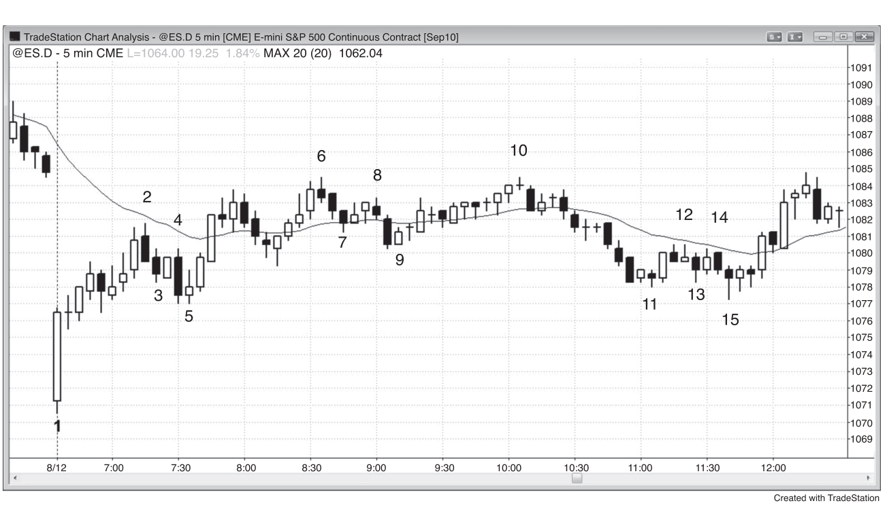
FIGURE PI.1 Two-Legged Pullbacks
Figure PI.1 and all of the charts in the book are available for download at www .wiley.com/go/tradingtrends, and you will be able to zoom in on the charts to see the details. Two-legged corrections are reliable setups for trades in the direction of the trend. Bar counting is discussed in detail in a later section (in the second book), but since ABC patterns appear on just about every chart, they are worth discussing briefly here. As shown in Figure PI.1, bar 3 was the first leg down after the strong move up to bar 2. That made it the A leg of the ABC pullback. The little move up to the bar 4 high was the B leg, and the move down to the bar 5 low was the C leg. Since most pullbacks are not clear ABC patterns and instead often have just one leg and others have three or four, it is useful to have an alternative way to describe what is happening. Labeling a four-legged pullback as an ABCDE is too awkward to be useful. Instead, when there is a pullback in a bull leg, like to bar 3 in Figure PI.1, then the first bar that goes above the high of the prior bar is a high 1 long entry. Bar 4 is an example, as is the bar after bar 7. If the pullback continues down for a second leg, like it did to bar 5, then the first bar after bar 5 that goes above the high of the prior bar would be a high 2 entry. The bar after bar 5 is an example of a high 2 long entry, as is the bar after bar 9. Bars 5 and 9 were the high 2 buy setups or signal bars. If there was a third leg down in the bull flag, the entry would be a
Figure PI.1 high 3 buy entry, and if there was then a fourth leg down and the market turned up, the entry would be a high 4 long. When the market is in a bear leg, like it was in the move down from bar 10, the first leg up is the A leg of the ABC correction. Bar 12 or the bar before it was that A leg. The pullback from that small leg up was the B leg, which was bar 13. And then the second leg up was the C leg, which ended with the bar before bar 14. This was a sideways ABC, and it is common for the C leg to not surpass the A leg in an ABC pullback. Bar 13 was a low 1 short entry, as it was the first bar that traded below the low of the prior bar in a bear flag. Bar 15 was a low 2 short entry bar.
The big legs are essentially unstoppable, but the small price action is fine-tuned by some institutional traders who are watching every tick or have programs designed to take trades based on small price movements. For example, some Emini traders will try to scalp out with a one-point profit, or four ticks. If they just entered a buy, the market will usually have to move six ticks above the high of the signal bar. They probably entered on a buy stop at one tick above the high of the signal bar, and their profit-taking limit order is four ticks above their entry price. It usually will not get filled unless the market trades one tick higher than their limit order, which is six ticks above the signal bar’s high. Sometimes when the market just keeps hitting five ticks but not six (a potential five-tick failure), there will suddenly be a trade of 250 Emini contracts and the price does not tick down. In general, anything over 100 contracts should be considered institutional in today’s Emini market. Even if it is just a large individual trader, he likely has the insight of an institution, and as he is trading institutional volume, he is indistinguishable from an institution. Since the price is still hanging at five ticks, almost certainly that 250-lot order was an institutional buy. This is because if institutions were selling in a market filled with nervous longs, the market would fall quickly. When the institutions start buying when the market is up five ticks, they expect it to go more than just one tick higher and usually within a minute or so the price will surge through six ticks and swing up for at least many more. The institutions were buying at the high, which means that they think the market will go higher and they will likely buy more as it goes up. Also, since four-tick scalps work so often, it is likely that there is institutional scalping that exerts a great influence over most scalps during the day.
Traders pay close attention to the seconds before key time frames close, especially 3, 5, 15, and 60 minute bars. This is also true on key volumes for volume bar charts. For example, if many traders follow the 10,000 shares per bar chart for the 10-Year U.S. Treasury Note Futures contract, then when the bar is about to close (it closes on the first trade of any size that results in at least 10,000 shares traded since the start of the bar, so the bar is rarely exactly 10,000 shares), there may be a flurry of activity to influence the final appearance of the bar. One side might want to demonstrate a willingness to make the bar appear more bullish or bearish. In simplest terms, a strong bull trend bar means that the bulls owned the bar. It is
Figure PI.1 very common in strong trends for a reversal bar to totally reverse its appearance in the final few seconds before a 5 minute bar closes. For example, in a strong bear, there might be a long setting up with a very strong bull reversal bar. Then, with five seconds remaining before the bar closes, the price plummets and the bar closes on its low, trapping lots of front-running longs who expected a bull trend reversal bar. When trading countertrend against a strong trend, it is imperative to wait for the signal bar to close before placing your order, and then only enter on a stop at one tick beyond the bar in the direction of your trade (if you are buying, buy at one tick above the high of the prior bar on a stop).
What is the best way to learn how to read price action? It is to print out charts and then look for every profitable trade. If you are a scalper looking for 50 cents in AAPL or two dollars in GOOG on the 5 minute chart, then find every move during the day where that amount of profit was possible. After several weeks, you will begin to see a few patterns that would allow you to make those trades while risking about the same amount. If the risk is the same as the reward, you have to win much more than 60 percent of the time to make the trade worthwhile. However, lots of patterns have a 70 percent or better success rate, and many trades allow you to move your stop up from below the signal bar extreme to below the entry bar extreme while waiting for your profit target to be reached, reducing your risk. Also, you should be trying to enter trades that have a good chance of running well past your profit target and you should therefore only take partial profits. In fact, initially you should focus on only those entries. Move your stop to breakeven and then let the remainder run. You will likely have at least a couple of trades each week that run to four or more times your initial target before setting up a reverse entry pattern.
Fibonacci retracements and extensions are a part of price action, but since most are just approximations and most fail, they only occasionally are helpful in trading. For example, the first pullback in a new trend often retraces about 62 percent of the first leg but not often enough to place a limit order to enter there. That limit order would have you entering in the opposite direction of the market. For example, if the market is falling and you are trying to buy what you hope will become a higher low, the risk/reward ratio is not high enough and the stress is too great to be doing that routinely; however, there are exceptions when it is a sensible strategy. If a Fibonacci number is good, it will be associated with a chart pattern that is reliable and tradable on its own, independent of the Fibonacci measurement or any indicators.
Elliott Wave Theory is also a type of price action analysis, but for most traders it is not tradable. The waves are usually not clear until many, many bars after the ideal entry point, and with so many opposite interpretations at every instant, it requires far too much thought and there is too much uncertainty for most active day traders.
The Spectrum of Price Action: Extreme Trends to Extreme Trading Ranges
Whenever anyone looks at a chart, she will see areas where the market is moving diagonally and other areas where the market is moving sideways and not covering many points. The market can exhibit a spectrum of price behavior from an extreme trend where almost every tick is higher or lower than the last to an extreme trading range where every one- or two-tick up move is followed by a one- or two-tick down move and vice versa. Only rarely will the market exist in either of these extreme states, and when it does, it does so only briefly, but the market often trends for a protracted time with only small pullbacks and it often moves up and down in a narrow range for hours. Trends create a sense of certainty and urgency, and trading ranges leave traders feeling confused about where the market will go next. All trends contain smaller trading ranges, and all trading ranges contain smaller trends. Also, most trends are just parts of trading ranges on higher time frame (HTF) charts, and most trading ranges are parts of trends on HTF charts. Even the stock market crashes of 1987 and 2009 were just pullbacks to the monthly bull trend line. The following chapters are largely arranged along the spectrum from the strongest trends to the tightest trading ranges, and then deal with pullbacks, which are transitions from trends to trading ranges, and breakouts, which are transitions from trading ranges to trends.
An important point to remember is that the market constantly exhibits inertia and tends to continue to do what is has just been doing. If it is in a trend, most attempts to reverse it will fail. If it is in a trading range, most attempts to break out into a trend will fail.
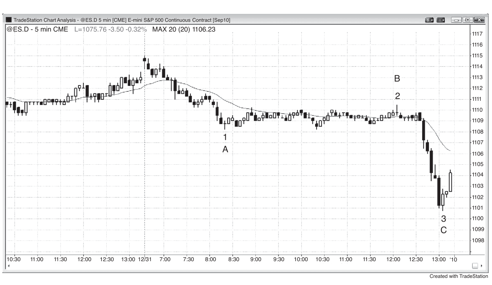
Figure 1.1 has two extreme trends and one extreme trading range. This day began with a strong bear trend down to bar 1, then entered an unusually tight trading range until it broke out to the upside by one tick at bar 2, and then reversed to a downside breakout into an exceptionally strong trend down to bar 3.
Two-legged moves are common, but unfortunately the traditional nomenclature is confusing. When one occurs as a pullback in a trend, it is often called an ABC move. When the two legs are the first two legs of a trend, Elliott Wave technicians instead refer to the legs as waves 1 and 3, with the pullback between them as wave 2. Some traders who are looking for a measured move will look for a reversal back up after the second leg reaches about the same size as the first leg. These technicians often call the pattern an AB = CD move. The first leg down begins with point A and ends with point B (bar 1 in Figure 1.1, which is also A in the ABC move), and the second leg begins with point C (bar 2 in Figure 1.1, which is also B in the ABC move) and ends with point D (bar 3 in Figure 1.1, which is also C in the ABC move).
Some corrections go for a third or even a fourth leg, so I prefer a different labeling system to account for this and discuss it later in the books. In its simplest form, it counts the legs of a pullback. For example, if there is a down leg in a bull trend or in a trading range and a bar then goes above the high of the prior bar, this breakout is a high 1. If the market then has a second leg down and then a bar goes above the high of a prior bar, the breakout bar is a high 2. A third occurrence is a high 3, and a fourth is a high 4. In a bear leg or in a trading range, if the market reverses back down after one leg, the entry is a low 1. If it reverses back down after two legs up, the entry is a low 2 entry and the bar before it is a low 2 setup or signal.
Since measured moves are an important part of trading and the AB = CD terminology is inconsistent with the more commonly used ABC labeling, the AB = CD terminology should not be used. Also, I prefer to count legs and therefore prefer numbers, so I will refer to each move as a leg, such as leg 1 or the first push, and then leg 2, and so forth. After the chapter on bar counting in the second book, I will also use the high/low 1, 2, 3, 4 labeling because it is useful for traders.
Deeper Discussion of This Chart
The day broke out above yesterday’s high on the open and the breakout failed, leading to a “trend from the open” bear trend day. This was also a trend resumption bear trend day. Whenever there is a strong trend on the open and then a tight trading range for several hours, the chances for a trend resumption day are good. There is often a false breakout between approximately 11:00 a.m. and noon PST, trapping traders into the wrong direction, and that failed breakout is a great setup for a swing trade into the close.
Trend Bars, Doji Bars, and Climaxes
The market either is trending on the chart in front of you or it is not. When it is not, it is in some kind of trading range, which is composed of trends on smaller time frames. When two or more bars largely overlap, they constitute a trading range. The trading range can have many shapes and many names, like flags, pennants, and triangles, but the names are irrelevant. All that matters is that the bulls and bears are in some equilibrium, often with one side slightly stronger. On the level of an individual bar, it is either a trend bar or a trading range bar. Either the bulls or bears are in control of the bar or they are largely in equilibrium (a one-bar trading range).
The two most important concepts in trading are that there is a mathematical basis for everything, and that at any moment when you are convinced of the market’s direction, there is someone equally smart who believes the opposite. Never be convinced of anything, and always be open to the possibility that the market will do the exact opposite of what you believe. Although the market at times is imbalanced and moves strongly up or down for many bars, most of the time it is relatively balanced, even though it might not appear to be so to a beginner.
Every tick is a trade, which means that there was someone who thought that the price was a good value to sell, and someone else who thought it was a good value to buy. Since the market is controlled by institutions and they are smart, both of these traders are smart and were acting rationally, and both have strategies that they have tested and shown to be profitable. One of the most important skills that a trader can develop is the ability to understand whether a trend bar is the beginning or end of a move. If you see a strong bull trend bar only as bullish and a strong bear trend bar only as bearish, you are missing what half of the big players are doing. Around the high of every bull trend bar, there are bulls buying the strength. There are also other bulls who are looking for a pullback and will buy near the low of the bar if the market gets there. However, it is important to realize that there are other bulls who expect the strength to fail and they are using the strength as an opportunity to sell out of their longs and take profits. There are also bears who see the bull trend bar, no matter how strong, as a climactic, failed effort by the bulls, and are shorting around the high of the bar. Some were sitting on the sidelines, waiting for a strong bull trend bar, so that they could short at what they consider to be an overdone rally. Other bears will short below the low of the bar, since they will see this as a sign of weakness that could lead to a tradable reversal. Similarly, there are profit-taking bears and new bulls buying at the bottom of every bear trend bar, no matter how strong the bar appears to be, and there are other bears who are looking to short near its high, and bulls looking to buy above its high.
For a trader, it is most useful to think of all bars as being either trend bars or nontrend (trading range) bars. Since the latter is an awkward term and most are similar to doji bars, it is simpler to refer to all nontrend bars as dojis. If the body appears tiny or nonexistent on the chart, the bar is a doji; neither the bulls nor the bears controlled the bar, and the bar is essentially a one-bar trading range. On a 5 minute Emini chart, a doji body is nonexistent or only a tick or two large, depending on the size of the bar. However, on a daily or weekly Google chart, the body can be 100 ticks (one dollar) or more and still have the same significance as a perfect doji, and therefore it makes sense to refer to it as a doji. The determination is relative and subjective, and it depends on the market and the time frame. In all of trading, close is close enough and perfection is rare. If something closely resembles a pattern, what follows will likely be what would be expected to follow the perfect pattern.
Subdividing bars with small bodies into a variety of subtypes like hanging man, hammer, or harami adds little to a trader. The fundamental issue is whether the bar and market are trying to trend, realizing that most of the time it is something in between. It is far more important to ascertain the strength of any trend than it is to spend time worrying about a precise name for a particular bar. You make money by placing trades, not by worrying about lots of meaningless, colorful names.
If there is a body, then the close trended away from the open and the bar is a trend bar. Obviously, if the bar is large and the body is small, there was not much trending strength. Also, within the bar (as seen on a smaller time frame), there may have been several swings of largely sideways movement, but this is irrelevant because you should focus on only one chart. Larger bodies, in general, indicate more strength, but an extremely large body after a protracted move or a breakout can represent an exhaustive, climactic end of a trend, and no trade should be taken until more price action unfolds. A series of strong trend bars is the sign of a healthy trend and will usually be followed by a further extreme, even if a pullback immediately ensues. Every trend bar is simultaneously (1) a spike; (2) a breakout; (3) a gap (as discussed in book 2, all breakouts are functionally identical to gaps and, therefore, so are all trend bars); and (4) a part or all of a vacuum and a climax (a pause or reversal bar ends a climax after one or consecutive trend bars). One or more of these four characteristics might be dominant in a particular trend bar and each offers trading opportunities, as will be discussed throughout the books. When it is a climax and the start of a reversal, it is due to the vacuum effect. For example, if a buy spike is followed by a reversal, the sharp rally was more than likely due to strong bears stepping aside and bulls waiting to exit longs until the market reached an area where both had been waiting to sell. If instead there is follow-through buying, then the buying was not due to the vacuum effect but rather a combination of strong bulls buying and strong bears believing that the market would rally further. Traders use the overall context to determine which is more likely. Their assessment will lead them to look to buy, sell, or wait. Obviously, every spike that leads to a reversal is a manifestation of the vacuum effect, but I reserve the term for spikes that end in a reversal at an obvious support or resistance level (dueling lines, discussed in book 2). Incidentally, crashes are examples of the vacuum effect. Both the 1987 and 2009 stock market crashes collapsed to just below the monthly trend line, where the strong buyers reappeared and strong bears took profits, leading to a sharp reversal upward. Also, stock traders routinely buy strong bear spikes in bull trends because they see the spike as a value play. Although they usually look for strong price action before buying, they will often buy a stock that they like at the bottom of a sharp sell-off, especially to the area of the bull trend line, even if it has not yet reversed up. They believe that the market is, temporarily, incorrectly underpricing the stock because of some news event, and they buy it because they doubt it will remain discounted for long. They don’t mind if it falls a little further, because they doubt that they can pick the exact bottom of the pullback, but they want to get in during the sell-off because they believe that the market will quickly correct its mistake and the stock will soon rally.
Pullbacks, which are discussed in book 2, are often strong spikes that make traders wonder if the trend has reversed. For example, in a bull trend, there might be a large bear trend bar or two that breaks below the moving average and maybe several ticks below a trading range. Traders will then wonder if the always-in direction is in the process of flipping to down. What they need to see is follow-through selling in the form of maybe just one more bear trend bar. Everyone will watch that next bar closely. If it is a large bear trend bar, most traders will believe that the reversal has been confirmed and will start shorting at the market and on pullbacks. If the bar instead has a bull close, they will suspect that the reversal attempt has failed and that the sell-off is just a brief, but sharp, markdown in price and therefore a buying opportunity. Beginning traders see the strong bear spike and ignore the strong bull trend in which it is occurring. They sell the close of the bear trend bar, below its low, any small bounce over the next few bars, and below any low 1 or low 2 sell setup. Smart bulls are taking the opposite side of those trades because they understand what is happening. The market is always trying to reverse, but 80 percent of those reversal attempts fail and become bull flags. At the time the reversal attempt is occurring, the two or three bear bars can be very persuasive, but without follow-through selling, the bulls see the sell-off as a great opportunity to get long again near the low of a brief sell climax. Experienced bulls and bears wait for these strong trend bars and sometimes step aside until one forms. Then they come into the market and buy because they view it as the climactic end of the selling. The bears buy back their shorts and the bulls reestablish their longs. This also happens at the end of a trend when the strong traders are waiting for one large trend bar. For example, in a strong bear trend near a support area, there will often be a late breakout in the form of an unusually large bear trend bar. Both the bulls and bears stopped buying until they saw it form. At that point, both buy the sell climax, because the bears see it as a great price to take profits on their shorts and the bulls see it as a brief opportunity to buy at a very low price.
Sometimes that bear spike can close on its low, and beginning traders are shocked that the market then slowly or quickly reverses back up. How can a large bear trend bar that closes on its low be followed by a small bull inside bar and then a reversal up to a new high of the day? What they don’t realize is that on a smaller time frame, that strong bear trend bar had a clear reversal pattern, like maybe a three-push pattern on a 100-tick chart of the Emini. However, even if they watched and traded the smaller time frame chart, they would lose money because the patterns form too quickly for traders to analyze them accurately. Remember, all patterns are the result of computer algorithms, and computers have a huge speed advantage. It is always a mistake to compete against an opponent who has an edge in a game where the margin for error is so small. When speed is critical, the computers have a huge edge, and traders should not trade against them. Instead, they should pick a time frame, like a 5 minute chart, where they have time to carefully process the information.
A trend bar is a critical component of a climax, and a climax is a critical component of a reversal, but traders often incorrectly use the term climax as synonymous with reversal. Every trend bar is a climax or part of a climax, and the climax ends with the first pause bar. For example, if there are three consecutive bull trend bars and then the next bar is a small bull trend bar with a prominent tail on the top, an inside bar, a doji, or a bear trend bar, then the climax ended with the three bull trend bars. This three-bar buy climax simply means that the market went too far too fast and that the enthusiasm to buy has quickly decreased to the point that the market has become two-sided. Some bulls are taking profits and would like to buy more at a lower price, and some bears are starting to short. If the bulls overwhelm the bears, the rally will resume, but if the bears overwhelm the bulls, the market will reverse down in a bear trend bar, which will be acting as a bear breakout, and the reversal pattern will be a climactic reversal top. The buy climax is a move up, and the climactic reversal top is the move up followed by the move down. The bull trend bar is acting more as a climax and the bear trend bar is acting more as a breakout, and together they create a climactic reversal top or a buy climax and reversal.
All strong bull trends have strong bull trend bars or consecutive bull trend bars, and each is a buy climax but most do not become the first leg of a climactic reversal. The reversal requires a buy climax and then a bear breakout, which is a strong bear trend bar. The bull and bear trend bars do not have to be consecutive and are often separated by many bars, but both are required to have a climactic reversal. In fact, every reversal at the top of a bull market is a climactic reversal, whether or not it looks like one on the chart in front of you. If the bull reverses with a strong bear reversal bar on the 5 minute chart, it is still a climactic reversal, but only on a smaller time frame. Although it is not worth searching for ever-smaller time frames for that perfect spike up followed by a spike down, it is always there. Also, whenever there is a climax top that takes place over many bars, it is always a single reversal bar on some higher time frame chart, and again it is not worth looking for the perfect time frame just to see the perfect reversal bar. Remember, traders are all looking for an edge and computer charting programs allow traders to quickly create charts based on every conceivable interval, and there will be traders out there basing their decisions on everything imaginable. This includes charts based not only on time but also on the number of ticks, the number of contracts traded, and any combination of these. There will always be someone out there who sees that perfect reversal bar and someone else who sees the spike up and then the spike down, but you do not have to see either if you understand what the chart in front of you is telling you. The opposite is true for climactic bottoms where a sell climax is followed by a reversal up. Climactic reversals are discussed more in Chapters 5 and 6 on signal bars, and again in book 3.
An ideal trend bar is one with a moderate-size body, indicating that the market trended away from the open of the bar by the time the bar closed. The minimum is a close above the open in a bull trend bar, indicated by a white candle body in these books. The bulls can demonstrate stronger control by having the body be about the same size as or larger than that of the median body size over the past five or 10 bars. Additional signs of strength are discussed in another section and include the open being on or near the low, the close on or near the high, the close at or above the closes and highs of several prior bars, the high above the high of one or more prior bars, and the tails being small. If the bar is very large and especially if it develops in a trend, it might represent exhaustion or a one-bar false breakout that is trapping new bulls, only to reverse down in the next bar or two. The opposite is true for bear trend bars.
All trend bars are attempts to break out into a trend, but as discussed in the next chapter, most breakouts fail. Also, all trends begin with a trend bar, which might have a body that might be only a little larger than the bodies of the recent bars. Sometimes it is large and followed by several other trend bars in the same direction, which indicates a stronger trend and one more likely to have followthrough.
When the market is in a trading range or a bear trend and is starting to create a number of bull trend bars, it is a sign of buying pressure and it is an attempt by the bulls to take control of the market and make it bull trend. Traders are buying small pullbacks within the bar because they believe that the market will soon be higher, and there might not be a bigger pullback for them to buy. When they buy in the final seconds of the bar as it is closing, they are afraid that the next bar might open near its low and then rally even more. They feel a sense of urgency and are eager to get long now, rather than wait for a pullback that might not come until after the market is much higher. They are buying below the low of the prior bar and below swing lows, and the market is transitioning into a bull leg or trend. The bears are no longer shorting heavily at the new lows. They are taking profits, and more and more bulls are seeing new lows as a great value and are buying them.
If bear bodies are starting to accumulate in a bull trend or trading range, it is a sign of selling pressure and the bears might soon be able to create a downtrend. For example, if the market is in a bull trend and has had a couple of pullbacks with large bear trend bars, and now has entered a trading range and there have been several swings with prominent bear trend bars, the selling pressure is building and the bears might soon be able to reverse the market into a bear leg or bear trend. Selling pressure is cumulative, and the more bear bodies and the larger the bodies, the more likely it is that the pressure will reach a critical point and overwhelm the bulls and drive the market down. The opposite is true of buying pressure. If there is a trading range or a bear trend and the bull trend bars are becoming larger and more numerous, the buying pressure is building and this makes a rally more likely.
Strong bulls create buying pressure and strong bears create selling pressure. Strong bulls and bears are institutional traders, and the cumulative effect of these strong traders determines the direction of the market. For example, signs of buying pressure in a bear trend include tails at the bottoms of bars, two-bar reversals or bull reversal bars at the bottoms of down swings, and an increasing number of bars with large bull bodies. It is the strong bulls buying at each new low and at the bottom of each bar that moves the close up off the low of the bar. This can only happen if the strong bears no longer feel that there is value in shorting at these lower prices. These bulls are willing to buy more if the market falls further, unlike weak bulls who would exit with a loss. The strong bears at this point are only willing to short higher. How do you know this? If enough of them were willing to short at the bottoms of the bars, they would have been able to overwhelm the bulls and the bars would have been closing on their lows and not in the middle or near the highs.
Whenever traders see signs of buying pressure, they assume that the strong bulls are buying at the lows and the strong bears are no longer willing to short at the lows and now are only willing to sell rallies. So when the strong bulls are buying at the bottom and strong bears are only willing to sell higher, what happens? The market enters a trading range. The strong bears will short at the top and not at the bottom and the strong bulls will buy at the bottom and not at the top. The weak traders usually do the opposite. The weak bulls continue to sell at the lows as they get stopped out, and they buy at the highs as they become afraid that they are missing a new bull trend. The weak bears short at the low, expecting a breakout, and they cover their shorts at a loss at the highs as they become afraid that the market is turning into a bull trend.
Everything is relative and subject to constant reassessment, even to the point of totally changing your opinion about the direction of the market. Remember, you can rarely be 60 percent certain of the market’s direction, and that can quickly change to 50–50 or even 60 percent in the other direction.
Yes, every bar is either a trend bar or a doji bar. A doji bar means that the bulls and bears are in balance. As the doji is forming, if you were to look at a small enough time frame, you would see that either the market went down and then up, creating a sell climax, or up and then down, creating a buy climax. As discussed in the section on Climactic Reversals in book 3 on climaxes, a climax does not mean that the market is reversing. It simply means that it went too far and too fast in one direction and now is trying the other way. At that point, the bulls keep buying as they try to generate upside follow-through and the bears keep shorting as they try to create a bear trend, and the result is usually a sideways market. The sideways trading can be as brief as a single bar or it can last for many bars, but it represents two-sided trading and is therefore a trading range. Since all dojis contain two-sided trading and are usually followed at least briefly by more two-sided trading, dojis should be thought of as one-bar trading ranges.
However, sometimes a series of dojis can mean that a trend is in effect. For example, if there is a series of dojis, each with a higher close and most with a high above the high of the prior bar and a low above the low of the prior bar, the market is displaying trending closes, highs, and lows, so a trend is in effect.
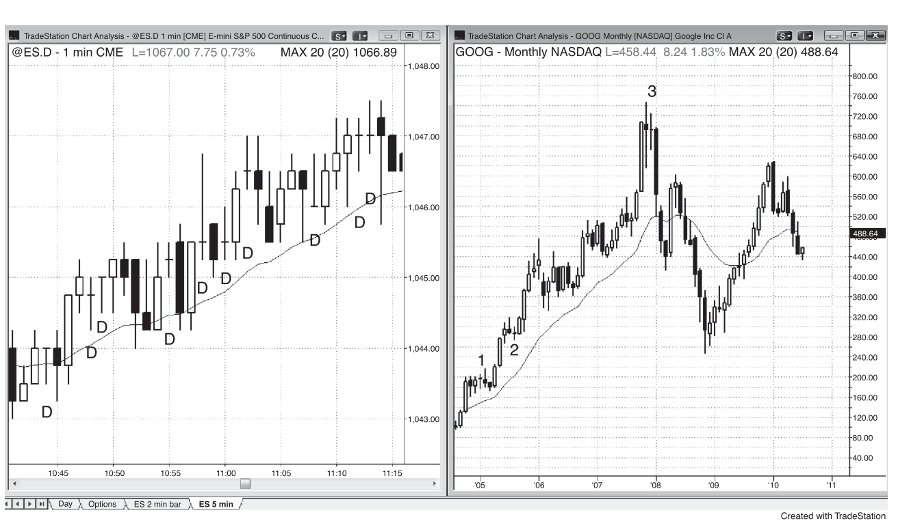
Figure 2.1 illustrates the shortcoming of restricting the term doji to only those bars with the close being at the same price as the open. Since basic price action analysis works on all time frames, it simply does not make sense to restrict the term to a perfect pattern. The 1 minute Emini chart on the left has 10 perfect dojis, despite the bull trend, whereas the monthly chart of Google (GOOG) on the right does not have a single doji. Although several bars look like dojis, even bar 3 with the smallest body still had a close that was 47 cents above its open. Using the classic definition in both cases does nothing to help a trader. In the GOOG chart, bar 3 was a great signal bar that behaved exactly as a doji would be expected to behave, and it should be traded that way. In trading, close is close enough and worrying about perfection can only cost you money.
Deeper Discussion of This Chart
When there is a very large bull trend bar occurring in a bull trend, as in the GOOG chart in
Figure 2.1, it may represent the last, desperate buyers buying, either to cover their losing shorts or to get into a very strong bull trend but at a very late stage. It is a buy climax, and after it forms there often is no one left to buy, leaving the bears in the control of the market. The large bear trend bar that followed created the second bar of a reversal.
On some higher time frame, this would be a perfect two-bar reversal. On an even higher time frame, this top would be a large bear reversal bar. After a spike up and a spike down, both the bulls and bears continue to trade as they attempt to create a channel in their direction. This creates a trading range that can be as short as a single bar or it can last many bars. Here, the two-sided trading formed a three-bar lower high. Eventually one side wins.
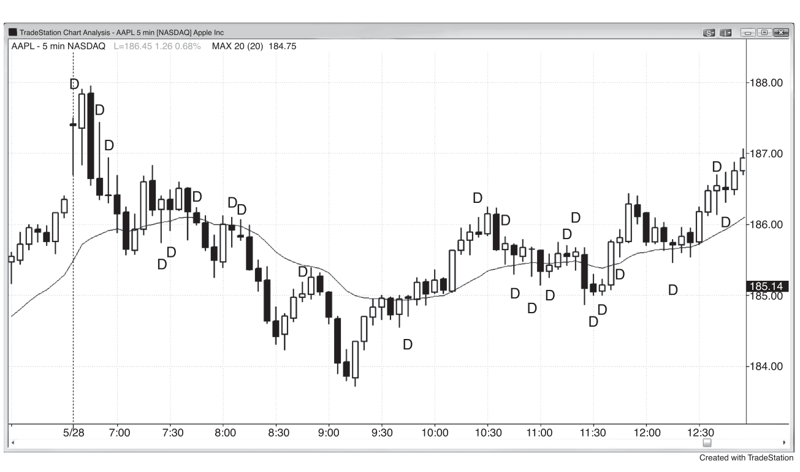
For trading purposes, it is useful to think of all bars as either trend bars or dojis (or nontrend bars, shown in Figures 2.1 and 2.2 with a D), and the labeling is loose. One bar with a small body could be a doji in one area of price action but a small trend bar in another. The only purpose for the distinction is to help you quickly assess whether one side is in control of the bar or bulls and bears are at a stalemate. Several of the bars in Figure 2.2 could arguably be thought of as both trend bars and dojis.
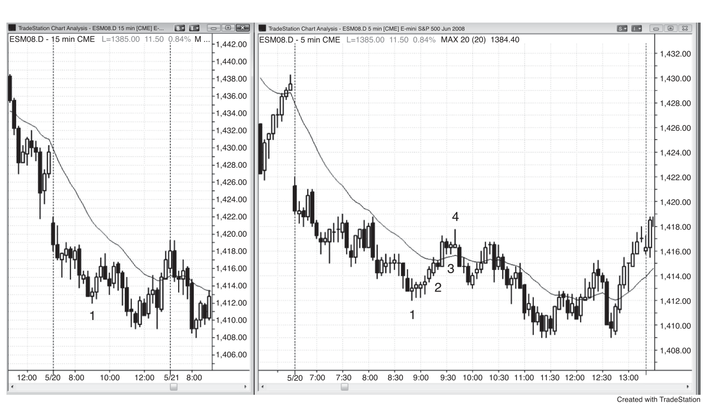
Individual dojis mean that neither the bulls nor the bears are controlling the market, but trending dojis indicate a trend. They are a sign of building buying pressure and this makes a rally more likely. In Figure 2.3, the 5 minute chart on the right had four dojis in a row, starting at bar 1, each with trending closes, highs, and lows. The 15 minute chart on the left shows that they created a bull reversal bar at what was then a new swing low.
Deeper Discussion of This Chart
The day began with a large gap down in Figure 2.3, which is a bear breakout, and then a large bear trend bar and was therefore likely to be some kind of bear trend day, and traders were looking to get short. The fourth bar of the day in the 5 minute chart on the right was a bull trend bar and an attempt by the bulls to reverse the day, but it failed, trapping bulls in and bears out. The failed breakout failed and this set up a breakout pullback short below that bull trend bar. The moving average (20-bar exponential moving average) gap bar at bar 4 was in a strong bear trend and was a good short for a test of the low of the day; but since the test usually results in a strong pullback or reversal, traders were looking to buy the new low and the later test of the low of the day.
In Figure 2.3, bar 1 was also a trend channel line overshoot on both charts, using the prior two swing lows to create the trend line. The market tried to break out of the bottom of the bear channel and accelerate downward but the breakout failed, as most breakouts do. Failures are especially common with trend channel line breakouts since they are an attempt to accelerate a trend and a trend tends to weaken over time.
Bar 4 was a doji, which is a one-bar trading range but still can be a good setup bar, depending on context. Here, it was a final flag reversal signal bar (an ii flag failed breakout) and a moving average gap bar short setup in a bear trend, and therefore a reliable signal for a test of the bear low. A bear rally to a moving average gap bar usually breaks the bear trend line, and the subsequent sell-offthat tests the bear trend’s low often is the final leg down before the market tries to reverse. Here, the test of the bar 1 low of the bear trend was a lower low, and traders should expect at least two legs up.
If the test was a higher low, then the move up to bar 4 would have been the first leg up and traders should expect at least one more leg up from that higher low.
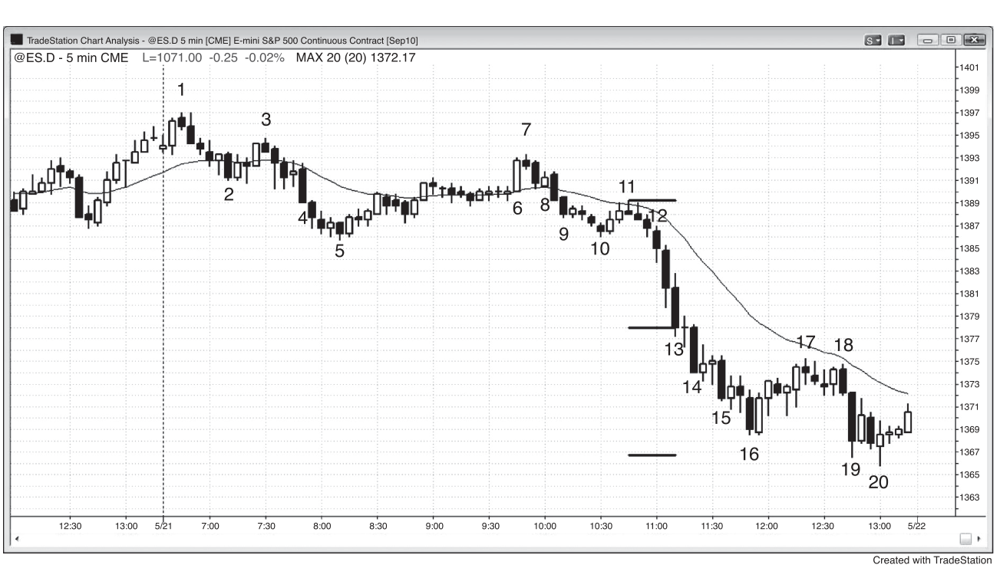
Just like dojis don’t always mean that the market is trendless, a trend bar does not always mean that the market is trending. In Figure 2.4, bar 6 was a strong bull trend bar that broke out of a line of dojis. However, there was no follow-through. The next bar extended one tick above the trend bar and then closed near its low. The longs exited at one tick below this bear pause bar and new shorts sold there as well, viewing this as a failed bull breakout. No one was interested in buying without more bullish price action, and this caused the market to drop. The bulls tried to protect the low of the bull breakout bar by forming a small bull trend bar (bar 8 was a setup for a breakout pullback long, although it was never triggered), but the market fell through its low; these new early bulls exited again there, and more new shorts came in. At this point, after the bulls failed in two attempts, they would not be willing to buy without substantial price action in their favor, and both they and the bears would be looking for at least two legs down.
Trend bars can mean the opposite of what they appear to be telling traders. A beginner might have seen the strong trend bar before bar 3 as a breakout into a new bull trend. An experienced trader would have needed follow-through in the form of a second or third bull trend bar before believing that the always-in trade had reversed to up. Experienced traders sold the close of the bar, above the bar, the close of bar 3, and below bar 3. The bulls were scalping out of their longs and the bears were initiating new swing shorts. This same kind of bull trap happened on the bull trend bars that ended bear flags at the bars before bars 7 and 17. The opposite happened at bar 19 where the one of the largest bear trend bars of the day was the beginning of the end of a bear trend. Whenever a large bear trend bar forms in a bear trend that has gone on for 30 or more bars without much of a pullback, it often represents a sell vacuum and an exhaustive sell climax. Sometimes it is the low of the bear trend, and other times, the market falls for a few more bars before trying to reverse. When the strong bulls and bears see some support level and expect it to be tested, they step aside and wait for a large bear trend bar to form. Once it does, they both buy aggressively. The bears buy back their shorts and the bulls buy new longs. Both are expecting a larger correction that should have at least two legs, last at least 10 bars, and poke a little above the moving average. The market might go on to a trend reversal, but traders need to see the strength of the rally before deciding how far they think it will go.
Deeper Discussion of This Chart
Today broke out above yesterday’s high, as shown in Figure 2.4, but reversed down in a failed breakout and a trend from the open bear trend. This was basically a bear trend resumption day, although it was a trading range day for the first several hours. The most important trade of the day was the collapse that began at 11:00 a.m. PST. Once the bar 12 breakout formed, traders needed to consider the possibility of a bear trend resumption. When the next bar had an even larger bear body, traders needed to get short. They could even have waited for the next bar, bar 13, which was another strong bear trend bar. Shorting a collapse after a quiet period is very difficult to do because by this point, traders were complacent, expecting the day to remain quiet. However, this was a very high-probability short. Bars 12 to 13 had large bear bodies that did not overlap. They formed a strong bear spike with follow-through for several bars. The odds were high that the market would have some kind of measured move down from the high or open of the first bar to the close or low of the final bar of the spike. Since the bars are large and the market was moving fast, traders were afraid of the risk of a large reversal.
The best thing to do is to short at the close of bar 13 or the bar before it and use a protective stop above the high of that signal bar. If you are afraid, just short a very small position to be sure to be in the trade. Once you have another strong bear trend bar, like bar 14, move your stop either to breakeven or to above the high of that bar and hold into the close.
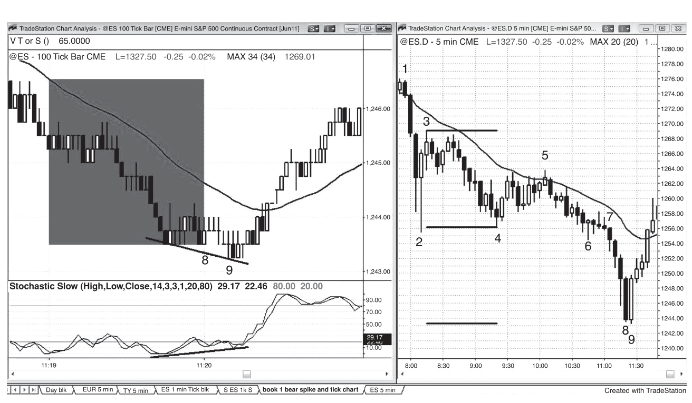
The market was in a strong bear trend on the 5 minute Emini chart on the right in Figure 2.5, but reversed up sharply after the large bar 8 bear trend bar. Bar 9 formed a two-bar reversal at a measured move down from bar 3 to bar 4 (measured moves are discussed in book 2). Could traders have watched a smaller time frame chart and then bought as a small reversal pattern was being triggered? The chart on the left is a tick chart with each bar being 100 ticks. After every 100 trades took place, the bar closed and a new bar began. Bar 8 on the 5 minute chart ended at 11:20 a.m. PST, and bar 8 on the tick chart is made of the final 100 ticks of that 5 minute bar. Bar 9 on the tick chart corresponds to the low of bar 9 on the 5 minute chart. On the tick chart, the market formed a double bottom that broke to the downside at bar 9, but the bear breakout failed and the market reversed up. It occurred with a divergence on the stochastics indicator. This is a very orderly, traditional reversal setup, but there was a problem here that made it untradable. The gray box on the left is the final minute of the 5 minute bar on the right, and it contains 33 bars! That is far too much information for a human to process reliably and then be able to place orders in a timely and accurate way. The markets are controlled by computers, and sometimes prices move very quickly. Trading profitably is always difficult, and it is virtually impossible when speed is critical, because microsecond speed is an edge that only computers have. You cannot hope to make money trading when your opponent has a clear advantage. There were many ways for experienced traders to buy on this 5 minute chart, including buying at the market as bar 8 closed or buying above bar 9, and these are discussed in book 3.
So what took place in the bear spike from bar 7 to bar 9? Each bear body became progressively larger, which is a sign of increasing bear strength. However, it is also a sign of a potential sell climax, as it was here. When a bear trend has gone on for 30 or more bars and is at a support level, both bulls and bears step aside and wait for a large bear trend bar, and then buy aggressively. There was a measured move at the bar 9 low, but there are always many support levels present when a trend reverses, even though most are not visible to beginning traders. Because the strong bulls and bears are waiting for an unusually strong bear trend like this before buying, the absence of buying as the market approaches support leads to a sell vacuum and the formation of the large bear trend bar. Once it forms, the bears quickly buy back their shorts and take their profits, and the bulls initiate new longs. Both understand what is taking place and both expect a large correction or even a reversal, so the bears won’t look to short and the bulls won’t look to sell out of their longs to take profits until the market rallies at least a couple of legs and at least 10 bars, and at least gets above the moving average. The result often is a sharp rally, and it can begin with a very strong bear trend bar.
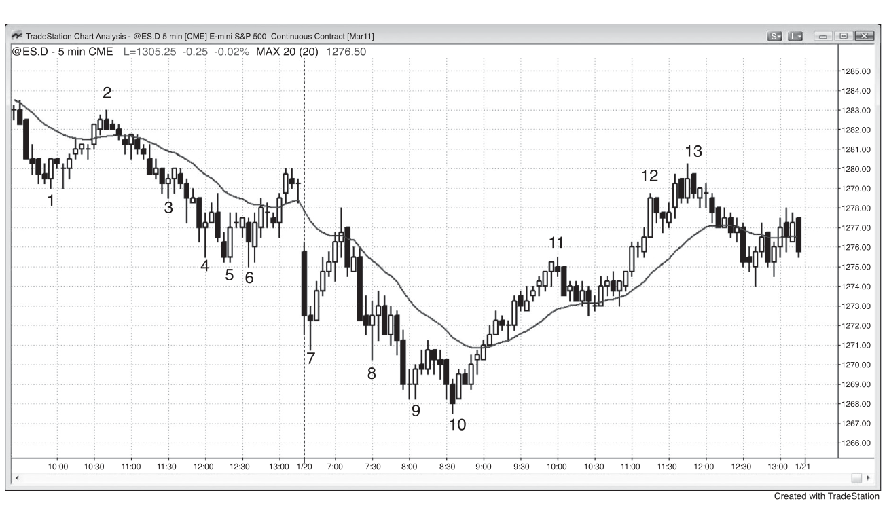
When bears begin to see a new low as a good place to take profits instead of as a great place to short for a new leg down, and bulls see it as a good price to begin to get long, the market is transitioning from a strong trend into more of a two-sided market. As shown in Figure 2.6, in the bear trend down from bar 2, every time the market fell below the most recent swing low, a bull bar or a bar with a large tail formed within a bar or two. This was a sign of buying pressure, which is cumulative. When there is enough, the bulls can take over a market and create a large bear rally or even a trend reversal.
At the bar 13 top, bear bodies started to accumulate, and this selling pressure was a sign that the market might soon pull back.
Breakouts, Trading Ranges, Tests, and Reversals
Just like a bar can be a trend bar or a trading range bar, any segment of a chart can be classified as trending where either the bulls or the bears are dominant, or two-sided where both the bulls and the bears alternately assume relative control. When the market breaks out into a trend, there is usually a trend bar, which can be small or large, followed by many bars that are trending as the market spikes away from the trading range. One of the most important skills that a trader can develop is the ability to reliably distinguish between a successful and a failed breakout (a reversal). Will the breakout lead to a swing in the direction of the breakout or in the opposite direction? This is discussed in detail in the second book. In thinly traded markets, the breakout can appear as a gap rather than a trend bar, and that is why a trend bar should be thought of as a type of gap (discussed in detail in book 2). At some point, the market begins to have pullbacks and then the trend slows into a shallower slope and becomes more of a channel where a trend line and a trend channel line can be drawn. As the trend continues, the lines should be redrawn to contain the developing price action. Usually the slope becomes shallower and the channel becomes wider.
Some form of this spike and channel behavior happens to some extent every day in all markets. The start of the channel usually becomes the start of an incipient trading range. For example, if there is a spike up (an upside breakout) that lasts several bars, there will then be a pullback. Once the pullback ends and the trend resumes up, it usually does so in a channel rather than a nearly vertical spike, and there is usually more overlap of the bars, more small pullbacks, more bars with tails, and some bear trend bars. The bottom of the channel phase of the trend will usually be tested within a day or two. Once that pullback begins and the market is moving down toward the start of the channel, traders will suspect that a trading range is forming, and they are right. Price action traders will anticipate that trading range as soon as the spike ends and the channel begins, and a few bears will begin scaling into shorts on that first pullback after the spike. Since they are confident that the low of the channel will soon be tested, they will scale in shorts on other pullbacks and above the highs of prior bars as the market continues up. Later in the channel, more bears will scale in above bars. Once the market turns down into a larger pullback that tests the bottom of the channel, they will exit all of their shorts with profits on later entries and at breakeven on their first. Since many traders will cover their shorts around the bottom of the channel, their buying along with bulls returning to buy where they bought earlier (at the bottom of that first pullback after the spike up) will lift the market once again, and the trading range will broaden. After this bounce, the effect of the spike and channel has played out and traders will look for other patterns.
Because channels usually get retraced eventually, it is helpful to look at all bull channels as bear flags and all bear channels as bull flags. However, if the trend is strong, the breakout may go sideways and be followed by more trending. Rarely, the breakout can be in the trend direction and the trend can accelerate sharply. For example, if there is a bull spike and then a bull channel, rarely the market will break out above the trend channel line and the bull trend will accelerate. Usually the breakout will fail within five bars or so and the market will then reverse.
Although most trading ranges are flags on higher time frame charts, and most of them break out in the direction of the trend, almost all reversals begin as trading ranges, which will be discussed in the section on reversals in the third book.
A test means that the market is returning to an area of support or resistance, like a trend line, a trend channel line, a measured move target, a prior swing high or low, a bull entry bar low or a bear entry bar high, a bull signal bar high or a bear signal bar low, or yesterday’s high, low, close, or open. Traders often place trades based on the behavior at the test. For example, if the market had a high, a pullback, and then a rally back up to that high, the bulls want to see a strong breakout. If one appears to be developing, they might buy at one tick above the old high or they might wait for a pullback from the breakout and then buy at one tick above the high of the prior bar, expecting a resumption of the breakout. The bears are looking for a reversal. If the rally up to the old high lacks momentum and then the market forms a reversal bar in the area of the old high, they will short below the reversal bar. They don’t care if the test forms a higher high, a double top, or a lower high. They just want to see the market reject the prices in this area to validate their opinion that the market is too expensive up here.
A reversal is a change from one type of behavior to an opposite type of behavior, but the term is most often used to describe a change from a bull trend to a bear trend or from a bear trend to a bull trend. However, trading range behavior is arguably opposite to trending behavior, and when a trend is followed by a trading range, the market’s behavior has reversed. When a trading range becomes a trend, the market’s behavior has reversed as well, but that change is called a breakout. No one calls it a reversal, although it is technically reversing two-sided trading into one-sided trading.
Even though most traders think that a reversal is from a bull trend to a bear trend or a bear trend to a bull trend, most reversals fail to lead to an opposite trend and instead become a temporary transition from a bull or bear trend into a trading range. Markets have inertia and are very resistant to change. When there is a strong bull trend, it will resist change; almost every attempt at a reversal will end up as a bull flag, and the trend will then resume. Each successive bull flag will tend to get larger as the bulls become more concerned at new highs with taking profits and less interested in buying heavily, and the bears will start becoming increasingly aggressive. At some point, the bears will overwhelm the bulls, the trading range will break to the downside, and a bear trend will begin. However, this usually happens after several earlier reversal attempts resulted in increasingly larger bull flags where the bulls overpowered the bears and a bear trend failed to develop. Even though most reversals simply lead to trading ranges, the move is usually large enough to result in a swing trade, which is a large-enough move to create a substantial profit. Even if an opposite trend eventually unfolds, traders will take at least partial profits at the first reasonable targets, just in case the reversal only leads to a trading range, which is usually the case.
Reversals have different appearances, depending on the chart that you are using. For example, if you see a large bear reversal bar on a monthly chart, it might be a two-bar reversal on a weekly chart, and it might be a three-bar bull spike, which is a buy climax, and then a 10-day trading range, and finally a two-bar bear breakout on the daily chart. It does not matter what chart you are using as long as you recognize the pattern as a reversal, and all of these patterns are reversal patterns.
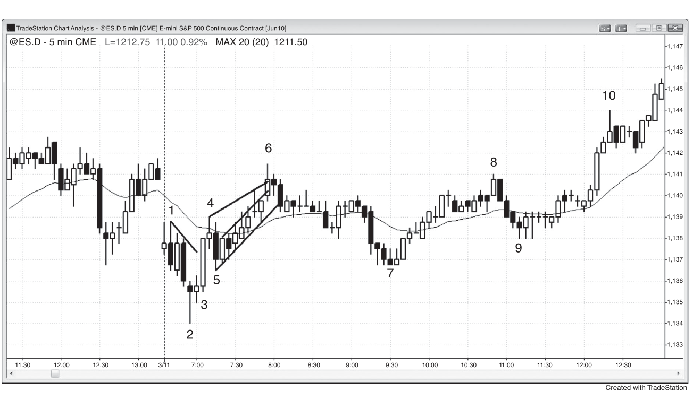
The 5 minute Emini chart in Figure 3.1 shows examples of breakouts, trading ranges, and tests. Every swing is a test of something, even though most traders don’t see what is being tested. Many of the tests are related to price action on other time frames and other types of charts, and include tests of different types of moving averages, bands, Fibonacci levels, pivots, and countless other things.
The market tested yesterday’s low, but the breakout failed and formed a lower low as it reversed up sharply in a spike up to bar 4. Every breakout, whether it is successful or fails, is eventually followed by a trading range, as it was here. A failed breakout to a new low indicates that the bulls and the bears agree that the price is too low. The bears will take profits and not sell very much at these low prices and the bulls will continue to buy aggressively until both believe that the market has reached a new area of equilibrium, which is a trading range.
Bar 1 was the signal bar for the sell-off on the open, and the market should not have been able to go above its high if the bears were still in control.
Bar 4 was a higher high test of the bar 1 high, and the upward momentum was so strong that the market would likely test up at least one more time before the bulls would give up. The double top (double tops and bottoms are rarely exact) resulted in only a one-bar pullback before the breakout above bar 1 succeeded.
Bar 5 tested the high of the bar 2 signal bar and formed a higher low.
Every sharp move and every strong reversal should be thought of as a breakout of something. It does not matter if you view this sharp move up from bar 2 as a breakout above the small bear trend line drawn from bar 1 or as a breakout above the bar 2 reversal bar. What does matter is that during this spike, the market agreed that the price was too low and it was trending quickly to find an area where both the bulls and the bears were comfortable placing trades. This resulted in a channel up from bars 5 to 6, and within the channel, there were many bars that overlapped with the bar before or after. This overlap of bars represents a hesitation by the bulls where the market was now able to trade down for a few ticks and a few minutes before moving higher. Some bulls were taking profits as the market was working higher, and bears were beginning to short. Many were adding to their shorts (scaling in) as the market went up, just as many bulls were taking more and more off (scaling out). This channel is a weaker bull move, and channels are usually the start of a trading range. As you can see, the market retraced back to around the start of the channel by bar 7. Bar 7 was a higher low test of the bar 5 swing low and a second test of yesterday’s low, and the market reversed up in a double bottom. Bar 8 was a lower high test of the bar 6 high and of yesterday’s close, and formed a double top instead of a breakout. It also tested the high of the bear inside bar that followed bar 6, and that bar was the signal bar for the sell-off that followed. The reversal down to bar 9 tested the moving average and became simply a pullback from the breakout attempt; it was followed by a successful breakout to a new high of the day. Bar 9 also tested the long entry above the bull bar that followed bar 7, and it missed the breakeven stop by a tick. When the bulls are able to prevent their breakeven stop from being hit, they are strong and a new high usually follows.
Deeper Discussion of This Chart
When a chart discussion runs for multiple pages, remember that you can go to the John
Wiley & Sons website at www.wiley.com/go/tradingtrends and either view the chart or print it out, allowing you to read the description in the book without having to repeatedly flip pages back to see the chart.
In Figure 3.1, bar 3 was a large bull trend bar that was the start of a bull trend, and it should be thought of as a breakout and a breakout gap.
The market broke below the bull channel into yesterday’s close, and a bull channel is a bear flag. The breakout had some follow-through, but there were bull bodies and overlapping bars, indicating that the bulls were active. The market then broke out below yesterday’s swing low, and the breakout failed and became the low of the day. If you did not buy the bar 2 reversal up from yesterday’s low, the bar 3 strong bull trend bar showed you that the always-in position was up and you should look to buy either at the market or above the bar 5 pullback. Always in is discussed in detail in the third book, but it basically means that if you have to be in the market at all times, either long or short, the always-in position is whatever your current position is. This is a very important concept, and most traders should trade only in the always-in direction. The bar
7 double bottom pullback was another chance to get long, hoping for a second leg up into the close.
This type of pattern is a spike and channel bull trend. It is useful here because it shows a market transitioning from one-sided trading (a strong trend) to two-sided trading (a trading range). It does not matter if you view bar 3 alone as the spike or the entire sharp move from bars 2 to 4 as the spike. The market pulled back to bar 5 and then rallied in a less urgent fashion. The bars mostly overlapped one another, and a trader could draw a channel that contained prices fairly well. You could also draw a trend channel line across the highs and highlight a wedge type of channel, which is also discussed later. Some traders would have shorted below the low of bar 4 and then scaled in more shorts at other pullbacks as the market moved up. Other traders would wait for the wedge top, where they would take profits on longs or initiate shorts. As soon as the spike is followed by the pullback to bar 5 and then channel type behavior begins to form, traders will see this bull channel as a possible bear flag and expect that the low of the channel will get tested. In small patterns like this one, the test usually is later in the same day; but in larger patterns, the test might come a day or two later.
The market had the expected two-legged correction from the wedge top to the bottom of the channel, where the bears will take profit on all of their entries. Their earlier entries will be only approximately breakeven trades, but their later entries will be profitable. Also, bulls will again look to buy around the low of bar 5 where they bought earlier at the end of the first pullback, and that becomes the start of the channel. The buying by the bulls and by the short-covering bears usually results in a bounce. That bounce can be a rally from a double bottom (bars 5 and 7) bull flag, or it could be followed by a protracted trading range or even a bear trend.
Also notice that the bar 2 low was the third push down and therefore a wedge reversal.
Bar 6 was a double top bear flag (the first top was the final bar of yesterday) and bars 5 and 7 created a double bottom bull flag. This was followed by the bar 9 double bottom pullback. You could describe the price action between bars 5 and 9 as a triangle that could break out in either direction, but that would overlook the bullishness that the market was showing you.
Bar 7 was a wedge bull flag because it was the third push down from the bar 6 high.
Bar 8 was a final flag reversal after the six-bar bull flag that preceded it.
Bar Basics: Signal Bars, Entry Bars, Setups, and Candle Patterns
Traders look for setups all day long. A setup is a chart pattern composed of one or more bars that leads a trader to believe that an order can be placed that has a good chance of resulting in a profitable trade. In practice, every bar on the chart is a setup because the next bar always can be the start of a strong move in either direction. If the trade is in the direction of the recent or prevailing trend, it is with trend, and if it is in the opposite direction, it is countertrend. For example, if the recent trend is up and you buy, the setup was a with-trend setup. If instead you shorted, the setup that you used as the basis for your trade was a countertrend setup and your short was a countertrend trade.
A signal bar is always labeled in hindsight, after the bar has closed and after a trade is entered. As soon as your entry order is filled, the prior bar becomes a signal bar instead of just a setup bar and the current bar is the entry bar. The bar after entry is the follow-through bar, and it is always better when there is a second bar in the direction of your entry. Sometimes the market will go sideways for a bar or two before there is a follow-through bar, and this is still good because as long as there is follow-through, the odds of making more from your trade increase.
There are both bulls with buy stops above the high of the prior bar and bears with sell stops below the low of that same bar. There are also bulls with buy limit orders at and below the low of the prior bar and bears with sell limit orders at and above the high of the prior bar. That means that every bar is a signal bar for both long and short trades, with both bulls and bears entering on the breakout of both the top and the bottom. Also, every bar can be thought of as a one-bar trading range. If the next bar goes above or below it, breakout traders will expect this breakout to have enough follow-through for them to make at least a scalper’s profit. However, equally smart traders will expect the breakout to fail and will trade in the opposite direction. If the market goes one tick above the high of the prior bar, there will be bulls who will buy on a stop order, and the prior bar is the signal bar for their long. There will also be bears who will short on a limit order at the high of the prior bar, expecting the breakout to fail. They hope that the market will trade below the low of their entry bar on the bar after they short, and their entry bar will then become a signal bar for a short trade. One of the most important things to realize about trading is that no matter how convinced you are that you are right, there is someone just as smart and just as convinced that the opposite will happen.
The single most important skill that a trader can develop is the ability to determine the times when there will be more buyers or sellers above or below the prior bar. Signal bars in the right context are times when there is such an imbalance. For example, when there is a bull signal bar in a pullback in a bull trend, there are probably more buyers than sellers above the bar, so looking to buy above the bar makes more sense than looking to short there. Whenever a trader believes that there is an imbalance, he has an advantage, but it is always very small because there are always smart traders who believe the opposite (someone has to take the opposite side of your trade, or else your order will not get filled). As traders, our edge is our ability to read price action, and the better we become, the greater our edge, and the greater the probability that we can make a living from trading. Here are common signal bars and setups (they are discussed further in the next couple of sections):
Continuation signal in the spike phase of a strong trend: A continuation signal can be buying at the top of a bull trend or selling at the bottom of a bear trend.
- Strong bull trend bar in a bull spike.
- Strong bear trend bar in a bear spike. Reversal signals: A reversal pattern can be a trend reversal or a pullback that is ending and reversing back into the direction of the trend.
- Reversal bar.
- Two-bar reversal.
- Three-bar reversal.
- Small bar:
- An inside bar.
- An ii (or iii) pattern.
- A small bar near the high or low of a big bar or trading range.
- An ioi pattern.
- Outside bar and an oo pattern (an outside bar followed by a larger out-
- side bar).
- Double top and bottom.
- Failed reversal attempt, including a reversal bar failure.
- Failed continuation attempt, like buying below a low 1 signal bar in a
- bear trend that appears to be bottoming or shorting above a high 1 signal bar in a bull trend that appears to be topping.
- Shaved bar: a bar with no tail at either the top or the bottom.
- Trend bar: A bull trend bar can be a sell setup in a rally in a strong bear
- trend and near the top of a trading range, and a bear trend bar can be a buy setup in a pullback in a strong bull trend and near the bottom of a trading range.
- Any pause or pullback bar in the spike phase of a strong trend.
- All bars in a channel: Buy at or below prior bar, sell at or above prior bar.
- Any bar that forms a higher low in a bull trend and a lower high in a bear trend.
A beginning trader should enter only when the signal bar is also a trend bar in the direction of the trade, and should trade only in the direction of the trend. For example, if they are shorting, traders should restrict themselves to signal bars that are bear trend bars in bear trends, because then the market has already demonstrated selling pressure and the odds of follow-through are higher than if the signal bar had a close above its open. Similarly, when beginners are looking to buy, they should buy only when the signal bar has a close above its open and when there is a bull trend underway.
In general, traders should require signal bars to be stronger for trend reversal entries than for trend pullback and trading range trades. This is because most countertrend trades fail and you need to do everything possible to improve your chances of success. The very strongest trends usually have terrible-looking signal bars, but the trades are still excellent. If a setup is too obvious, the market will quickly correct the discrepancy. The move will be fast and small, as is the case with most scalps. Swing trade setups, in contrast, usually have a probability of success of only 50 percent or less, which is discussed more in the second book. They often look like they are just part of a trading range that will continue for many more bars. Strong trends do everything possible to keep traders out, forcing them to chase the trend as it progresses relentlessly. Second-entry reversal setups at the tops of trading ranges often have signal bars with bull bodies, and buy setups at the bottom often have signal bars with bear bodies. However, since most attempts to reverse a trend fail, traders should consider a reversal trade only if everything looks perfect, including the signal bar, to reduce the chances of failure. Beginners should avoid all but the absolute strongest countertrend trades, and any trader should consider taking one only if the overall chart pattern is supportive of a reversal. At a minimum, traders should wait for a pullback from a strong break of the trend line and take the trade only if there is a strong reversal bar, because most successful reversal trades begin with a strong signal bar. Otherwise, the odds of success are too small and traders will lose over time. Incidentally, the pullback from the trend line breakout can reach a new extreme, like a higher high at the end of a bull trend or a lower low at the end of a bear trend. Because trading countertrend is such a low-probability approach, the best traders will take those trades only when there is substantial evidence that the trend is about to reverse.
Trends tend to continue much longer than most traders believe is possible, and this results in most trades in the opposite direction failing and ultimately just setting up another pullback in the trend and another with-trend entry.
Likewise, if traders are looking to trade with trend, they are eager to enter and will not wait for a strong signal bar to develop. For example, if traders are looking to buy a small pullback to the moving average in a strong trend, and the pullback also is testing a prior swing low, a trend line, and maybe a Fibonacci retracement, the trader will buy even if the signal bar is a bear trend bar. The result is that most successful signal bars in strong trends look bad. As a general rule, the stronger the trend, the less important the appearance of the signal bar is, and the more countertrend that your entry is, the more important it is to see a strong signal bar. In strong trends, most signal bars look bad and very few are trend bars in the direction of the trend.
Almost every bar is a potential signal bar, but the majority never lead to an entry and therefore do not become signal bars. As a day trader, you will place many orders that never get filled. It is usually best to enter on a stop at one tick above or below the prior bar and if the stop is not hit, to cancel the order and look for a new location for an order. For stocks, it is often better to place the entry stop at a couple of ticks beyond the potential signal bar because one-tick traps are common, where the market breaks out by only one tick and then reverses, trapping all of the traders who just entered on stops.
If the entry stop order is hit, you based the trade in part on the prior bar so that bar is called the signal bar (it gave you a signal that you needed to place an order). Often a bar can be a setup bar in both directions, and you will place entry stops beyond both extremes and will enter in the direction of either bar breakout.
Much has been written about candle patterns, and it feels as if their unusual Japanese names must mean that they have some mystical power and that they are derived from special ancient wisdom. This is just what novice traders are looking for—the power of the gods telling them what to do, instead of relying on their own hard work. For a trader, the single most important issue is determining whether the market is trending or in a trading range. When it comes to analyzing an individual bar, the issue is also whether it is trending. If either the bulls or the bears are in control, the candle has a body and is a trend bar. If the bulls and bears are in a state of equilibrium and the body is small or nonexistent, it is a doji. Many candle traders use the term wick to refer to the lines that usually extend above and below the bodies, presumably to be consistent with the concept of candles. Others call them shadows. Since all of us are constantly looking for reversal bars and reversal bars look more like tadpoles or small fish, a tail is a more accurate descriptive term.
You should only think of bars in terms of price action and not a collection of meaningless and misleading candle names (misleading to the extent that they convey imagery of a mystical power). Each bar or candle is important only in relation to price action, and the vast majority of candle patterns are not helpful most of the time because they occur in price action where they have no high-probability predictive value. Therefore, candle pattern names will complicate your trading by giving you too much to think about and they take your mind off the trend.
It is common to see a signal bar beginning to form in an area that is a good location for a trade. Maybe three minutes into the 5 minute bar, it has a great shape, like a bull reversal bar just after breaking out of a final bear flag. Then, with five to 10 seconds before the bar closes, it suddenly increases in size by four or more ticks. When the bar closes, it still has the shape of a good bull reversal bar, but now its high is near the high of the bear flag. You have seconds to decide if you still want to buy above its high with the realization that you would be buying at the top of a bear flag. Until you are consistently profitable and able to read quickly, it is best to not take the trade and to wait for a second entry instead. However, if you are confident that there are lots of trapped bears, then you can take the trade, but the risk is significant whenever there are several large range bars in a row with lots of overlap.
All reversals involve climaxes, but the terminology is often used differently by different traders. Remember, every trend bar is a climax or part of a climax and the climax ends with the first pause bar. For example, if there are three consecutive bull trend bars and then the next bar is a small bull trend bar with a prominent tail on the top, or an inside bar, a doji, or a bear trend bar, then the climax ended with the three bull trend bars.
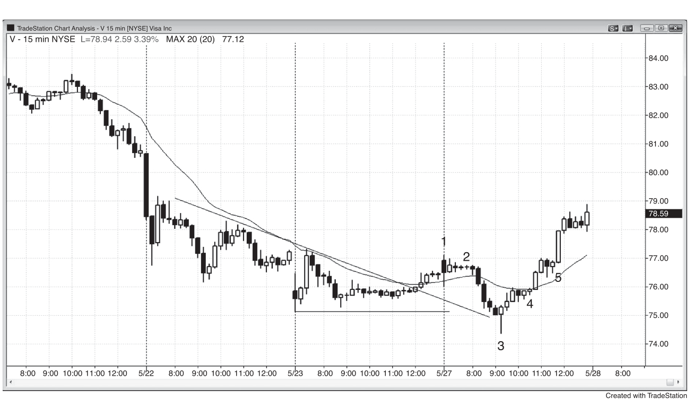
The 15 minute chart of Visa (V) shown in Figure 4.1 shows a break above the bear trend line and then a two-legged sell-off to a lower low below yesterday’s low. The point of this chart is to show what signal and entry bars are, and the particular setup patterns will be discussed later in the book. The first leg was completed by the iii ending at bar 2. Bar 3 was a strong bull reversal bar that reversed both yesterday’s low and a test of the bear trend line, setting up a possible long. A buy stop at one tick above this bar would have been filled and then bar 3 became a signal bar (instead of just a setup bar) and the bar in which the trade was entered became the entry bar. There was a decent bull trend bar two bars after entry, and it is a follow-through bar. Since this was a countertrend trade, traders needed a strong bull reversal bar like bar 3 before buying; otherwise the chance of a successful trade would have been significantly less.
Bar 4 was an entry bar off of an ii setup (discussed later) for a second leg up. Bar 5 was an entry bar off of an inside bar breakout pullback (the market barely broke above the bar 2 iii). The bodies of the two pause bars were each inside bodies, so this setup effectively was the same as an ii pattern.
Signal Bars: Reversal Bars
A reversal bar is one of the most reliable signal bars, and it is simply a bar that reverses some aspect of the direction of the prior bar or bars. If you look at smaller time frame charts, you will see that every bull reversal bar is made up of a bear trend bar and then a bull trend bar, but they don’t have to be consecutive. The market had a sell climax followed by a bull breakout (remember, all trend bars are simultaneously spikes, breakouts, and climaxes, but the context determines which property is dominant at the moment). The opposite is true of a bear reversal bar, where there is a smaller time frame bull trend bar, indicating that a buy climax took place, followed by a bear trend bar, indicating that the market broke out to the downside.
Most traders want a reversal bar to have a body in the opposite direction of the old trend, but that is not necessary and there are many other components of a reversal that should to be considered.
The best-known signal bar is the reversal bar and the minimum that a bull reversal bar should have is either a close above its open (a bull body) or a close above its midpoint. The best bull reversal bars have more than one of the following:
- An open near or below the close of the prior bar and a close above the open
- and above the prior bar’s close.
- A lower tail that is about one-third to one-half the height of the bar and a small
- or nonexistent upper tail.
- Not much overlap with the prior bar or bars.
- The bar after the signal bar is not a doji inside bar and instead is a strong entry
- bar (a bull trend bar with a relatively large body and small tails).
- A close that reverses (closes above) the closes and highs of more than one bar.
The minimum that a bear reversal bar should have is either a close below its open (a bear body) or a close below its midpoint. The best bear reversal bars have:
- An open near or above the close of the prior bar and a close well below the
- prior bar’s close.
- An upper tail that is about one-third to one-half the height of the bar and a small
- or nonexistent lower tail.
- Not much overlap with the prior bar or bars.
- The bar after the signal bar is not a doji inside bar and instead is a strong entry
- bar (a bear trend bar with a relatively large body and small tails).
- A close that reverses (closes below) the closes and lows of more than one bar.
This final property is true of any strong trend bar, such as a strong breakout bar, signal bar, or entry bar. For example, at the bottom of a bear leg, if there is a bull reversal bar and its close is above the close of the past eight bars and its high is above the high of the past five bars, this is usually stronger, depending on the context, than a reversal bar that has a close above only the close of the prior bar and is not above the high of any of the recent bars.
The market can trend up or down after any bar, and therefore every bar is a setup bar for both a long entry and a short entry. A setup bar becomes a signal bar only if a trade is entered on the next bar, which becomes the entry bar. A setup bar in and of itself is not a reason to enter a trade. It has to be viewed in relation to the bars before it and it can lead to a trade only if it is part of a continuation or reversal pattern. One of the most difficult things for new traders is that a signal bar often seems to suddenly appear out of nowhere in the final seconds before the bar closes and at times and locations that just don’t make sense until several bars later. A key to trading is to be open to the idea that the market can start a swing up or down on the next bar. Just like the best chess players think several moves in advance, the best traders are constantly thinking about reasons why the market might go up or down on the next bar and next several bars. This puts them in a position to anticipate signal bars so that they are ready to place orders if a good setup quickly develops.
Since it is always wisest to be trading with the trend, a trade is most likely to succeed if the signal bar is a strong trend bar in the direction of the trade. Remember, you are looking for times when there will likely be an imbalance between buyers and sellers above or below the prior bar. A reversal bar in the right context is often such a time, giving traders an edge. Even though you are entering after only a one-bar trend, you are expecting more trending in your direction. Waiting to enter on a stop beyond the signal bar requires the market to be going even more in your direction, increasing your odds of success. However, a trend bar that is in the opposite direction can also be a reasonable signal bar, depending on other price action on the chart. In general, signal bars that are doji bars or trend bars in the opposite direction of your trade have a greater chance of failure since the side of the market that you need to be in control has not yet asserted itself. However, in a strong bull trend, you can pretty much get long for any reason, including buying above the high of a strong bear trend bar, especially if you use a wide enough stop. The stronger the trend, the less important it is to have a strong signal bar for a with-trend trade and the more important it is to have a strong signal bar for a countertrend trade. It is always better to get into a market after the correct side (bulls or bears) has taken control of at least the signal bar. That trend bar will give traders much more confidence to enter, use looser stops, and trade more volume, all of which increase the chances that their scalper’s target will be reached.
Reversal bars can have characteristics that indicate strength. The most familiar bull reversal bar has a bull body (it closes well above its open) and a moderate tail at the bottom. This indicates that the market traded down and then rallied into the close of the bar, showing that the bulls won the bar and were aggressive right up to the final tick.
When considering a countertrend trade in a strong trend, you must wait for a trend line to be broken and then a strong reversal bar to form on the test of the extreme, or else the chances of a profitable trade are too small. Also, do not enter on a 1 minute reversal bar since the majority of them fail and become withtrend setups. The loss might be small, but if you lose four ticks on five trades, you will never get back to being profitable on the day (you will bleed to death from a thousand paper cuts).
Why is that test of the extreme important? For example, at the end of a bear market, buyers took control and the market rallied. When the market comes back down to the area of that final low, it is testing to see whether the buyers will again aggressively come in around that price or they will be overwhelmed by sellers who are again trying to push prices below that earlier low. If the sellers fail on this second attempt to drive the market down, it will likely go up, at least for a while. Whenever the market tries to do something twice and fails, it usually then tries the opposite. This is why double tops and bottoms work and why traders will not develop a deep conviction in a reversal until the old trend extreme has been tested.
If a reversal bar largely overlaps one or more of the prior bars or if the tail extends beyond the prior bars by only a couple of ticks, it might just be part of a trading range. If so, there is nothing to reverse, because the market is sideways and not trending. In this case, it should not be used as a signal bar and it even might turn into a setup in the opposite direction if enough traders are trapped. Even if the bar has the shape of a perfect bull reversal bar, since no bears were trapped there will likely be no follow-through buying, and new longs will spend several bars hoping that the market will come back to their entry price so they can get out at breakeven. This is pent-up selling pressure.
When the signal bar is large and it has a lot of overlap with the prior two or three bars, it is part of a trading range. This is a common situation in bull and bear flags, and it traps overly eager with-trend traders. For example, consider a market that has been in a trading range day until it reverses up strongly to just above the moving average. Then it goes sideways for three bars and forms a strong bull reversal bar. If the entry would be maybe a tick or so below the top of the bull flag, it is tempting to buy; but about 60 percent of the time, this is a bull trap and the market will turn down soon after entry.
How much overlap is acceptable? As a guideline, whenever the midpoint of a bull reversal bar is above the low of the prior bar in a possible bull reversal (or if the midpoint of a bear reversal bar is below the high of the prior bar in a possible bear reversal), the overlap might be excessive and be indicating that a trading range is developing instead of a tradable reversal. This is far more important when you are looking to enter countertrend (attempting to pick the reversal of a trend), instead of with trend at the end of a pullback, when you have to be much less fussy about perfect setups.
If the body is tiny so that the bar is a doji but the bar is large, it usually should not be used as a basis for a reversal trade. A large doji is basically a one-bar trading range, and it is not wise to buy at the top of a trading range in a bear trend or sell the low of a trading range in a bull trend. It is better to wait for a second signal.
If a bull reversal bar has a large tail at the top or a bear reversal bar has a large tail at the bottom, the countertrend traders lost conviction going into the close of the bar and the countertrend trade should be taken only if the body looks reasonably strong and the price action is supportive (like a second entry).
If the reversal bar is much smaller than the prior several bars, especially if it has a small body, it lacks countertrend strength and is a riskier signal bar. However, if the bar has a strong body and is in the right context, the risk of the trade is small (one tick beyond the other side of the small bar).
In a strong trend, it is common to see a reversal bar forming and then seconds before the bar closes the reversal fails. For example, in a bear trend, you could see a strong bull reversal bar with a big down tail, a last price (the bar hasn’t closed yet) well above its open and above the close of the prior bar, and the low of the bar extending below or overshooting a bear trend channel line, but then in the final few seconds before the bar closes, the price collapses and the bar closes on its low. Instead of a bull reversal bar off the trend channel line overshoot, the market formed a strong bear trend bar and all of the traders who entered early in anticipation of a strong bull reversal are now trapped and will help drive the market down further as they are forced to sell at a loss.
A big bull reversal bar with a small body also has to be considered in the context of the prior price action. The large lower tail indicates that the selling was rejected and the buyers controlled the bar. However, if the bar overlaps the prior bar or bars excessively, then it might just represent a trading range on a smaller time frame, and the close at the top of the bar might simply be a close near the top of the range, destined to be followed by more selling as the 1 minute bulls take profits. In this situation, you need additional price action before entering a countertrend trade. You don’t want to be buying at the top of a flag in a bear trend or selling at the bottom of a bull flag.
Computer programs allow traders to use charts based on a wide range of characteristics of price action. Traders use every time frame imaginable as well as charts where each bar is based on any number of ticks (each individual trade of any size is one tick) or contracts traded as well as many other things. Because of this, what appears to be a perfect reversal bar on a 5 minute candle chart might not look anything like a reversal bar on many other charts. And even more important is that every reversal on any chart is a perfect reversal bar on some other chart. If you see a reversal setting up but there is no reversal bar, don’t waste your time looking around at dozens of charts for one where there is a perfect reversal. Your goal is to understand what the market is doing, not to find some perfect pattern. If you see that the market is trying to reverse, even if it is doing so over a dozen bars, you need to find some way to enter the market, and that has to be your focus. If you waste time searching other charts for a perfect reversal bar, you are allowing yourself to be distracted from your goal and you are likely not mentally prepared at the moment to be trading.
Most reversal bars on the daily chart come from trending trading range days (discussed in Chapter 22) on the intraday charts, but a few come from climactic intraday reversals. Whenever traders see a trending trading range day, they should be aware that it might have a strong reversal later in the day.
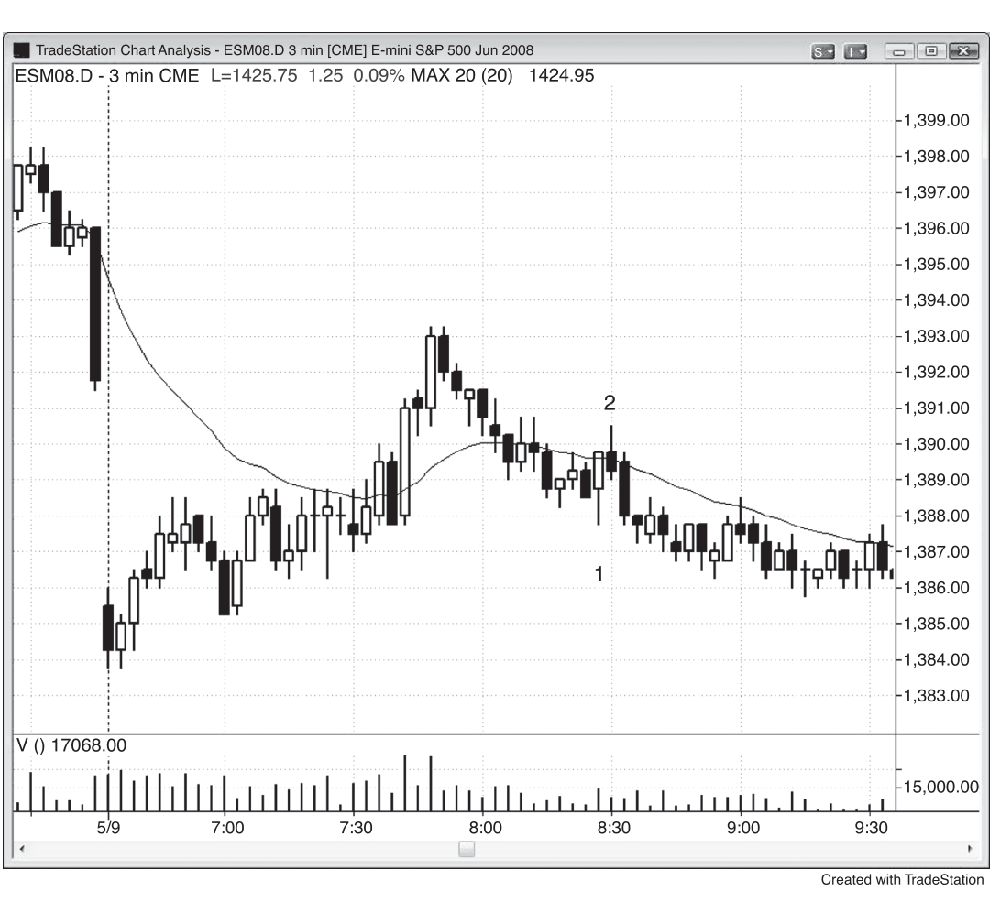
As shown in Figure 5.1, reversal bar 1 largely overlapped the four prior bars, indicating a two-sided market so there was nothing to reverse. This was not a long setup bar. Reversal bar 2 was an excellent bear signal bar because it reversed the breakout of reversal bar 1 (there were trapped longs here off that bull reversal bar breakout) and it also reversed a breakout above the bear trend line down from the high of the day. The trapped longs were forced to sell to exit, and this added to the selling pressure of the shorts. Astute traders knew that there were more sellers than buyers below the low of bar 2, and shorted there, expecting at least enough follow-through selling to be able to make a scalper’s profit. When the market is in a trading range in a downswing, it is forming a bear flag. Smart traders will look to sell near the high, and they would buy near the low if the setup was strong. As trite as the saying is, “Buy low, sell high” remains one of the best guiding principles for traders. When I say buy low, I mean that if you are short, you can buy back your short for a profit, and if there is a strong buy signal, you can buy to initiate a long position. Likewise, when the market is toward the top of the range, you sell high. This selling can be to take your profit if you are long, or if there is a good short setup, you can sell to initiate a short position.
Deeper Discussion of This Chart
The market broke below yesterday’s low in Figure 5.1, but the breakout failed and reversed up into a trend from the open bull day. The bull trend ended with a strong breakout that failed at 7:48 a.m. PST with a moving average gap bar short setup. The move down to bar 1 was a tight bear channel, and the first breakout above a tight channel usually reverses within a bar or two. At that point, it might form a lower low or higher low pullback from the breakout and then the rally will resume, or the breakout will simply fail and the bear trend will resume, as it did here.
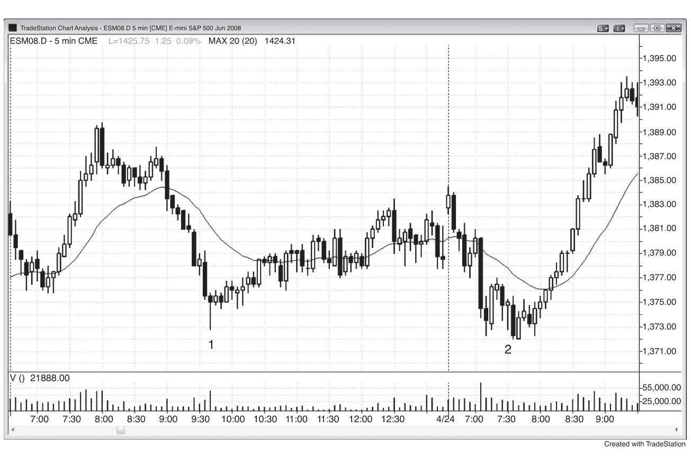
Reversal bars with big tails and small bodies must be evaluated in the context of the prior price action. As shown in Figure 5.2, reversal bar 1 was a breakout below a prior major swing low in a very oversold market (it reversed up from a breakout below the steep trend channel line of the prior eight bars). There had also been very strong bullish activity earlier in the day, so the bulls might return. Profit takers would want to cover their shorts and wait for the excess to be worked off with time and price before they would be eager to sell again.
The next day, reversal bar 2 overlapped about 50 percent of the prior bar and several of the bars before that, and it did not spike below a prior low. It likely just represents a trading range on the 1 minute chart, and no trades should be taken until more price action unfolds.
Although a classic reversal bar is one of the most reliable signal bars, most reversals occur in their absence. There are many other bar patterns that yield reliable signals. In almost all cases, the signal bar is stronger if it is a trend bar in the direction of your trade. For example, if you are looking to buy a possible reversal at the bottom of a bear trend, the odds of a successful trade are significantly increased if the signal bar has a close well above its open and near its high.
Deeper Discussion of This Chart
Today (the most recent day on the chart), shown in Figure 5.2, broke out above yesterday’s trading range, but the breakout failed and the day became a trend from the open bear. The second breakout below yesterday’s low also failed and became the low of the day.
When the market goes sharply up and then down, it usually enters a trading range, and the bulls and bears then fight for control of the market. The move to the new low of the day accelerated at the end. There were a couple of large bear trend bars, which were consecutive sell climaxes. This usually is followed by at least two legs and 10 bars up. Because the sell-offto a new low had no follow-through, it was simply due to a sell vacuum and not strong bears. The strong bulls expected the market to test below the low of the day, so they simply stopped buying until the target was reached. Their lack of buying during the several bars leading to bar 1 caused the market to collapse. It did not make sense for them to buy just above the low when they believed that the market was going to fall below the low. Why buy when you can buy lower if you just wait for a few minutes? However, once it reached their buy zone, they bought relentlessly, and the market rallied in a bull channel into the close.
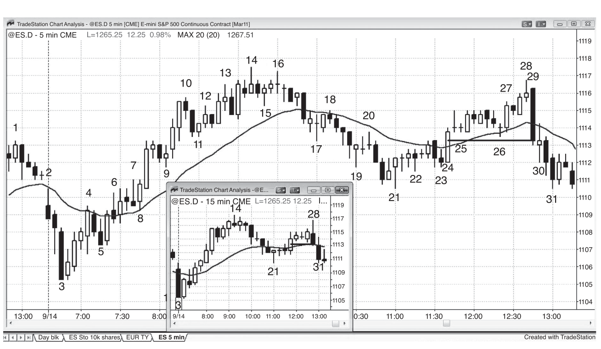
A bear reversal bar does not have to have a high that is above the high of the prior bar, but it does need to reverse something about the price action of the prior bar or bars. In Figure 5.3, bar 29 was a strong bear trend bar in a bull leg, so its body reversed the direction of the market. Its close reversed the closes of the prior 13 bars and the lows of the prior 12 bars, which is unusual but a sign of strength. All of the traders who bought on the close of bar 24 and during any of the next 12 bars now quickly were holding losing positions and if they did not exit as the bar was forming, they would likely have exited on its close or once the next bar traded below its low. The strongest bulls hold through pullbacks and will hold until they believe that the trend has flipped. A single strong reversal that reverses many closes and lows, like bar 29, can flip the always-in direction. It can also lead those strong bulls to believe that the market will likely trade low enough so that they could exit their longs and then look to buy again much lower, probably as much as a measured move down based on the height of the bar. These disappointed bulls will look for any opportunity to exit their longs. They expect to get out with a loss at this point, but would like to get out with as small a loss as possible and will place limit orders above the close of bar 29 and above the high of prior bars. Some traders will see the prior bar as a high 1 buy setup, but this is a situation where traders believe that the always-in direction has reversed to down. They therefore think that high 1 and high 2 entries will fail to yield even a scalper’s profit. Both the bulls and bears will place limit orders to sell above these high 1 and high 2 signal bars (entering on limit orders on high or low 1 and 2 signals that you expect them to fail is discussed in book 2). The bulls will be relieved to get out with a smaller loss, and the bears see this as a great opportunity to short above the high of the prior bar in a new bear trend (it might be a bear channel), but if the market falls below the high 2 buy signal bar’s low, even the most diehard bulls will give up, and the market will often break out into a bear spike and then at least a measured move down.
If there is no pullback that would allow the trapped bulls to exit with a smaller loss within a few bars, they will exit at the market and on the closes of bars that have bear closes, and on stops below the low of the prior bar. Bears understand what is happening and will look for those same opportunities to sell, but their selling will be to initiate shorts, not to exit longs. The bulls who held through the close of bar 29 are the swing bulls, because they were willing to hold through pullbacks. Swing traders are generally the strongest participants, because many are institutions with deep pockets and have the ability to tolerate pullbacks. Once these strongest bulls decide that the market will fall further, there is no one left to buy, and the market usually has to fall for about 10 bars and two legs to some support level before they will consider buying again. They will not buy until a strong buy setup appears, and if one does not come, they will continue to wait. Here, there were not enough bars left in the day for them to look to buy again, and therefore there were not enough buyers left to lift the market before the close of the day.
Bar 29 was a signal bar, and many traders shorted below its low. It was also an entry bar, and many traders shorted during it as it fell below the low of the prior bar and as it was expanding down, because they believed that the breakout above the trading range of the past 12 bars was failing. It was also a breakout bar because it broke out of that trading range to the downside. It formed a reversal with bar 27 or with the entire bull spike from bar 26 to bar 29. From the inset, you can see that it was part of a large reversal bar on the 15 minute chart.
Bar 21 reversed the closes of the prior three bars but since it was in a steep bear channel, it was safer to wait to buy a breakout pullback after the market broke above the channel. Also, it overlapped the prior two bars and might be forming a trading range instead of a reversal. Bar 23 was a reasonable breakout pullback signal bar, since the market just made two attempts to sell off and both failed (bar 11 and the bar before bar 23). Because the day had such a strong rally in the first couple of hours, the market was likely to try to rally again after a pullback. This increased the chances of success for traders who bought above bar 21, especially since it tested the initial breakout above the opening range (the high of bar 1) and reversed up.
Bar 21 was signal bar but the bar that followed was a doji bar, which shows a lack of urgency by the bulls. Bar 25 was also a signal bar and the next bar was a doji inside bar. Whenever the bar after the signal bar is a small doji bar, the market lacks urgency for a reversal. If the bar is an inside bar, like after bar 25, it is usually better to not take the trade unless the setup is otherwise especially strong. If the doji is the entry bar like after bar 21, you have a few choices. You can try to get out at breakeven or with a one-tick loss, or, if the setup otherwise looks good, you can keep your stop below your signal bar. Since this looked like a good setup, it made sense to hold long with a stop below the signal bar.
The bar after bar 19 was a doji, but bar 19 was a weak signal. When the entry bar after a weak signal is also weak, it is better to try to get out around breakeven.
In general, raising the stop to just below a doji entry bar is not a good choice because the odds are 50–50 it will get hit. If that is what you are inclined to do, it is probably better to try to get out around breakeven. Whenever there is a doji bar within a few bars of a reversal, the market has about a 50 percent chance of trading below it. Also, when you are trading reversals, you are trading countertrend and the odds of a pullback are high. If you take the trade and it looks strong, you have to be willing to allow pullbacks or else you should not take the trade. If the setup instead is weak, you want a very strong entry bar and if you do not get one, consider trying to get out with a scratch (breakeven or maybe a one- or two-tick loss).
There was a strong bull trend bar two bars after bar 13, and since it is a reversal bar, it can be viewed as a signal bar. It was followed by an inside bar, which can be thought of as a breakout pullback. However, since that strong bull signal bar has so much overlap with the two prior bars, it probably had a 60 percent chance of being a bull trap, which it turned out to be. Bull flags just above the moving average where there are three or more large bars that mostly overlap are usually traps. The same is true for a bear flag just below the moving average where there are three or more large bear bars that largely overlap. Even if there is a strong bear trend bar for a signal bar, the odds are that a short below will result in a loss.
Between bars 10 and 15 there were several bars with strong bear bodies and this was a sign of selling pressure. The pressure is cumulative, and it eventually led to a sell-off.
Signal Bars: Other Types
Remember, a signal bar is a setup bar that led to an entry. However, not all trades are worth taking, and just because a stop was triggered and turned the prior bar into a signal bar, that does not make the trade worth taking (for example, many signals in a tight trading range, which is described later, are best avoided). All signal bars are meaningless in the absence of price action that indicates that the breakout of the bar will likely go far enough for at least a profitable scalp.
STRONG TREND BAR
A very important signal bar is a strong trend bar, especially during the spike phase of a trend. For example, if the market just broke above a bottom at an area of major support on a major news item that will affect the market for days, traders will look for any reason to get long. One common approach is to wait for a bar to close and if the bar is a strong bull trend bar, traders will buy at the market as soon as the bar closes. Many will try to quickly place a limit order at the price of the close, and if their order is not filled within a few seconds, they will change it to a market order. Other traders will enter on a stop at one tick above the high of the bar. This urgency results in a series of bull trend bars and an increasingly larger bull spike.
REVERSAL PATTERNS
Traders are always looking for a change of direction, and they rely on reversal patterns as the earliest sign that a change might be taking place. The risk is to the opposite end of the bar and the reward is often several times greater. For example, if a trader buys on a stop at one tick above a bull reversal bar that is eight ticks tall, he might put a protective stop at one tick below the bar and the total risk would then be 10 ticks. However, the trader might be planning on taking profits at 20 or more ticks above the entry.
When there is a strong trend that might be reversing into a trading range or into an opposite trend, traders will want a strong reversal setup, which is often simply called a reversal. This is because trends are resistant to change and if traders are to bet on a move in the opposite direction, they will want a strong sign that the market is about to reverse. However, if there is a strong trend and then a pullback, traders are so confident that the trend will resume that they will not require a strong reversal setup at the end of the pullback. In fact, the majority of signal bars for trend pullback trades look weak. If a pullback setup looks perfect and easy, it usually means that the trend is not strong. So many traders would take it that it often becomes the final flag in the trend, leading to a bigger correction. Trends require traders to keep missing entries so there is a constant tension, a constant desire to get in, and one of the ways that trends accomplish this is through weak signal bars. For example, if there is a two-legged pullback to the moving average in a strong bull trend, traders might be willing to buy above the high of the prior bar even if it is a bear trend bar and not a strong bull reversal bar. They are afraid that the pullback will reverse back into the direction of the bull trend and the rally might quickly accelerate. They wanted a pullback so they could buy at a lower price, and now that they have one, they want to be sure that they buy before the breakout from the bull flag goes very far. All traders have this sense of urgency, which is why the rally to a new high is often very fast. Traders who did not take the trade because the signal looked weak will remain eager to buy, and many will keep buying in small pieces all the way up, just to be certain that they have at least a small position. Trapped shorts keep waiting for a deeper correction and a clearer buy signal to let them out with a smaller loss, but one never comes and they have to keep buying back their shorts in pieces as the trend continues higher. Most trends eventually have at least a minor climax before a deeper correction comes, and the climax is usually due to the weak traders finally entering late and the last traders on the wrong side finally exiting. When no traders are left on the wrong side, the sense of urgency disappears and the market usually enters a trading range, at least for a while.
Besides a classic reversal bar, other common reversal setups (some are two- or three-bar patterns) include the following.
Two-Bar Reversal
Two-bar reversals are one of the most common reversal setups and therefore are very important. It is useful to think of every reversal as a type of two-bar reversal because the phrase reminds traders that the market made a strong move in one direction and then a strong move in the opposite direction. The strongest moves usually begin with either a reversal bar or a two-bar reversal for the signal. This is why it is so important to be ready to place a trade when the setup occurs at a time when a strong move might follow. Two-bar reversals have many variations and are a part of every reversal, but they may not be apparent on the chart you are using. However, as long as you understand that the market is reversing, it is not necessary to look at many types of charts to find a perfect two-bar reversal or a perfect reversal bar, although they both are present in every reversal.
The best-known version is a pair of consecutive 5 minute trend bars of approximately the same size but opposite directions. A long setup is a bear trend bar immediately followed by a bull trend bar, and a bear setup is a bull trend bar immediately followed by a bear trend bar. These two bars create a 10 minute reversal bar, but the reversal bar is evident on the 10 minute chart only 50 percent of the time because only half of the 5 minute two-bar reversals will end at the same time as the 10 minute bar. The other half will result in some other usually less clear reversal on the 10 minute chart.
It is important to realize that all climactic reversals, all reversal bars, and all two-bar reversals are exactly the same and all are present at all reversals, and you will be able to see them if you look at enough different types of charts. If you think about it, even a classic reversal bar is actually a two-bar reversal on some smaller time frame or on some other type of chart, like a tick or volume chart that uses the right number of ticks or shares per bar. Also, the two bars in opposite directions do not have to be consecutive, and most of the time they are not. However, if you look at all possible higher time frame charts, you will be able to find one where the setup actually is a perfect two-bar reversal. You can almost always find one where it becomes a single reversal bar. Always be open to all possibilities because you will then find many more setups that you understand and have confidence to trade. The key is to recognize that a reversal is taking place, and you need to be aware of the many ways that it can appear. A bear reversal always has a bull trend bar, which is acting as a buy climax, followed before long by a bear trend bar, which is acting as a breakout to the downside. A bull reversal is the opposite, with a bear trend bar that is acting as a sell climax and then a bull trend bar that is acting as a bull breakout.
A reversal bar can be the second bar of a two-bar reversal. When it overlaps more than about 75 percent of the prior bar, it is better to regard the two bars as a two-bar reversal setup rather than as a reversal bar. If you do so, the odds of a successful reversal trade are higher. For example, if the market is rallying and forms a bear reversal bar with a low that is one tick above the low of the prior bar, this is often a bear trap. The market frequently falls one tick below the bear reversal bar but not below the bull trend bar that preceded it, and then rallies to a new high within a couple of bars. This happens much less often if that bear entry bar falls below the low of both bars and not just below the low of the bear reversal bar. When the reversal bar overlaps the prior bar by too much, they form a two-bar trading range and the breakout entry is beyond the entire trading range. Since the trading range is only two bars long, the entry is beyond both bars, not just the second bar.
If that bear reversal bar falls below the prior bull trend bar, treat it like an outside bar, even if its high is below the high of the bull trend bar. In general, it is then better to wait for a pullback to a lower high before going short. Otherwise you are shorting so far below the top of the bull leg that there is too much risk that you might be shorting at some support level, like the bottom of a developing trading range, and the market might rally.
There is a special type of two-bar reversal that signals a trade in the opposite direction. If there is a two-bar reversal that is sitting on or touching the bottom of the moving average and the two bars almost entirely overlap one or more prior bars, the breakout usually fails. If the market is in a strong trend, however, the signal will usually work, since almost any with-trend entry works in a strong trend. When there is not a strong trend, the signal usually fails even if there is a perfect two-bar reversal. Any three or more large, overlapping bars will do. For example, if there is a two-bar bull reversal just above the moving average and the bars are relatively large and mostly overlap a third or fourth bar, do not buy above the high of the signal bar. The market has formed a small trading range, and traders who are confident in their read of the overall price action can often short the market at or above the bull signal bar for a scalp down.
Three-Bar Reversals
A three-bar reversal is just a variation of a two-bar reversal where there are three consecutive bars, with the first and third being the bars of a two-bar reversal and the middle bar being an unremarkable bar, like a small bar or a doji. This creates a 15 minute reversal bar when the third 5 minute bar closes at the same time as the 15 minute bar. When that happens, it is likely more reliable because it would then bring in traders who are trading off of 15 minute charts. In the two out of three times that it does not, the 5 minute signal usually results in some other 15 minute reversal pattern. When looking for any 5 minute reversal entry, it is helpful to think about whether there are three consecutive bars that might also be forming a 15 minute reversal bar. If so, this should give you more confidence in your trade since a higher time frame signal is more likely to be followed by a larger move, and you might be more comfortable swinging more of your position and using a wider profit target. In general, traders should view them as simple two-bar reversals and not worry about whether they are also creating a 15 minute reversal bar.
Small Bars
A bar that has a small range compared to the prior bars can be a reversal signal bar. Here are common examples:
- An inside bar, which is a bar with a high below the high of the prior bar and a
- low at or above the low of the prior bar, or a low above the low of the prior bar and a high at or below the high of the prior bar. It is more reliable if it is small and has a body in the opposite direction of the current trend and less reliable if it is a large doji bar. In fact, a large doji is rarely a good signal bar even if it is an inside bar, and since it is a one-bar trading range, it is usually followed by more two-sided trading.
- An ii (or iii) pattern, which is two consecutive inside bars with the second being
- inside of the first (an iii is made of three consecutive inside bars).
- A small bar near the high or low of a big bar (trend bar or outside bar) or trading
- range (especially if its body is in the direction of your trade, indicating that your side has taken control).
- An ioi pattern, which is an inside bar followed by an outside bar and then another inside bar (inside-outside-inside). If it occurs in an area where a breakout seems likely, traders can enter on the breakout of that second inside bar. These are often breakout mode setups, meaning that the move can be in either direction, and it is often prudent to place a sell stop below and a buy stop above that second inside bar and enter in the direction of the breakout. The unfilled order then becomes the protective stop.
Note that doji bars are rarely good signal bars because they are one-bar trading ranges and when the market is in a trading range, you should not be looking to buy above the high or go short below the low. They can be decent signal bars for reversal trades if they occur near the high or low of a trading range day, or if they are a with-trend setup in a strong trend. In a trading range, it can be fine to sell below a doji if the doji is at the high of the range, especially if it is a second entry. The bigger trading range trumps the tiny trading range represented by the doji bar, so selling below the doji bar is also selling at the top of a large trading range, which is usually a good trade.
Outside Bar
An outside bar is a bar with either its high or its low beyond that of the prior bar and the other extreme of the outside bar at or beyond the prior bar’s extreme. See Chapter 7.
Micro Double Bottom
A micro double bottom is consecutive or nearly consecutive bars with identical or nearly identical lows. When it forms in a bear spike and it is a bear trend bar closing on or near its low and then a bull trend bar opening on or near its low, it is a onebar bear flag. If the lows are identical, consider selling at one tick below the low. At all other times, it is more likely a reversal pattern, since most small bull reversals come from some type of micro double bottom (discussed in book 3).
Micro Double Top
A micro double top is consecutive or nearly consecutive bars with identical or nearly identical highs. When it forms in a bull spike and it is a bull trend bar closing on or near its high and then a bear trend bar opening on or near its high, it is a one-bar bull flag. If the highs are identical, consider buying at one tick above the high. At all other times, it is more likely a reversal pattern, since most small bear reversals come from some type of micro double top (discussed in book 3).
Reversal Bar Failure
A reversal bar failure is the bar after a reversal bar that breaks out of the wrong side of the reversal (e.g., if there is a bear reversal bar in a bull trend and the next bar trades above its high instead of below its low).
Shaved Bar
A shaved bar has no tail at one or both of its extremes. It is a setup only when it forms in a strong trend (e.g., in a strong bull trend, if there is a bull trend bar with no tail on its top or bottom, then it is a buy setup).
Exhaustion Bar
An unusually large trend bar in the direction of the trend can often represent an emotional exhaustion of a trend. All trend bars are spikes, breakouts, gaps, and climaxes or exhaustion bars, and sometimes the exhaustive component can be the dominant feature.
Trend Bars
Besides being signal bars for with-trend entries in strong trends, trend bars can also be signal bars for reversal trades, like a pullback reversing back in the direction of the trend, and for reversal trades in trading ranges. For example, if there is a strong bull trend and at least 20 consecutive bars have been above the moving average, and the market drifts sideways to the rising moving average, look to buy the close of the first small bear trend bar with a close that is only a tick or two below the moving average. Also, look to buy above its high. You are expecting the sideways to down correction to end and reverse back into the direction of the trend.
If there is a clearly defined trading range with multiple reversals and there is a two-legged, two bull trend bar spike to a slightly new high in the middle of the day, this is often a good signal to go short at the market, especially if you can scale in higher and especially if it is a part of another pattern, like if it is at the top of a small wedge or if it is a test of a bear trend line. Also, if there is a two-legged sell-off in the trading range that forms a bear trend bar that closes below an earlier swing low in the trading range in the bottom half of the range, this can also be a signal to buy at the market, especially if you can add on lower or if it is part of another pattern, like the bottom of a wedge bull flag.
ALL BARS IN A CHANNEL
When there is a strong bull channel, bulls will place limit orders to buy at or below the low of the prior bar, and bears will place limit orders to short at or above the high of every bar and above every swing high. Bulls will also place buy stop orders above the highs of pullback bars, and the bears will place sell stop orders below the lows of bars at the top of the channel. The opposite is true in a bear channel.
There are many types of small bars and many different situations in which they occur, and all represent a lack of enthusiasm from both the bulls and the bears. Each has to be evaluated in context. A small bar is a much better setup if it has a body in the direction of your trade (a small reversal bar), indicating that your side owns the bar. If the small bar has no body, it is usually better to wait for a second entry since the probability of a successful trade is much less and the chance of a whipsaw is too great.
An inside bar does not have to be totally inside (high below the prior bar’s high, low above the prior bar’s low). One or both of its extremes can be identical to that of the prior bar. In general, it forms a more reliable signal when it is a small bar and when its close is in the direction of the trade you want to take (it is always better to have bull signal bars when you are looking to buy and bear signal bars when you are looking to sell).
When an inside bar occurs after a big trend bar that breaks out of a trading range, it could be simply a pause by the trend traders, but it could also be a loss of conviction that will lead to a reversal (failed breakout). A reversal is more likely when the small bar is an inside bar and it is a trend bar in the opposite direction of the large breakout bar. A with-trend inside bar increases the chances that the breakout move will continue, especially if the market had been trending in that direction earlier in the day (for example, if this might be the start of the second leg that you were expecting).
Small inside bars after breakout trend bars are somewhat emotional for traders because they will consider entering in either direction on a stop and will have to process a lot of information quickly. For example, if there is a bull breakout during a down day, the trader will often place an order to buy at one tick above the high of the inside bar and a second order to sell at one tick below its low. Once one order is filled, the other order becomes the protective stop. If the order was filled on a breakout failure (i.e., on the sell order), the trader should consider doubling the size of the buy stop order, in case the failed breakout becomes a breakout pullback (opposite failures means that both the bulls and the bears were trapped, and this usually sets up a reliable trade). However, if the trader was first filled on the buy (with trend) order, he usually should not reverse on the protective stop, but might if the day had been a bear trend day. Once there has been a second or third bar without a failure, a failure that then occurs has a higher chance of simply setting up a breakout pullback entry in the direction of the new trend rather than a tradable failure. In general, good traders make quick, subjective decisions based on many subtle factors and if the process feels too confusing or emotional, it is better to not place an order, especially complicated orders like a pair of breakout orders or an order to reverse. Traders should not invest too much emotion in a confusing trade because they will likely be less ready to take a clear trade that may soon follow.
An inside bar after a swing move might mark the end of the swing, especially if its close is against the trend and other factors are in play, like a trend line or trend channel line overshoot, an ABC two-legged correction (a high or low 2), or a new swing high in a trading range. Also, any small bar, whether or not it is an inside bar, near an extreme of any large bar (trend bar, doji, or outside bar) can set up a reversal, especially if the small bar is a small reversal bar. In general, traders should be looking to buy low and sell high. In a trading range (a trading range day or a trading range in a trend day), the only small bar entries should be fades at the extremes. For example, if a small bar is a swing high, or follows a bear trend line test or a bull trend channel line overshoot and reversal, only look for a short entry. If it is a swing low, only look for a buy.
In a trend (even one during a trading range day), a small bar can set up an entry in either direction. For example, if there is a strong bull move and no prior break of a significant bull trend line, an inside bar near the high of a large bull trend bar or a small bar that extends above the high of the trend bar should only be viewed as a buy setup. If it is an inside bar, especially if it is a bull trend bar, it is a great long setup. If it is simply a small bar that extends above the high of the bull trend bar, it might be a safe long setup if the trend is strong enough. In general, it would be better to wait for a pullback, unless the small bar is a bear reversal bar, in which case it could trap bears and it might make sense to buy on a stop at one tick above its high.
An ii pattern is an inside bar that follows a larger inside bar. It is two in a row with the second being inside the first and of the same size or smaller (an iii is even stronger, with three in a row). After a protracted move, especially if there has been a trend line break, a with-trend breakout from an ii pattern is often just a scalp and has a good chance of reversing before or after the profit target is reached (a final flag, as described in book 3). However, a countertrend breakout (or a reversal from a final flag) often leads to a large reversal. The pattern often develops in a final flag because it finally indicates balance between the bulls and the bears; the strength of the weaker side has caught up to that of the stronger side, at least temporarily. As such, if the with-trend side takes control, the odds are high that the countertrend side will try to take it back after the with-trend breakout. The stop on an ii pattern is beyond the opposite side of both bars (not just the second bar, which technically is the signal bar), but sometimes you can use a smaller stop (beyond the second of the two bars instead of beyond both bars) if the bars are relatively large. After the entry bar closes, tighten the stop and consider reversing at one tick beyond the entry bar. Keep looking to reverse on any failure in the next several bars since failures are common soon after ii breakouts, especially if the pattern forms in the middle of the day’s range.
A 5 minute ii pattern is often a 1 minute double bottom pullback in a bull trend or a double top pullback in a bear trend (described in book 2), which are reversal patterns and might explain why a small ii can lead to a large countertrend move.
When there is a strong bull trend, there will sometimes be two consecutive bars with identical highs, and usually with small tails at the tops of the two bars. This is a two-bar double top buy setup and is a double top on the 1 minute chart. Place a stop to go long at one tick above the high of the bars because you will be buying a failed double top and there will be protective stops there from traders who shorted it, adding fuel to the move. Likewise, in a strong bear trend, look to short on a stop at one tick below a two-bar double bottom sell setup.
Two-bar reversal setups go by several names, and each is an overlapping pair of trend bars with opposite directions and bodies of about the same size. In a twobar reversal top setup, the first bar is a bull trend bar and the second is a bear trend bar, and this combination is a sell setup if the market is not in a trading range. A two-bar reversal bottom is a bear trend bar and then a bull trend bar and forms a buy setup. They are each basically a two-bar reversal pattern and they correspond to a 10 minute reversal bar (just imagine how the two 5 minute bars would look when combined into a single 10 minute bar).
A two-bar reversal can be a continuation pattern (a one-bar flag) or a reversal pattern, depending on the context. For example, if the market is in a strong bear spike and then has a bear bar and then a small bull trend bar with a low that is close to the low of the bar before it, this is a two-bar reversal. However, since the market is in a steep trend, you should never look to buy above it. Instead, you should view the bull bar as a one-bar bear flag and consider shorting below it. In contrast, if the identical two-bar pattern formed in a bull trend at the end of a two-legged pullback to the moving average, this is a two-bar reversal and a good setup for a buy setup. The pullback is ending and reversing back into the bull trend.
When a trend bar in a strong trend has a shaved body (no tail at one or both ends), it usually indicates that the market is one-sided and strong. However, a shaved top on a 5 minute bull trend bar in a runaway bull trend is stronger than a shaved bottom, because the extreme strength is right into the close of the bar and it is more likely to continue the strength that occurred five minutes earlier. Therefore, a shaved top is a good setup for a long. If the bar has a one-tick tail at its high or a shaved bottom, it is still strong, but in general that alone would not be reason enough to buy above its high. Also, the bar has to be analyzed in context. If the bar is in a trading range, it would be foolish to buy above its high, because trading ranges tend to test the extremes repeatedly and you should not be buying near the high when the odds of the bar being a test are greater than the odds of the bar being a successful breakout. Similarly, a bear trend bar with a shaved bottom in a runaway bear trend is a setup to short at one tick below its low.
When the market is quiet and the volume is low, shaved tops and bottoms are sometimes common and are not a sign of strength. When you see many shaved tops and bottoms in an hour or so and they are in a trading range, be very selective about trading. Each of those bars is a trap, fooling traders into believing that there is strength when there is none.
Not all small bars are good fade setups. There is one particular situation where they should not be used as signal bars, and that is when the bar is a small doji (small relative to the recent bars), especially if it has no body, it is near the moving average, and it occurs approximately between 10:00 a.m. and 11:00 a.m. PST. These have a very high failure rate and always require more price action before placing a trade.
Although most large trend bars that are with trend are strong, if a bar is unusually large, it often represents a climactic exhaustion (a buy climax). For example, in a bull trend, it often means that the last buyers bought and they bought in a panic because they just had to get in at any price, or if they were short, they just had to buy back their losing shorts at any price. If there are no more buyers, the market will go down. Any standard reversal setup can serve as a signal bar, but a second entry with a strong reversal bar is always the safest setup when trading countertrend.
Big trend bars on breakouts often fail on the next bar, trapping traders into the wrong side of the market. This is especially common on quiet trading range days, when the market is always surging to the top and bottom of the range and fooling na¨ıve traders into expecting a successful breakout.
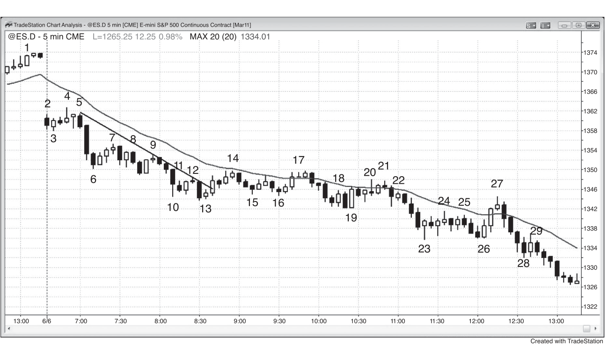
A small bar can be a with-trend or countertrend setup. In a trend, a small bar on a pullback is only a with-trend setup. As shown in Figure 6.1, bars 7, 9, 12, 14, 17, and 21 were small bars in pullbacks and the only trade they offered was a short on a stop at one tick below their lows. Even though they were mostly doji bars, they were with trend and therefore reasonable shorts. Most signal bars in a strong trend look weak, and that is one of the reasons why the trend just keeps working lower. Bears are eager to short and bulls want to exit with a smaller loss, and both keep waiting for a strong sell setup. This would make them confident that the market is not going to rally and that they need to get out immediately. The perfect setup never comes, and the bears are trapped out and the bulls are trapped in. This creates a constant sense of tension and urgency that keeps driving the market down. Both keep selling in small pieces all day long, just in case their perfect setup never comes . . . and it usually doesn’t. The setups never look strong, so it is easy for traders to assume that the trend is weak and that there will soon be a good rally that will allow them to sell at a better price. They see the market staying below the moving average, but it never falls fast enough to make them panic, so they keep hoping for a bigger rally to sell. The weak signal bars are an important ingredient in strong trends.
A small bar can also set up a countertrend trade against a trend if it occurs at a swing low and there are other reasons for trading countertrend, like a prior trend line break. Bar 16 was a small bear bar that set up a long after a break above the bear trend line and the high 4 bottom of the bear channel from bars 7 to 13. There was a two-legged pullback from the bar 14 test of the moving average, and the market was likely to have a second leg up.
The only time that a trader should sell a small bar at a low is in a bear trend, and preferably during a strong bear spike. Bar 29 was not particularly small, but it was an inside bar, which functions like a small bar, and it was a bear trend bar, making it a safe short at the low of the day.
Bar 13 was the middle bar of a three-bar reversal up, and bar 17 was the middle of a four-bar reversal down. All multiple bar reversals are just variations of two-bar reversals. There were several other reversals on the chart, as there are on all charts.
Deeper Discussion of This Chart
The day began with a large gap down in Figure 6.1, so traders had to be looking for a possible trend from the open up or down and they needed to watch closely for a setup.
Bar 3 was a bull reversal bar and a good buy setup for a failed breakout and reversal up, but the entry bar had a bear body, which is never good if a trader is looking for a bull trend. This failed breakout failed and became a breakout pullback short setup, and it led to a resumption of the bear breakout. Longs exited on the reversal down below bar 4 and many reversed to short. The next bar was also a doji bar and now the market was in a tight trading range on a large gap down day. This was a great breakout mode pattern for a big trend up or down. Bar 5 went one tick above that doji and likely trapped premature bulls who did not wait for a breakout above the bar 4 top of the opening range. The best trade of the day was the short below bar 5 or on the next bar as it broke below the low of the tight trading range, or on its close when it was clear that the market was always in short. The spike down to bar 6 had three large bear trend bars and was likely to be followed by a measured move down, probably in a bear channel. The trend went much further than that.
Bar 13 was a small bull inside bar at a new swing low and a reversal up from a low 2 final flag short, and the second leg down of a second leg down, making it a high
4 long setup. It was also the third or fourth push down (depending on how you want to count the pushes) in a bear channel in a spike and channel bear. The spike was made of three bear trend bars that started at bar 5. Channels often end on the third push and are usually followed by a two-legged move sideways to up, as happened here. The correction often reaches the top of the channel, but here the bear trend was so strong that the correction could only go sideways and not up. That usually means that lower prices will follow.
Bar 16 was a high 2 buy setup in a developing trading range after a relatively strong move up to bar 14 that was strong enough to break the bear trend line. This strength made a second leg up likely.
Bar 14 was close to being a 20 gap bar short setup since the prior 20 bars all had highs below the moving average. Close is close enough, and a test of the bear low was likely. The rally to bar 14 was also the first breakout of a tight channel and was therefore likely to be followed by at least a test down.
Bar 17 was an actual 20 gap bar short setup. The market traded below it and then above it and then it sold offto a new low of the day. Bar 17 was a doji moving average gap bar short setup but with the move up from bar 16 being a strong bull spike, most traders would have waited for a second signal before shorting. The entry was below the outside up bar that followed bar 17. The entry bar was a strong bear trend bar and it became the first bar in a strong bear spike.
There are many micro double top and bottom reversal patterns on all charts, and these are discussed in book 3 in the chapter on reversals. Bars 20 and 21 formed an example of a micro double top reversal pattern.
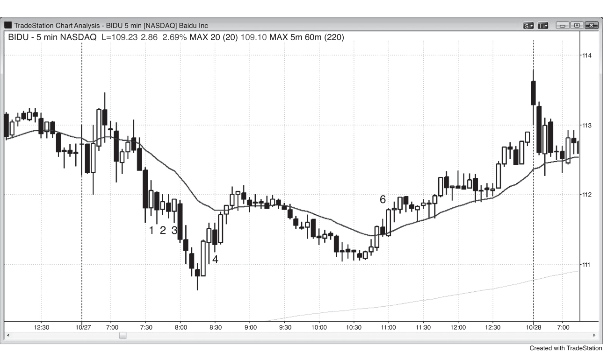
When a trend is strong, the market often trades below instead of above a bull reversal bar or above instead of below a bear reversal bar. As shown in Figure 6.2, on this 5 minute chart of Baidu, Inc. (BIDU), bar 3 was the third attempt to reverse the market up and it was a strong bull reversal bar. However, instead of moving above it, the market broke out below it. Perhaps there were early longs who entered on the reversal bar before it triggered a buy signal (the next bar did not trade one tick above its high), and these overly eager bulls were now trapped. They would exit at one tick below the bull reversal bar, which was where smart traders went short.
The opposite happened at the bar 6 bear reversal bar, where traders who shorted before the market traded below the low of the bar were trapped and had to cover on the next bar as it traded above the bear reversal bar. A reversal bar alone is not enough reason to enter, even if it is in an area where a reversal might reasonably take place.
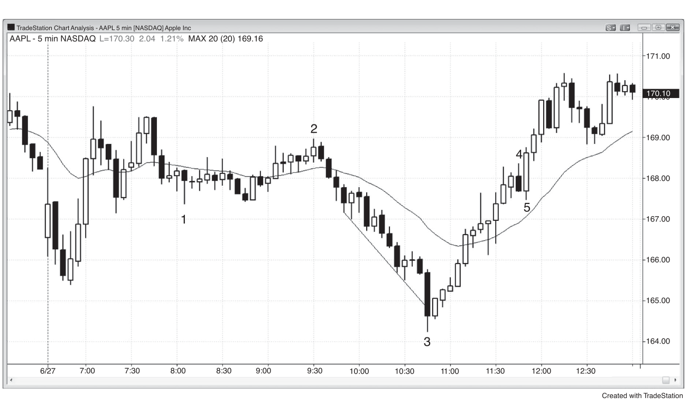
An unusually large trend bar that forms in a trend that has lasted for 10 or more bars usually means that the market is exhausted and will correct for at least 10 bars, and sometimes it leads to a reversal.
In Figure 6.3, bar 3 was a huge trend bar that collapsed below the low of the open and through a trend channel line and was followed by a bull inside bar with a shaved top, meaning that buyers were aggressively buying it right into its close. This is a great setup for a long. The large bear trend bar was acting as a sell climax, and the breakout above the bull inside bar was a bull breakout. This is a spike down and then a spike up, which is a reversal, and if you looked at various higher time frame charts, you could find one or more where this bottom was a perfect two-bar reversal and others where this formed a single reversal bar.
Bar 4 was a bear reversal bar but the bar 5 short entry bar immediately reversed up above the bar 4 high, running the stops on those shorts. It is important to note that shorting below the bar 4 bear reversal bar would not have been a wise decision because the upward momentum was too strong. There were 11 consecutive bull trend bars, so traders should not be shorting below the first bear bar. Buying above the bear reversal bar or above the bar 5 bull outside up bar was a reasonable trade since there were stopped-out bears who would wait for more price action before looking to short again. If the bears were not ready to short, the bulls could push the market higher.
Deeper Discussion of This Chart
The day opened with a strong bull trend bar on a gap down in Figure 6.3, but it immediately reversed down in a breakout pullback short setup. With the large tails and bodies of the first two bars and the small gap down on the open, the odds of more sideways action were high and it would be better to wait and not take the short trade. However, this was followed by a two-bar reversal signal for a failed breakout setup and a possible low of the day. There was a four-bar bull spike but no follow-through. At some point over the next couple of hours, traders would have taken at least partial profits and may have exited the balance on a breakeven stop during the late sell-off, if they did not reverse to short.
Bar 3 was also the bottom of a spike and channel bear trend, and the reversal should test the bar 2 start of the channel, which it did. The five-bar sell-offdown to bar 1 was the spike, and the channel down began at the pullback to bar 2. The sell-offdown to bar
3 was climactic because it had about a dozen bars with lows and highs below those of the prior bar. The actual number is not important. What is important is that there were many bars, and the more there are, the more unsustainable and therefore climactic the behavior is. A large bear trend bar like bar 3 after a strong bear trend is a sell climax.
This usually leads to a two-legged sideways to up correction, and less often to a trend reversal like the one that developed here.
The failed bar 4 reversal bar was a failed low 2 buy setup. The low 2 trapped na¨ıve traders who sold under the reversal bar but failed to wait for a prior demonstration of bearish strength. You should not sell in a strong bull trend if the market is in a tight channel where there has not been a prior bull trend line break.
The four-bar spike up to the 7:05 bar could have been followed by a channel up.
The spike down to bar 1, however, created the possibility that there might be a channel down instead, which was the case. It was appropriate to buy the pullback that ended around 8:45, expecting the spike up, and equally appropriate to reverse to short below the bear inside bar that followed bar 2.
Note that none of the dojis before and after bar 1 are good signal bars, because they are in the middle of the day’s range and next to a flat moving average.
The swing high that occurred five bars before bar 1 formed a three-bar reversal, which would look like a 15 minute reversal bar with a one-tick-tall bull body on the
15 minute chart since the third bar closed at the same time as the 15 minute bar.
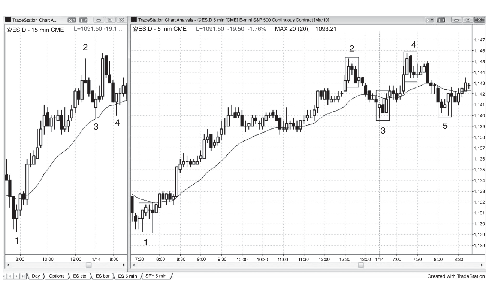
Note that 15 minute reversals can be seen on a 5 minute chart. In Figure 6.4, the 15 minute chart on the left had several reversal bars and the corresponding threebar patterns were within the boxes on the 5 minute chart on the right. In general, a 15 minute reversal is more likely to result in a longer move than a 5 minute reversal is. When you are looking to take a 5 minute trade, if you see three-bar combinations that also create 15 minute reversals, you usually can feel more confident about your trade.
In general, it is a good idea to look at any trend bar that is followed within the next 10 bars or so by an opposite trend bar with a close near the open of the first bar as a reversal. The reversal will be a two-bar reversal on some higher time frame chart, and a reversal bar on an even higher time frame chart.
Deeper Discussion of This Chart
The market broke below the moving average in Figure 6.4, and the breakout failed and led to a trend from the open bull trend. Bar 3 was a moving average gap bar in a strong trend, and the move down to bar 3 broke the bull trend line. A moving average gap bar often leads to the final leg of the trend before a larger correction. Bar 4 was a two-bar reversal short setup at the higher high.
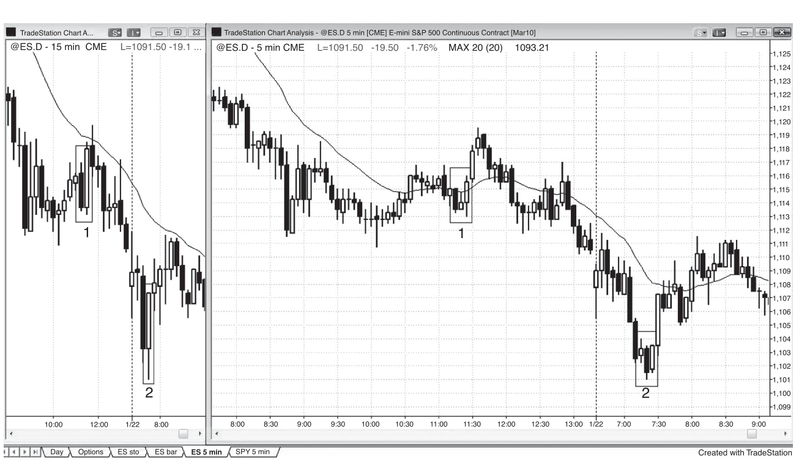
Some three-bar patterns on the 5 minute chart do not create good reversals on the 15 minute chart, but they still lead to acceptable reversals. In Figure 6.5, the 5 minute chart on the right had a couple of three-bar patterns that looked like they should form perfect 15 minute three-bar reversals. However, since the third bar in both cases closed at 25 minutes after the hour instead of at 30 minutes after the hour, when the 15 minute bar closed, the 15 minute pattern did not show the same strength. Traders could trade the 5 minute pattern if it was a perfect 15 minute reversal and buy at one tick above the high of the three bars, or earlier if there was an earlier 5 minute entry. For example, in the second example on the 5 minute chart, the second and third bars formed a two-bar reversal, so it would be acceptable to enter at one tick above the two-bar reversal instead of two ticks higher, above the top of the three bars. In general, traders should not spend time looking for three-bar reversals, because they occur only a couple of times a day and you should not risk missing other more common setups.
Bar 2 was the first bar of a two-bar reversal, and you could find some time frame where the three large bear trend bars that led to the bottom and the two large trend bars that followed bar 2 comprised a two-bar reversal, like the 15 minute chart on the left. You could also find a chart where those bars created a perfect single reversal bar. Because of this, all reversal setups are closely related. Don’t be too particular and don’t lose sight of the goal. You are trying to see when the market is trying to reverse and then look for some way to get in once you believe the reversal will likely have follow-through.
Deeper Discussion of This Chart
The market broke below yesterday’s low with a small gap in Figure 6.5, and the first bar was a failed breakout buy setup for a possible trend from the open bull trend. When the reversal is within a steep bear channel like this, it is better to wait for a pullback after the reversal up before buying. There was a higher low a few bars later, but the bars were sideways and had big tails, so bulls should wait for more strength. Instead, there was a low 2 short that was also a breakout pullback short, but most traders prefer to wait for the breakout of the entire opening range when the opening range is a small trading range that is less than about a third of an average day’s range. The large bear trend bar that broke out below the low of the opening range shows that most traders waited for that breakout before going short.
Bar 2 was a two-bar reversal for an opening reversal long. It followed a one-bar final flag, and there was earlier buying strength in the strong first bar of the day.
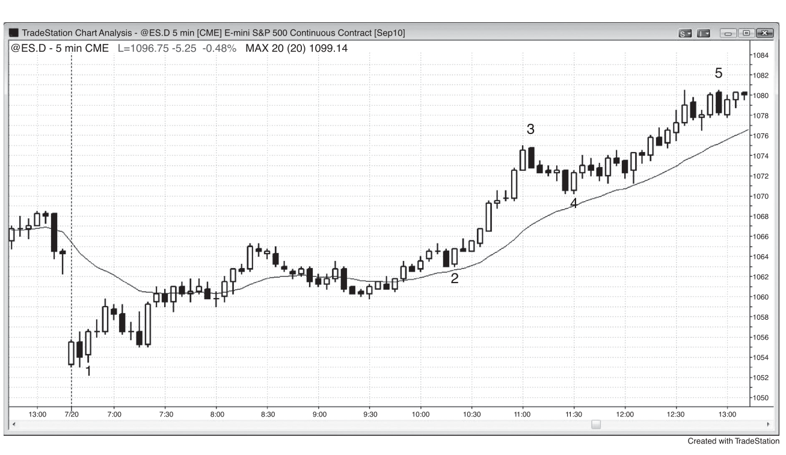
A two-bar reversal is a setup composed of two bars and the entry is one tick beyond both. In Figure 6.6, even though bar 5 was a bear trend bar, its low was one tick above the low of the bar before it. When a reversal bar almost entirely overlaps the bar before it, it should be considered to be a two-bar reversal setup. Here, for example, the safest short entry was below the lower of either bar 5 or the bar before it. The market fell one tick below bar 5, but it formed a double bottom with the low of the bar before it. Traders who thought that it was safe to short below a large bear bar were stopped out with a loss.
Bar 3 was a similar situation, and if a trader was thinking of shorting, it would be safer to short below the low of the bar before it and not just below the bar 3. In any case, this was a risky short since the market had been trending up strongly for nine bars. It would be much better to not short and instead look to buy a pullback, like above the bar 4 two-bar reversal.
Bar 1 was the second bar of a two-bar buy reversal where the second bar was above the high of the first bar. The entry is above the high of that second bar.
Bar 2 was a two-bar reversal where the highs of both bars were the same.
Deeper Discussion of This Chart
There was a large gap down and a bull trend bar in Figure 6.6. The market then formed a two-bar reversal down that did not trigger a short and instead became a two-bar reversal up. The long above bar 1 had good follow-through two bars later. Since this was a possible trend from the open bull trend and there were signs of buying strength, traders should rely on their initial stop below the low of the day until after the higher low. Once the market turned up from the higher low with a strong bull trend bar, they could move their stop up to below the higher low and hold long into the close.
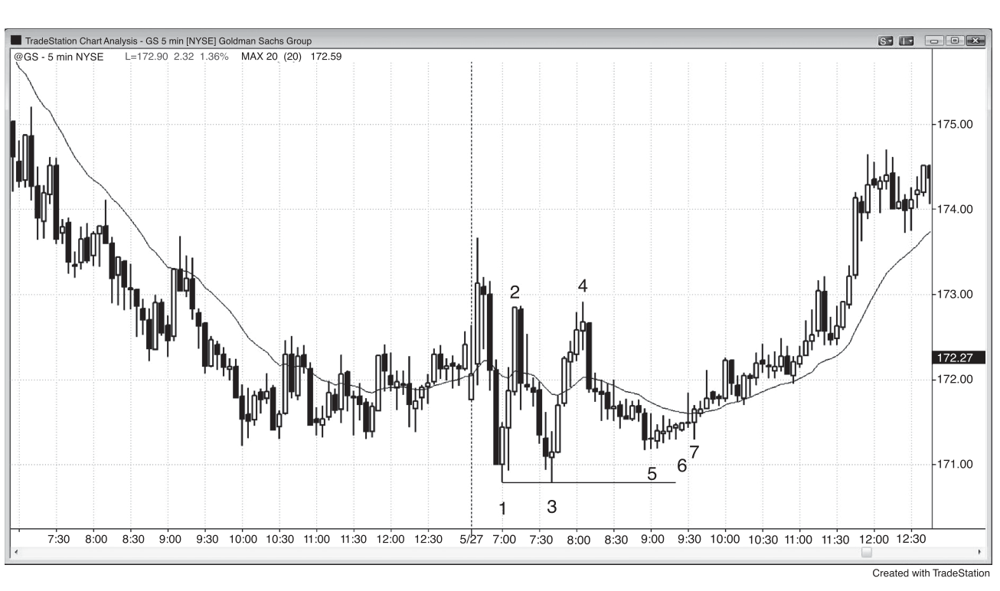
Always be ready for a reversal in the first hour or so. Goldman Sachs Group (GS) was in a bear trend yesterday and had a strong rally off the open today so traders were looking for a pullback to a lower low or higher low and a possible trend reversal. As shown in Figure 6.7, there was a lower low at bar 1, which was tested by bar 3 and they created a double bottom. This was followed by a higher low at bar 5, and bulls were looking for a buy setup for a possible new bull trend. Bar 5 was an inside bar and the bar after it was inside of bar 5, with its low above the low of bar 5 and its high below the high of bar 5. This is an ii setup, and traders would buy on a stop at one tick above the second bar. Bar 6 was a second ii setup since it was an inside bar and the bar before it was also an inside bar.
Deeper Discussion of This Chart
There was a tricky open in Figure 6.7, and when in doubt, stay out. The market broke above the trading range of the final couple of hours of yesterday, but the breakout failed on the third bar. The market then broke out below the trading range and that breakout failed and reversed up at bar 1. Bar 3 was an acceptable double bottom long setup, but traders who waited could buy the double bottom pullback above bar 6.
This was a double bottom pullback buy setup. Double bottom pullbacks have a pullback that typically extends more than 50 percent and often almost the entire way to the double bottom. This double bottom was exact to the tick. The higher low often forms a rounded bottom, and traditional stock traders would describe it as an area of accumulation. The name is irrelevant; what is important is that the market failed to put in a lower low on this second attempt down (bar 3 was the first), so if it can’t go down, the bears will step aside and the market will probe up (in search of sellers willing to sell at a higher price). Instead of finding sellers, the market found buyers willing to buy at the higher price.
Bar 7 set up a third entry on the back-to-back, opposite failures. The market failed on the upside breakout above bar 6 and then failed on the downside on the next bar, meaning that both the bulls and bears were trapped. Bar 7 became just a pullback from the breakout above bar 6 and is therefore a breakout pullback long setup.
Bar 4 was a double top bear flag short setup. The rally on the open was followed by a lower high at bar 2, which was tested by bar 4, creating a double top. Since the double top was below the high of the open, there is a possible bear trend and any pullback in a bear trend should be thought of as a bear flag.
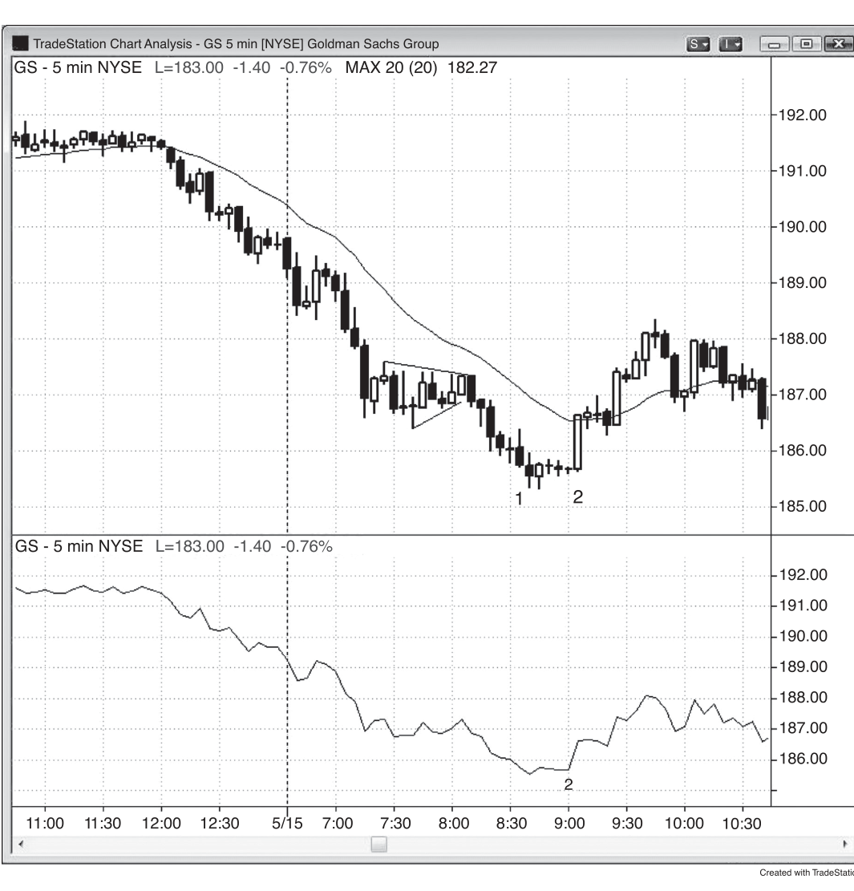
Sometimes the bars are so tiny that they appear to be insignificant but they still can be telling you something that is very important. In Figure 6.8, the bar 2 signal bar was a tiny bar (11 cents in a $185 stock), but if you look at a line chart of the closes, the small higher low was clear at point 2.
Bar 2 was the second half of a reversal setup, and the large bear trend bar that formed three bars before bar 1 was the start of the down part of the reversal. You could find some higher time frame chart where this collection of 10 bars formed a two-bar reversal.
Deeper Discussion of This Chart
The day opened on the high tick in Figure 6.8 and had a two-bar spike down as it broke out of a two-bar bear flag from yesterday’s close. The market tried to reverse up on the fourth bar but there was no long entry since it was an outside up bar without followthrough. The shorts would hold with a stop above the signal bar or maybe above the outside up bar. The next bar was a bear inside bar that set up a low 2 short entry in a trend from the open bear trend.
The bull reversal bar three bars before bar 2 was a riskier entry since the market had been in a tight bear channel for the seven prior bars. It is safer to wait for the breakout from the channel and then buy the breakout pullback. This pullback was more of a sideways pause and it ended with the bar 2 higher low buy signal. Second entries in general are more reliable. It was very close to being an iii pattern, which often leads to reversals at the ends of swings.
Bar 1 was not a good setup for the reversal up from the final flag breakout because the signal bar was a doji. Instead, you should wait for a bull trend bar for a signal bar when bottom picking in a strong bear trend. Also, the prior four bars were bear trend bars, so there was too much downward momentum to be buying the first attempt to reverse, especially when the signal bar is a doji, which does not represent strong buying.
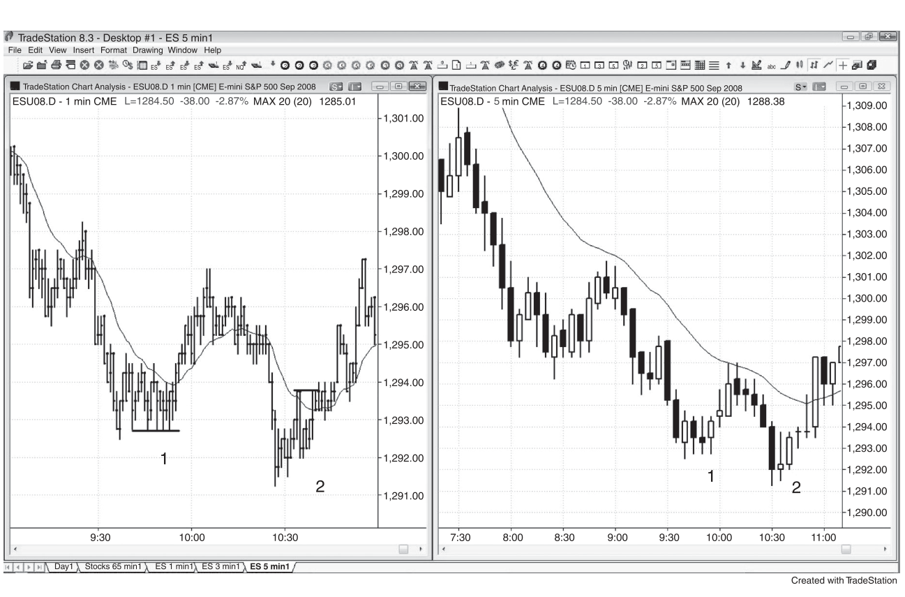
Because an ii pattern always represents a clear reversal setup on a smaller time frame chart, you never have to check that chart to confirm it. In Figure 6.9, on the 5 minute chart on the right, there were two ii patterns (the first is an iii). These often are clearer reversal patterns on smaller time frame charts, like the 1 minute chart on the left. The bar 1 iii on the 5 minute chart was a higher low that was tested repeatedly on the 1 minute chart. The bar 2 ii on the 5 minute chart was a higher low after a higher low, so the market was making trending higher lows, which is a component of a bull trend.
In both cases, the bull trend bar at the end of the ii pattern was a great setup for a long entry. Even though small bars have less directional significance, it is always better to have the final one be a trend bar in the direction of your intended entry.
Bar 2 on the 5 minute chart formed a reversal with the bear trend bar that formed two bars earlier.
Deeper Discussion of This Chart
The bar 1 setup on the 1 minute chart in Figure 6.9 was a double bottom pullback buy pattern, and the bar 2 setup was a failed low 2.
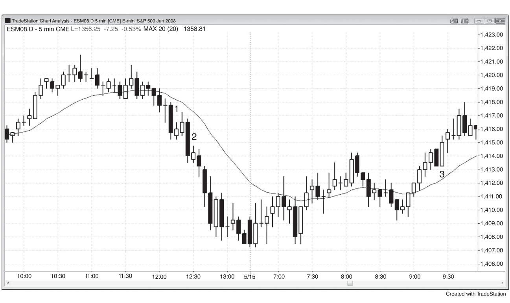
Double bottoms and tops can be as small as two consecutive bars and still be important.
In Figure 6.10, bar 1 was a micro double bottom bear flag setup, since it is a bear trend bar immediately followed by a bull trend bar in a bear spike and they have identical lows. Sell at one tick below its low. You could also sell below the low of the one-bar pullback on the next bar, giving you an earlier entry.
Bar 2 was another example. Bar 3 was a micro double top entry bar for a long trade, since the bear trend bar is a one-bar bull flag in a bull spike (a high 1 buy setup in a bull spike). It is also a micro double bottom and a two-bar reversal with the bar before it. Traders could therefore also buy above the high of bar 3, although this is a riskier entry since it is four ticks worse. Also, buying above a large bar after a breakout of three overlapping bars is risky because those three bars might be the start of a trading range.
Deeper Discussion of This Chart
The first bar of the day in Figure 6.10 broke out below yesterday’s low and the breakout failed. Since the market was still within the trading range from the final hour of yesterday and the two-bar reversal up on the open had large bars, this would force traders to buy at the top of a trading range that had many bars with large tails. Instead, traders should wait. The move up to the moving average was a bear flag and it broke out at 7:15 a.m.
PST, but the breakout failed and reversed up on the next bar in a two-bar reversal, which was a reasonable buy.
At 8:50 a.m. there was a double bottom pullback long setup.
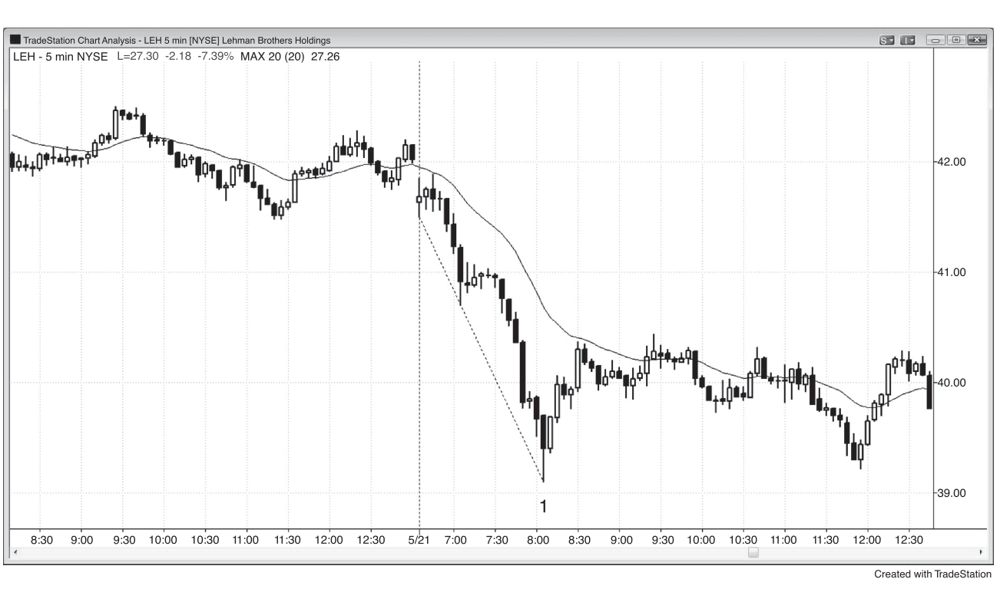
Although it is usually better to not buy the first reversal attempt in a strong bear trend, a strong two-bar reversal can be a reliable buy setup after a sell climax. As shown in Figure 6.11, Lehman Brothers Holdings (LEH) had a two-bar reversal bottom on a test of the bear trend channel line and after consecutive sell climaxes. The sell-off was climactic because it was unsustainable behavior. Sixteen of the prior 17 bars each had a high that was below the high of the bar before. Also, there were three occurrences of a large bear trend bar that followed a series of smaller bear trend bars. A climax is usually followed by a two-legged correction that lasts for many bars (at least an hour on a 5 minute chart).
Bar 1 was the first bar of a two-bar reversal. It is usually risky to buy the first reversal in a strong bear trend, but after several signs of climactic behavior and a very strong two-bar reversal, this was a reasonable buy setup. Bar 1 was another large bear trend bar and therefore another sell climax, and the second bar was a strong bull trend bar. It was large and it opened on its low and closed on its high.
Deeper Discussion of This Chart
The market in Figure 6.11 opened with a breakout of a bear flag over the last 90 minutes of yesterday and it tested yesterday’s low. The third bar tested the moving average and the next bar set up a low 2 short for a possible trend from the open bear and breakout pullback short. Many traders waited for the breakout below the first bar of the day to go short, and this resulted in a bear trend bar that became the first bar of a three-bar bear spike. Traders could also get short below the bear flag that followed.
Bar 1 had a big range and followed a strong bear leg, and it was therefore a sell climax. There was another large bear trend bar four bars earlier and it, too, was a sell climax. When a trend is particularly strong, it often will not correct until after a second sell climax, and rarely after a third.
The small inside bar that formed two bars before bar 1 turned into a one-bar final flag.
There were three large consecutive bear trend bars with very little overlap offthe open, and they constitute a spike down. A strong spike down is commonly followed by a bear channel and then a pullback and sometimes a reversal. That initial spike down was followed by a sideways low 2 and then even stronger selling. Even though this followthrough selling was almost vertical, it should be thought of as the bear channel that followed the initial spike down. That low 2 is a type of final flag, even though the market fell far before trying to pull back.
Spike and climax bears (a type of spike and channel bear trend) usually test to around the start of the channel within a day or two, but when the selling is this strong, they may not, and a higher time frame pattern might be controlling the market. For example, the entire sell-offdown to bar 1 might be a large spike on the 60 minute chart and the trading range that followed might become the pullback that leads to a large bear channel move down to much lower prices.
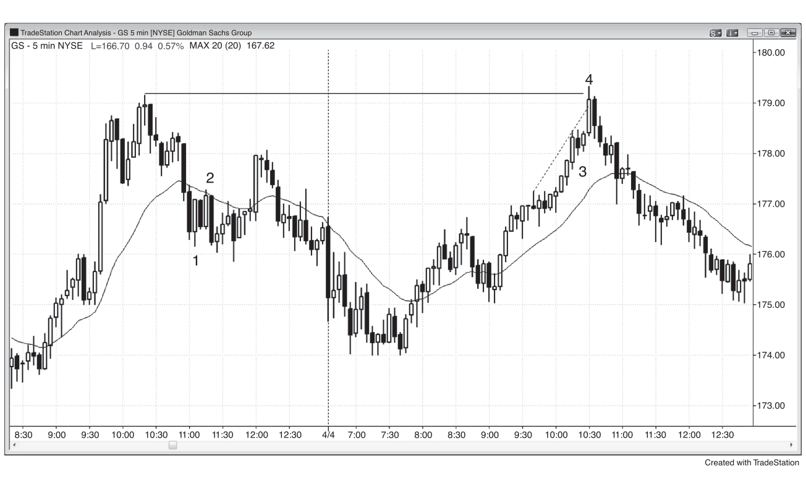
The first attempt to reverse a strong bull channel can be a reliable short if it is at the end of a buy climax and the two-bar reversal is strong.
In Figure 6.12, bar 4 was a large two-bar reversal top on a break above yesterday’s high and a bull trend channel line, and after the breakout of a small flag (bar 3). When two bars overlap so much, the chances of a profitable trade are greater if you short below the lower of the two bars and not below the other (bar 4 in this case). Also, the second bar had a large bear body, and when a bull trend is strong, you should short only below a strong bear bar and never below a strong bull bar.
Bar 1 and the bear bar before it did not provide a good two-bar reversal buy setup because there was too much downward momentum in those two large bear trend bars on their breakout from the lower high. The bars barely overlap one another and they have small tails.
This was immediately followed by another two-bar reversal buy setup (back-toback patterns happen occasionally), but four overlapping bars after a spike down there is a bear flag and you should not buy at the top of a trading range in a bear trend, especially just below the moving average. Two-bar reversals are countertrend signals only if there is a reason to expect a reversal.
Bar 2 is an acceptable entry bar for a short based on the two-bar reversal top created by the prior two bars. It was reversing the small correction up to the moving average. However, whenever there is a two-bar reversal sell setup just below the moving average and the bars are relatively large and overlap one or more other bars, you usually can buy at or below the low of the signal bar for a long scalp. This is a small trading range and it is usually better to buy at the bottom of a small trading range.
Bar 4 was the first bar of a two-bar reversal.
Deeper Discussion of This Chart
The bar 4 two-bar reversal in Figure 6.12 followed a small final flag at bar 3, and it was the third push up after the bull spike that began at 9:10 a.m. Spike and channel patterns often correct after three pushes up. The spike is the first push and then there are often two more spikes followed by a correction that usually tests to around the bottom of the channel.
The first bar of today was a breakout below the double bottom bull flag of the final
90 minutes of yesterday. Traders could have shorted below the double bottom on a stop or below the ii breakout pullback setup three bars later.
There was a large two-legged move down from yesterday’s high that ended in a triple bottom on today’s open. There was a second chance to go long on the higher low at 9:05 a.m. PST, after the initial strong leg up that tested the high of the open. This was also a breakout pullback buy setup (even though the market had not yet broken out above the high of the open).
Bar 1 was an up bar, and it was followed by a down bar and then a second up bar that tested the moving average. This is a small two-legged correction to the moving average and therefore a low 2 short setup. There were also trapped bulls who bought above the back-to-back two-bar reversal bottom attempts, and once the low
2 triggered, they would exit their longs with a loss. Their selling adds to the selling of the new bears and increases the chance of success. Also, since they just lost, they will be hesitant to buy, and the losses of buyers increase the chance of a successful short scalp.
A series of overlapping bars is a tight trading range, which is a magnet, and breakouts often fail and the market is drawn back into the tight trading range. This is because both bulls and bears feel that there is good value in that range. When the market drifts toward the bottom of the range, the bulls feel that there is even better value and they buy more aggressively. The bears prefer to short in the middle or top of the range.
Their absence at the bottom of the range and the increased buying by the bulls lifts the market back up. The opposite happens at the top of the range, where bears become more aggressive and the buyers stop buying and wait for slightly lower prices. The entire process is amplified on a breakout. Here, the bears were able to overwhelm the buyers and break the market to the downside. However, instead of finding new sellers down there who could push the market down further, the buyers saw these lower prices as an even better value than that in the tight trading range. The result was that the market was pulled back into the range.
The market later tried to break out of the top and again was pulled back into the range. However, there will always be an successful breakout eventually.
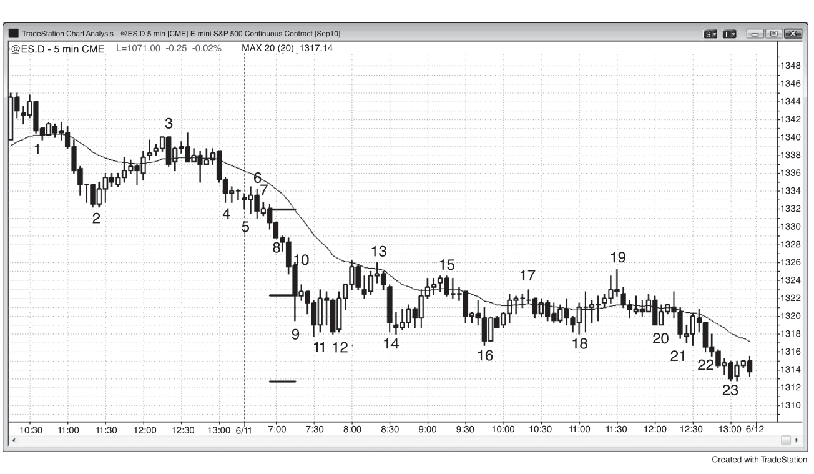
A bar with no tail at either end in a strong trend is a sign of strength, and traders should enter with trend on its breakout. In Figure 6.13, bar 8 was a bear bar in a strong bear trend, and it had no tail at both its high and its low, indicating severe selling pressure (they sold it from start to finish). It was likely that there would be more selling to come. Traders have to be fast in placing their sell stop orders because the market is moving fast. Alternatively, they can just short at the market or on a one- or two-tick bounce using a limit order.
The bar after bar 10 had a shaved top in a bear trend but since the market was not in free fall at this point, that alone was not enough reason for a short.
The bar after bar 16 was a bull trend bar with a shaved top and bottom, but it was not in a bull trend and therefore it does not function as a buy setup based solely on the absence of tails.
The bar after bar 17 and the bar before bar 20 were not shaved bar sell setups because they were not in a free-fall bear trend.
There were many two-bar reversal setups on this chart, as there are on all charts.
Deeper Discussion of This Chart
There was a quiet open in Figure 6.13 that continued the tight trading range of the close of yesterday. Bar 8 was a two-bar breakout and traders could have shorted on the close of the bar because of a likely trend from the open bear trend, or below bar 10, the first pause, or on the bar 13 double top bear flag test of the moving average.
Bar 11 was the second bar of a two-bar reversal and the market might have been trying to turn up after the sell climaxes. The next bar was a doji inside bar and a low
1 short setup. However, when there is a bear flag where the signal bar mostly overlaps with the two prior bars and the market might be in a trading range, the odds are high that the short will fail and will become a bear trap. Do not take these short signals.
The three-bar rally from bar 12 led to a 20 gap bar short, but since the upward momentum was strong, it was better to wait for a second signal, which occurred at bar 13.
Bar 19 was a moving average gap bar short and it led to a new low of the day. It was also a failed breakout above the bars 15 and 17 swing highs and a test of the top of the trading range. It is common for a trend day to have a strong countertrend move between
11:00 a.m. and noon PST, trapping traders into the wrong direction as it did here. It is important to realize this so that you will be mentally prepared to take the with-trend trade, which was a short here.
Since the bar before bar 10 was a large range bar in a trend that had gone on for a while, it is a sell climax and the market might try to correct sideways to up soon. The first pause in a strong trend is usually a successful short scalp, even in a strong bear trend, but it might become a final flag and lead to a correction up (the breakout below its low may reverse up within a bar or two). Whenever there is a strong spike down, it is usually followed by a measured move down based on some aspect of the spike, usually the distance from the open or high of the first bar to the close or low of the last bar of the spike. The low of the day was a perfect measured move down from the open of the first bar to the close of the final bar. Traders should continue to hold short at least until the market reaches the general area of these targets.
Bar 16 was a large bull inside bar reversing up from a new low of the day, and the market was now in a trading range. It was also a high 2 in a trading range and therefore an acceptable long setup. The high 1 formed two bars earlier.
The two-bar spike down into the close of yesterday led to the bear channel that ended on the bar before bar 11 today. However, the entire channel was steep enough to likely function as a spike on either the 15 or 60 minute chart, and the market might be in the process of channeling down into the close of the day.
The bar 21 strong bear trend bar or the bar before bar 20 might have served as a small spike down that led to the bear channel into the close of the day.
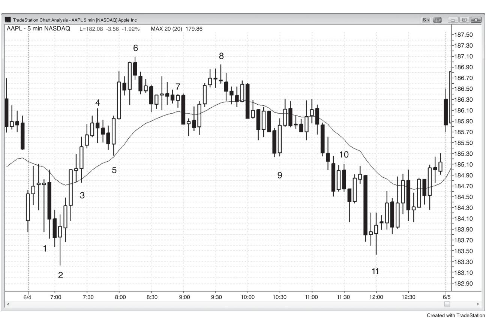
Apple (AAPL) demonstrated many common signal bars on the 5 minute chart shown in Figure 6.14. Even though bar 1 was a Hammer doji bar at the bottom of a swing down and it would make many candle worshipers want to buy, especially since it was a double bottom with the first bar of the day, this was a bad setup for price action traders. It was the third overlapping doji, meaning that the market traded both up and down in all three bars. This was an area of two-sided trading and therefore a trading range, and whenever there is a trading range just below the moving average, the odds favor a downside breakout. There are always sellers on any test of the moving average from below, and there was not enough room between the high of the bar and the moving average to make even a scalper’s profit. If you were to buy above bar 1, you would have to pay attention to the size of the bars, all of which had relatively large ranges. This increases the risk of the trade because your protective stop location should be in part determined by the size of the current bars. If you wanted to keep your risk the same on all of your trades, you would have to trade fewer shares.
Bar 2 was a much better reversal bar setup because it had a decent-size bull body and it was the second attempt to reverse up from below yesterday’s low and from a new low of the day (bar 1 was the first attempt). The bull bodies of the first two bars of the day showed some prior bull strength. The tail at the top showed some weakness, but this was erased by the trend bars that followed it.
Bar 2 was the second bar of a two-bar reversal and the middle of a large two-bar reversal on some higher time frame chart. You can find a chart where the bar before or after formed a two-bar reversal, and you could find an even higher time frame chart where the two bars before and the two bars after formed a two-bar reversal. As with all two-bar reversals, you can find an even higher time frame chart where the five bars formed a single bull reversal bar.
Bar 3 was an outside up bar (an outside bar with a bull body) after a pause bar, which followed the breakout to a new high of the day, and was an entry bar for the purchase above the high of the small bar. Outside bars in new trends often trap traders out of great trades because they happen so quickly. Many traders don’t have enough time to reverse their perspective fast enough from bearish to bullish, and then they have to chase the market up. The bar before bar 3 was a doji, so it was not a strong setup for a short, even though the market might reverse down after a breakout to a new high of the day. Only scalpers and weak shorts would be shorting below its low because of the signs of bull strength that were accumulating. The bar before that doji had the largest bull body of the day and closed on its high, and it was also the third consecutive up bar. All three bars had decent-size bodies, and the second and third did not overlap more than half of the prior bar. It was likely that traders were aggressively looking to buy any pullback and had limit orders to buy both below the low and above the high of the doji, and the buying was so strong that both sets of buy orders were filled in one bar.
Bar 4 was a bear doji at a new high, but the upward momentum was so strong and the reversal bar was so weak that a short could be considered only on a second entry. This was the first bear body after seven consecutive bull bars and the market rarely reverses very far on the first attempt, especially when the signal bar has a close in the middle instead of at its low. The bears were not even strong enough to close the bar on its low so they will unlikely be able to push the market down very far before the bulls overwhelm them again.
Bar 5 was another outside up bar that tested the moving average and the breakout from the opening range, and it was the end of first pullback in a strong up move.
Bar 6 was a bear reversal bar and a second entry short setup (the first was two bars earlier) after taking out the bar 4 swing high and yesterday’s high. Since the bears had enough strength to test the moving average with bar 5 and the bull trend is even more overdone, the bears should be able to correct to the moving average or even below it this time. As a trend wears on, the bulls typically will want deeper pullbacks before looking to buy again.
Bar 7 was an entry bar on an ii short setup at a time when you were expecting a test of the moving average. Both ii bars had bear bodies, which increases the chance of success for a short trade. Although a bull body on a bear entry bar is not good and the bar after it traded above it, the market did not trade above either of the ii bars where the protective stop would be. If you are going to take a trade in a tight trading range, you have to give it a little room. That entry bar became a small bull reversal bar, but small reversal bars are rarely good and when one forms in a tight trading range, it should not be looked at as a reversal bar because there is nothing to reverse. The ii breakout reversed back up a couple of bars later, which is expected when an ii is in the middle of the day’s range. Also, the market completed its goals of two legs down and a penetration of the moving average.
Bar 8 was a doji bar at close to a double top in what was now a trading range. Doji bars are never good signal bars for shorts in strong bulls, but they are acceptable signal bars for shorts in trading ranges, depending on the context. Since the market was testing the top of the range, it was an acceptable signal bar for a short since the market might test the bottom of the range.
Bar 9 was a two-bar reversal after a new swing low and test of the bar 5 low. The entry was above the high of the higher of the two bars, which would be above bar 9. However, this is risky because there will always be shorts at the moving average when the market tests it from below. Also, the two bars are large, forcing buyers to come in too high above the low of a down leg. When the risk is greater, it is better to not take the trade and to wait for a strong setup.
Bar 10 was a two-bar reversal following four bear trend bars with good-size bodies, small tails, and very little overlap, and therefore a good short setup in a strong bear trend.
Bar 11 was a bull reversal bar after a third push down and it was an attempt to hold above the low of the day. The bear trend had gone on for a long time and there were many pullbacks along the way, so the odds were high for a test of the moving average. Since it is countertrend, you have to be willing to allow for pullbacks in the move up to the moving average, so do not tighten your stop too soon.
Deeper Discussion of This Chart
The market broke below the moving average on the open in Figure 6.14, but the breakout failed with a strong bull reversal bar. The second bar had a bull body but it also had prominent tails and it failed to get above the moving average. There was also no followthrough buying on the third bar, which also tested the moving average and failed to get above it. Bulls should have considered exiting their longs and waiting since the market was now in a small tight trading range below the moving average and the bars were large with tails. A tight trading range below the moving average usually breaks out to the downside, but there was no reliable short setup. Instead, traders should wait for a better setup. Bar 2 was a strong bull reversal bar that set up a long of the failed breakout of that tight trading range, which became a final flag.
Once the market broke above the opening high, a measured move up was likely.
Bar 2 was also a bear micro wedge that overshot the trend channel line that could be drawn across the bottoms of the prior three bars. Notice how there is a tail at the bottom of the bar that followed bar 1. That means the buyers came in around the low of the bar. The bears were hoping to find sellers on the breakout below the low of the bar and for the close to be well below the low of the bar, but instead there were some buyers. This happened on the next bar as well and even more so with bar 2. The bears were finally able to drive the price even further below the low of the prior bar, but the bulls became especially aggressive and reversed the market and closed the bar above its open and near the top of the bar. Although micro wedges by themselves don’t usually lead to major reversals, the other factors at work here created the low of the day.
Bar 2 along with the bar before it and the bar after it also created a three-bar reversal and a 15 minute reversal bar because the bar before it would have the same open as the
15 minute bar, the bar after it would have the same close as the 15 minute bar, and that close is above the open. The next bar would then trigger a 15 minute long entry.
The move down from bars 4 to 5 had several overlapping bars and could be a final flag. Bar 5 and the bar that followed it both had very large bodies and small tails and therefore formed a two-bar buy climax. When a climax occurs after a trend has been going on for many bars, the odds of a two-legged sideways to down correction lasting at least 10 bars increase. The next bar was a bear inside bar after a buy climax and might become a one-bar final flag.
Bar 6 was the second leg up from the bar 5 first pullback and from the bar 2 low, and second legs are often reversals. Also, it was a low 4 and a wedge with the three pushes being bar 4, the bar after bar 5, and bar 6. It was additionally a larger wedge with the three pushes being the third bar of the day, bar 4, and bar 6. With this many factors operating, a trader should expect at least two legs down. It also followed two buy climaxes, the first being the two-bar climax of bar 5 and the next bar and the second being the bar before bar 6. A second consecutive buy climax usually results in at least a two-legged correction that penetrates the moving average and lasts at least an hour.
The two-legged pullback that followed the bar 6 short penetrated the moving average and ended with a moving average gap bar. Since it formed in a strong trend, a test of the trend’s high was likely. It was also a wedge bull flag buy setup with the first push down being the bar before bar 6 and the second push down being the third bar after bar
6. A moving average gap bar often leads to the final leg of the trend before the market has a larger pullback and even a reversal.
Bar 8 was a lower high or double top after a moving average gap bar, which always breaks the trend line, and therefore a possible trend reversal. There is a good risk/reward setup for a swing down, and shorts should swing part of their position. It also formed a one-bar final flag reversal, and a micro double top reversal with the tails at the top of either of the two bars before it.
Bar 9 was a wedge bull flag with the three pushes down from bar 8, but because the sell-offwas in a relatively tight bear channel and the market might have reversed into a bear trend, it is better to wait to see if there will be an acceptable breakout pullback buy setup. Five bars later, there was an outside up bar but that is not an acceptable long entry in either a trading range or a bear trend, and therefore buyers would have to wait some more. Bar 9 was also an attempt to form a double bottom bull flag with bar 5, at a price level where the market found buyers earlier in the day. Finally, it was the end of a large two-legged correction from the bar 6 high and therefore a high 2 long and probably a clear high 2 long on a higher time frame chart, like the 15 minute chart.
Bar 10 was a breakout pullback from the breakout below the bar 9 wedge bull flag low and the failed high 2, and it followed a breakout below the double top bear flag that formed after bar 9. The four-bar breakout was a spike down, and the market bounced back up to test the bar 10 top of the channel by the close. There was a double top bear flag short setup with the high of bar 10 and the bar that formed four bars later. All breakouts are spikes and climaxes, and there was a second sell climax two bars before bar 11; a second consecutive sell climax usually leads to at least a two-legged pullback. A breakout spike often leads to a measured move down. Take the number of ticks between the open of the first of the four bars and the close of the fourth bear bar and project down from the top of the first pullback (the high of bar 10).
Bar 11 was similar in appearance to bar 1, which earlier found buyers in this price area and they may be willing to buy again. Since there has not yet been a break of the bear trend line, the odds of a trading range are greater than the odds of a significant reversal. The move down from bar 6 was in a channel, and a bear channel should be thought of as a bull flag, so there might be a strong move up before long. Also, the entire move down from bar 6 is a complex two-legged move with the second leg down beginning at bar 8; it might be a simple two-legged correction on a higher time frame chart, like the 60 minute chart.
Bar 11 was a micro double bottom reversal with the tail of the bull doji bar that preceded it.
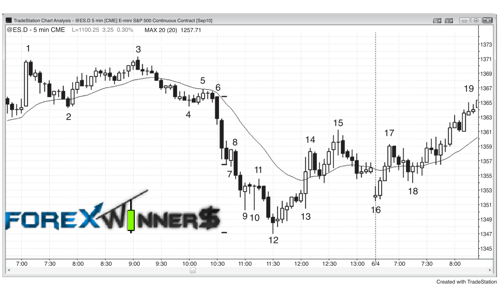
A bull reversal bar in a bear spike can be a one-bar bear flag. In Figure 6.15, bar 8 was a break below a bull reversal bar (failed reversal bar) in a strong bear trend and is a great short because the early bulls who bought will be trapped and forced to sell below its low.
Bars 8 through 14 created a two-bar reversal on a higher time frame chart and a single reversal bar on an even higher time frame chart.
Bars 9 and 10 formed a small double bottom and bar 11 was the entry bar for the long, but a doji is not a good signal bar for a countertrend trade against a strong trend. There were no prior bull pullbacks in the sharp sell-off, and since the first pullback in a strong trend usually fails, smart traders expected this bottom to fail. They placed sell stop orders to go short exactly where the losing longs would sell out of their positions, which was one tick below bar 11.
A doji is a one-bar trading ranges and bars 9 and 10 created a pair of large dojis with a small doji in between. These three bars formed a small sideways trading range in a strong bear trend, which is a bear flag, so a downside breakout was likely. Since bar 11 was the second attempt to rally (the first attempt was two bars earlier but it could not even get above the bull doji just before it), the longs would almost certainly exit below bar 11 and not look to buy again until the market moved down for a bar or two. As these longs sold their positions, their selling added to the selling pressure from the smart traders who expected this weak bottom to fail and therefore shorted below bar 11. The only traders willing to buy just bought and lost, so the market became briefly one-sided and destined to fall.
Deeper Discussion of This Chart
Bar 7 formed a micro double bottom with the tail at the bottom of the large bear bar two bars earlier (the bottoms do not have to be exactly at the same price). Since the market was in a bear spike, selling the breakout below the bar 7 double bottom low was a reasonable short. This is different from the bar 18 micro double bottom (with the tail of the doji bar two bars earlier), which was in a pullback from a four bar bull spike, and not in a bear spike. It was reasonable to buy above bar 18 (most minor bull reversals come from some type of micro double bottom, as discussed in book 3 in the chapter on reversals), but not good to short below it. Bar 11 formed a micro double top with the high of the bar two bars earlier, and became a low 2 bear flag sell signal bar.
Bar 15 strongly broke above the bear trend line in Figure 6.15, and the gap down opening to bar 16 was a higher low buy setup for an expected second leg up. The market broke below the moving average and below the double bottom bull flag of the final hour of yesterday and the breakout failed.
Bar 18 was a breakout pullback long for the breakout of the bull flag from bar 15 to bar 16.
Bar 6 and the next bar were large bear trend bars that broke out below the bars 2 and 4 double bottom. The tails were small and the bodies were large, and more selling was likely. Every large bear breakout is a sell climax but that does not mean that the market will reverse. This breakout looked strong and the bulls could generate only a two-bar pause after the sell climax before they were overwhelmed again by the bears.
A breakout is not only a climax but a spike as well, and when the breakout is strong like this, it is usually followed by a channel down before a tradable bottom develops.
Bears will be aggressively shorting every pause and every little pullback until a possible bottom forms. The bottom will usually be at some measured move target, and the first one to consider is a measured move down from the top to the bottom of the trading range before the breakout. Next, look at the open of the breakout bar to the close or low of the final strong bear trend bar of the breakout, which might be the bar before bar
7 or the bar before that. It turns out that the bear trend bottomed at a measured move using a projection down from the top of the spike to the low of the third and final bear bar of the spike. You should also look for other possible measured move projections as well, because if the market tries to reverse within a couple of ticks of one of these magnets, it should increase your confidence to take the trade. However, you cannot take the countertrend trade on a measured move alone since most fail and you have to keep looking at others. The odds of success are too small. However, if there are other reasons to take the trade, like a trend channel line overshoot and reversal or a final flag reversal, the odds of success increase considerably.
After a strong spike down, the most likely follow-up will be some type of channel down and eventually a test up to the top of the channel. Traders would keep shorting all the way down the channel and then buy at the bottom for the pullback to the top of the channel.
Bar 8 and the bar after it were large bear trend bars with little overlap and therefore constituted a second sell climax. Although a second sell climax usually leads to two legs sideways to up and lasts at least 10 bars, the move down to bar 9 was so steep that buyers were unwilling to buy and sellers were still willing to sell more.
Bar 11 was the end of a four-bar barbwire pattern, and barbwire after a long trend often becomes a final flag, which was the case here. Traders were expecting any breakout below the small tight trading range to soon fail and the market to be pulled back into the range. Because of this, they would likely only scalp the short below bar 11 instead of holding it for a swing down. The two bars after bar 11 were again large bear trend bars and formed a third spike, which is always also both a breakout of something (here, barbwire and therefore a potential final flag) and a climax. A third consecutive sell climax is fairly unusual and the odds were therefore high that there would be at least a twolegged sideways to up correction lasting at least 10 bars. This is even more likely after a final flag breakout and a measured move.
Even though the bar 12 signal bar at the low had a bear body, its close was above its midpoint so the buyers showed some strength. It was also the third push down after the spike breakout (bars 7 and 9 were the first two), and the channels that follow spikes often end with a third push. In the context of a final flag, a third consecutive sell climax, a wedge bottom, and a measured move, it was a good setup for a rally. The first objectives were tests of the top of the barbwire around the bar 11 high and a test of the moving average. Another objective was a two-legged move sideways to up lasting about 10 bars or about an hour. The final objective was a test of the top of the channel after the initial spike, and that was the top of the bar 7 bull bar. Although the move up to bar 15 had two legs, it was mostly contained in a channel and therefore more likely to be a complex first leg in a larger two-legged pattern, which it was. The second leg up began on the bar 16 open of the following day.
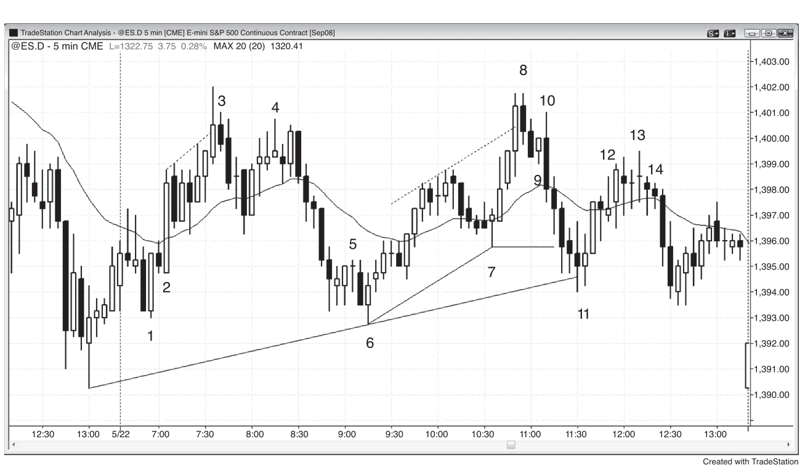
There are many good setups every day on every chart, and the more experience you have in spotting them as they form, the better chance you have of being able to profit from them.
In Figure 6.16, bar 1 was a two-bar reversal buy setup after taking out the low of the open, and it was a higher low compared to yesterday’s low.
The small bear reversal bar before bar 2 tested the moving average and was an attempt to make the two-bar reversal fail. It failed and became just a pullback from the breakout above bar 1. When the market is trying to go up, it is good to buy above pullbacks.
Bar 3 was a bear inside bar after an attempt to break above a bull trend channel line and yesterday’s high. This set up a short because if the market traded below its low, traders would think that the breakout had failed and there should be a pullback.
Bar 4 was a doji bar after two other dojis, and a bar with a tiny body and a micro wedge top made of dojis is rarely a reliable setup. The overlapping dojis represent two-sided trading and therefore uncertainty. However, the three tails on the tops of the bars were a sign of building selling pressure. A second entry setup came two bars later in the form of a two-bar reversal, and the short entry was below the lower of the two bars. That entry below that bear trend bar was also a break below a micro double bottom formed by that bear bar and the doji bar two bars earlier.
Bar 5 was a failed upside breakout above an ii. Bar 6 was a bull reversal bar and a second attempt to rally on a test of the low of the day.
Bar 7 was a doji but it was a pullback to the moving average with a bull body after a strong move up, and it was the second attempt to rally (the first was the bar before it).
Bar 8 was a bear inside bar, but it followed three strong bull trend bars. With that much upward momentum, it is better to wait for a second entry before shorting.
Bar 8 was a two-bar reversal and in the middle of a two-bar reversal on a higher time frame chart. The bull component of that higher time frame reversal was formed by the three bull trend bars before bar 8, and the bear component was the series of bear trend bars that ended at bar 11. Some higher time frame charts would use all of those bars, and others would use most of the trades that took place during those bars.
Bar 9 was a bull reversal bar but it was relatively small compared to recent bars and therefore less likely to lead to a successful long. It was better to wait for a second entry but one never came. Instead, the longs who bought above bar 9 were immediately trapped as the market reversed into an outside down bar. Selling below the bar 9 low was acceptable because it would be capitalizing on those longs who would have to sell out of their now losing positions. However, a trader would have to think quickly to realize this and place an order.
Bar 11 was an ioi and a second-entry long setup on the push below the bar 7 swing low. On trading range days, the market often reverses breakouts above and below prior swing points, and second signals are especially reliable. The first signal was two bars earlier, but the downward momentum at that point was so strong that it would have been unwise to buy there. Bar 13 was a risky long entry because whenever there are three or more overlapping, relatively large bars sitting on the moving average, the bull breakout is usually a trap.
Deeper Discussion of This Chart
On the open in Figure 6.16, the market continued the rally from yesterday’s close, pulling back to the moving average and setting up a moving average pullback short. However, the upward momentum was strong, so it was better not to take the first entry short and instead to wait to see if there would be a second. The market fell below the open of the day, and the breakout to the new low failed. This reversal up was a possible low of the day, and it formed a double bottom with the first bar of the day and a higher low.
Bar 1 was a failed low 2 buy setup with the low before yesterday’s close being the first push down.
Bar 2 was a strong follow-through bar for the long entry above bar 1, and it became a large breakout bar after the failed low 2. A failed low 2 usually is followed by either one more push up and a wedge bear flag short setup, or two more pushes up and a low 4 short. If the breakout is strong, as it was here, the low 4 is more likely. Since it was such a strong spike up, a channel up was also likely. The channel assumed the shape of a wedge. Once either a wedge or a channel reverses, the first target is a test of the start of the pattern.
Bar 3 was the expected low 4 short setup after the failed low 2. It was also the setup for a reversal down from two wedge tops. The smaller one had the bar after bar 2 as the first push, and the second push up occurred three bars later. The larger wedge began with the second bar of the day and the second push was the bar after bar 2. Both wedges should be followed by at least two legs sideways to down and they should test the start of each wedge. The test of the start of the smaller wedge occurred three bars after bar 3.
It had two small legs, with the tail of the doji that formed two bars after bar 3 being the first leg down. The bar bounced up into its close and the second push down came on the next bar. This was a double bottom bull flag with the swing low that formed three bars after bar 2, and this is a common setup when the market tests the bottom of a channel or wedge.
These two small legs were just the first leg down for the larger wedge top, and bar 6 was the end of the second leg and the reversal up from the test of the bottom of that wedge and a five-tick failed breakout.
Bar 5 was the third small sideways bar after a sell-off, and any sideways pattern after a move can become a final flag, as it did here. Because it did so with a five-tick failure, there were trapped bears who bought back their shorts above bar 6, adding to the buying pressure. Bar 6 also formed a double bottom bull flag with the low of bar 1, leading to the expected bounce. It also was the setup for the long from the wedge bull flag that had its first push down three bars after bar 3 and its second push down three bars before bar 5.
Bar 7 was a wedge bull flag in a strong up move. The first push down was the bar just before 10 a.m. PST, and the second push down ended two bars before bar 7. Even though dojis in general are not reliable signal bars, they can be for pullbacks in trends or in strong legs in trading ranges.
Bar 8 was an inside bear trend bar that was the end of the second leg up in a trading range day and a test of the high of the day, both of which often lead to a reversal. It also followed a trend channel line breakout and the third push up in a bull channel (bar 5 was the first).
Bar 11 was technically a high 3, but should be expected to behave like a high 2, since the bar 10 outside bar bull trap should be considered the start of the downswing
(not the bar 8 actual swing high).
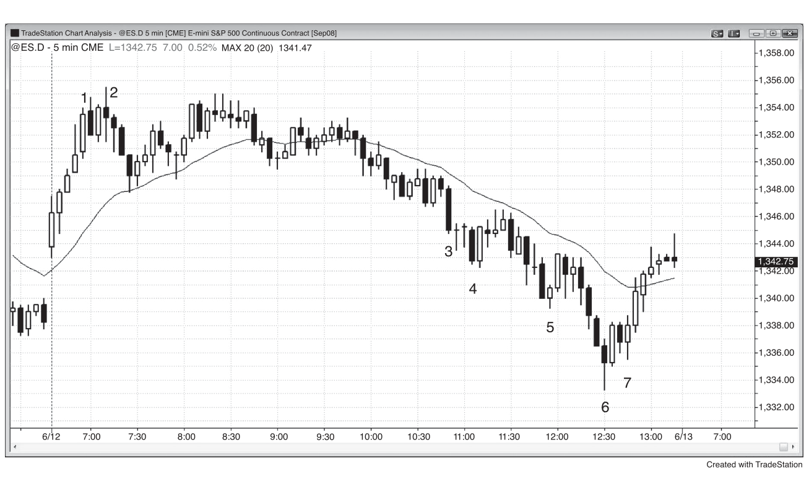
A bear reversal bar in a bull trend is not enough reason to go short and it sometimes becomes a bull flag. In Figure 6.17, the bar after bar 1 was a strong bear reversal bar but it followed five strong bull trend bars. In the absence of no prior strength by the bears, it was not a short setup. Only a second entry could have been considered, which was a short below bar 2. However, bar 2 was a doji and there were four largely overlapping bars in a strong bull trend. Rather than short, it was better to wait for a pullback to buy. The two-bar reversal at the moving average four bars later was a good setup.
Although buying above a bear trend bar in a bull spike is often a good trade, buying above the bear trend bar here or above the bull reversal bar that followed it was risky. Bar 1 was a large bull trend bar after several other bull trend bars and it was therefore climactic. There was too much risk of a sideways to down correction after a buy climax. If you look at the highs of the bars up to bar 1, the slope was increasing. This parabolic curvature is also a sign of climactic behavior and that makes the risk of a correction significant. Buying a pullback or looking for a short was a safer approach.
Bar 4 was a two-bar reversal following a breakout below two small doji bars and the bar 3 breakout below a seven-bar horizontal bear flag near the moving average. Because the trend down for the past 15 bars or so had only very small pullbacks, this was a scalp long at best, despite the large outside up bull trend bar.
Bar 5 was a small bull reversal bar with a close near its high and it was the third push down in the past six bars, so buyers were starting to come in. Although the market was still in the bear channel of the past couple of hours, this is a good long scalp setup.
Bar 6 was a large bear trend bar with a big bottom tail and a close above the midpoint of the bar, which can be enough of a show of strength by bulls to reverse the market, especially after a collapse at the end of the bear trend. It was also an overshoot of several bear trend channel lines (not shown). With four large bear trend bars in a row, only a second-entry long can be considered, which came on the bar 7 outside up bar. The bar 7 low was a small higher low, which is the start of the second leg up. It is acceptable to buy above bar 6 but better to buy above the high of a bull bar, like the bar after bar 6, and best to buy at a second signal. Bar 7 was that second signal and you could buy either as soon as it went outside up, because it went above the high of that strong bull bar that followed bar 6, or above the high of bar 7.
Deeper Discussion of This Chart
In Figure 6.17, the market opened with a gap up and a bull trend bar, creating a bull spike, and then pulled back a little on the second bar, trading as low as below the middle of the first bar. This was the only pullback before the market went parabolic, creating a gap spike and channel bull trend and a trend from the open bull trend. Parabolic means that the trend accelerated after already being strong. Here, if you draw a trend channel line across the highs of the first three bars, highlighting the slope of the trend, you will see that the fourth bar broke above that trend channel line. If you continue to draw trend channel lines across the highs of successive bars, you will see that the lines get steeper, and then flatter at the high. This is a parabolic shape, and a parabolic move is a type of buy climax. Since the market was still in a trend from the open bull trend, you should not sell the first attempt at a pullback, because the first pullback is almost always followed by a test of the high within a few bars.
As strong as the upward momentum was, traders should always be aware that the market can reverse at any time, especially in the first hour. The market often races to some magnet that often is not evident, and once it is tested, the market is then free to do anything, including reverse.
Whenever there is any type of climax, once the market begins to correct, it usually corrects in two legs and for at least 10 bars.
Just before bar 3, there was a seven-bar horizontal bear flag, and tight trading ranges after a trend has gone for 10 or more bars often become final flags. There was a low 2 short signal with a bear signal bar, but because of the possibility of a final flag reversal, it is better to only scalp the short. The breakout of the bear flag was the large bar 3 bear trend bar, which is always a spike and a sell climax. When a sell climax forms after a protracted trend, it can fail and lead to a two-legged sideways to up correction lasting about ten bars. However, there has been no significant sign of strength in the bear trend, so if the market does try to reverse, it is better to look only for a scalp.
The spike was followed by a wedge bear flag that was formed by the doji after bar
3, the outside up bar after bar 4, and the small doji two bars later. It can also be viewed as a low 2 short, with bar 4 being the first push down and the short being below the small bull inside bar four bars later.
The move consisting of four strong bear trend bars down to bar 6 was another spike and therefore another sell climax, and it was the third push down after the bar 3 spike. Channels that follow spikes often end with three pushes, but when the downward momentum is so strong, it is better to wait for a second signal before looking to buy, and this occurred with bar 7. A bear channel is a bull flag, so the market should rally once it breaks above the bear channel. Also, it should test the start of the channel after the bar 3 spike down, but sometimes the rally will not be completed until the next day.
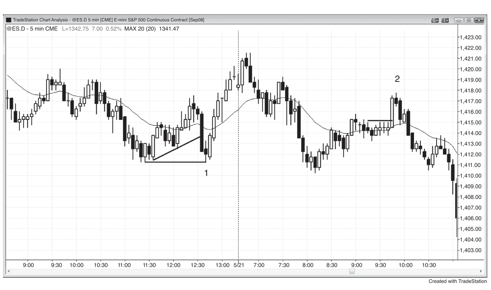
When a reversal bar is not particularly strong, it can still be a good setup if there is an additional reason to take the trade.
In Figure 6.18, bar 1 was a relatively small bar after a big bear trend bar broke out of a large flag, and might have been setting up a failed breakout of the flag. It was also an exact test of the earlier low. On a trading range day with bar 1 setting up these two reversals, it was a reasonable long setup, especially since the next bar created a two-bar reversal buy setup. The rally up from bar 1 and the sell-off down to the same price area the next day formed a two-bar reversal top on some higher time frame chart, and a single reversal bar on an even higher time frame chart.
Bar 2 was a small bear reversal bar after a large bull trend bar that broke out of a small trading range. This was an acceptable failed breakout short signal bar.
Deeper Discussion of This Chart
The market broke out above yesterday’s high in Figure 6.18, but the breakout failed and led to a trend from the open bear day.
Bar 2 was a final flag sell setup after the failed breakout from a tight trading range.
Tight trading ranges after 10 or more bars of a swing often become final flags. It also was a double top bear flag with the 7:30 a.m. PST high. Remember, close is close enough.
The bear trend that followed was huge and the market closed 30 points lower, but the rest of the day is not shown because it would shrink this bull trend bar to the point of looking unremarkable instead of how it appeared in real time.
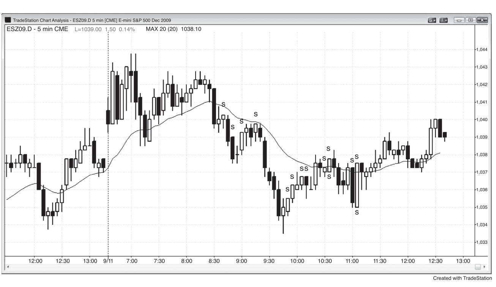
Shaved tops and bottoms are not always a sign of strength. When many shaved tops and bottoms occur close together, traders should be very careful because they may represent low volume in a trading range instead of strength in a trend. In the first cluster of four shaved tops in Figure 6.19 (indicated by “s”), the bear trend was still strong. However, in the second cluster, the market was in a trading range and they may just indicate that the volume was low. Be very careful about trading under these circumstances.
Deeper Discussion of This Chart
The market broke out above yesterday’s high with a gap up in Figure 6.19, but the first bar was a bear trend bar and therefore a sign of weakness by the bulls. The market could have traded down in a failed breakout but instead broke to the upside with a strong bull trend bar. This could have led to a strong trend from the open bull day but instead was followed by a large bear trend bar. This set up a two-bar reversal for a failed breakout short, but the short was never triggered and the longs were still holding their positions.
The market then broke to the upside out of the ii pattern; however, the breakout failed, setting up a failed breakout short and a possible high of the day.
When there are several bars with large ranges that form a tight sideways trading range, entering on a breakout is risky because most breakouts will fail due to the magnetic effect of a tight trading range. The market broke out to the upside and then to the downside, and then rallied offthe moving average back into the range. The spike down to the moving average was followed by a lower pullback that formed a lower high and then it evolved into a double top bear flag. The pullback to test the high of the day had low momentum, indicated by many overlapping bars, several bear bars, and many bars with tails. That is not how a strong bull leg looks.
Outside Bars
I f the high of the current bar is above the high of the previous bar and the low is below the low of the previous bar, then the current bar is an outside bar. Outside bars are complicated to read because both the bulls and the bears were in control at some point within the bar or the prior bar, and there are many subtleties in their analysis. The increased size of the bar means that bulls and bears are willing to be more aggressive, but if the close is near the middle, it is essentially a one-bar-long trading range. In fact, by definition, since an outside bar totally overlaps the prior bar, every outside bar is a part of a trading range, which is two or more bars that largely overlap. At other times, they can act as reversal bars or trend bars. Traders must pay attention to the context in which they occur.
Traditional technical analysis teaches that outside bars are setup bars for a breakout in either direction, and that you should put an entry stop above and below. Once filled, double the size of the unfilled stop and make it a reversal order. However, it is almost always unwise to enter on a breakout of a 5 minute outside bar, especially if the outside bar is large, because of the greater risk that the distant stop entails. Sometimes they occur when you are looking for a major reversal and you are very confident that there will be a large, strong reversal. When that happens, it makes sense to enter as soon as the bar takes out the extreme of the prior bar. If you are less certain, you can wait for the bar to close and then enter on the breakout of the outside bar. If you did enter on the breakout of an outside bar and the protective stop is too large, consider using a money stop (like two points in the Emini) or trading fewer contracts. Since an outside bar is a one-bar trading range and it is better to not buy at the top of a sideways market or sell below it, it is usually best to not enter on a breakout of the bar.
Outside bars can be reliable entry bars if the bar before them was a good signal bar. For example, if a trader is looking to buy at the bottom of a bear swing and the market forms a strong bull reversal bar but the next bar trades below the bar, the trader should consider leaving the buy stop in the market. If the bar suddenly reverses back above the bull signal bar, the buy stop will be triggered and the current bar will become an outside bar and an entry bar. In general, traders should not enter a reversal trade on an outside bar unless the bar before it was a decent signal bar.
Sometimes you have to enter on an outside bar (not on its breakout) because you know that traders are trapped. This is especially true after a strong move. If an outside bar occurs as the second entry in a strong reversal from a trend line break or trend channel line overshoot, it can be an excellent entry bar. For example, if the market just sold off below a swing low for the second time and reversed up from a trend channel line overshoot, you are likely looking to buy and you keep moving a buy stop order to one tick above the prior bar’s high until you get filled. Sometimes the fill will be on an outside up bar. This is usually a good reversal trade and it is due to strong buyers.
If an outside bar is in the middle of a trading range, it is meaningless and should not be used to generate trades, unless it is followed by a small bar near the high or low of the outside bar, setting up a fade. An outside bar in a trading range just reaffirms what everyone already knows—that both sides are balanced and both will sell near the top of the range and buy near the bottom, expecting a move toward the opposite end of the outside bar. If the market instead breaks out in the other direction, just let it go and look to fade a failed breakout of the outside bar, which commonly happens within a few bars. Otherwise, just wait for a pullback (a failed breakout that fails is a breakout pullback setup).
If the bar after the outside bar is an inside bar, then this is an ioi pattern (insideoutside-inside) and can be a setup for an entry in the direction of the breakout of the inside bar. However, take the entry only if there is a reason to believe that the market could move far enough to hit your profit target. For example, if the ioi is at a new swing high and the second inside bar is a bear bar that closes near its low, a downside breakout could be a good short since it is likely a second entry (the first entry probably occurred as the outside bar traded below the low of the bar before it). If it is in barbwire (a tight trading range), especially if the inside bar is large and near the middle of the outside bar, it is usually better to wait for a stronger setup.
When a with-trend outside bar occurs in the first leg of a trend reversal and the prior trend was strong, it functions like a strong trend bar and not a trading range type of bar. For example, in a bear trend, if there is a strong reversal up, traders might start looking for more of a rally. Many traders will be looking to buy above the high of a higher low, and fewer traders will short below the low of the prior bar. If the bulls are especially aggressive, they will buy below the low of the prior bar instead of waiting to buy above its high, and they will keep buying for the next several minutes as more and more traders see that the bulls have taken control of the market. This will make the bar extend above the high of that prior bar. Once it does, it becomes an outside up bar and those bears who just shorted below the low of the prior bar will likely cover and not be eager to short again for at least a couple of bars. With very few bears and many aggressive bulls, the market is one-sided and likely to go up at least for a bar or two. Everyone suddenly agrees about the new direction and therefore the move will have so much momentum and extend so far that it will likely get tested after a pullback, creating a second leg up. This higher low, and not the actual bear low, is the start of the up leg because it is when the market suddenly agreed that the next leg is up and not down. There will usually be two legs up from the bottom of the outside bar. Although the swing up will appear as three legs up from the actual bear low on the chart, it functionally is only two legs up since the market did not agree about the bull move until the higher low formed rather than at the actual low. This is where it became clear that the bulls had seized control.
Why is the move often strong? The old bears who shorted below the low of the prior bar, in what they thought would be just another bear flag, became trapped. Then their entry bar quickly reversed to an outside bar up, trapping the bears in and trapping the bulls out. Many bulls were trapped out because they don’t like entering as outside bars are forming since many outside bars just lead to trading ranges. Invariably, the market will trend up hard for many more bars as everyone realizes that the market has reversed and they are trying to figure out how to position themselves. The bears are hoping for a dip so they can exit with a smaller loss, and the bulls want the same dip so they can buy more with limited risk. When everyone wants the same thing, it will not happen because both sides will start buying even two- or three-tick pullbacks, preventing a two- or three-bar pullback from developing until the trend has gone very far. Smart price action traders will be aware of this possibility at the outset, and if they are looking for a two-legged extended up move, they will watch the downside breakout of that bear flag carefully and anticipate its failure. They will place their entry orders just above the high of the prior bar, even if it means entering on an outside bar up (especially if it is the entry bar for the shorts).
If you think about this from an institution’s perspective, you will want the bear flag short to trigger so that there will be longs who are trapped out and who will chase the market up, and also new shorts who will be trapped in and will have to cover if the bear breakout fails. This is an ideal situation for the institution that wants and expects a rally. So, as an institution, what can you do to contribute to this? Don’t buy aggressively until after the trap. In fact, you try to create the trap by selling until the short entry is triggered and then you buy aggressively as all those bear traders get short and the longs exit with losses just below the low of the prior bar. You take the opposite side of their positions and buy heavily below the low of the prior bar! Once you’ve trapped them all, you can buy aggressively all the way up; they will chase the market up once they see the trap, and this will propel the market upward with everyone in agreement that the market is heading higher.
The single most important thing to remember about outside bars is that whenever a trader is uncertain about what to do, the best decision is to wait for more price action to develop.
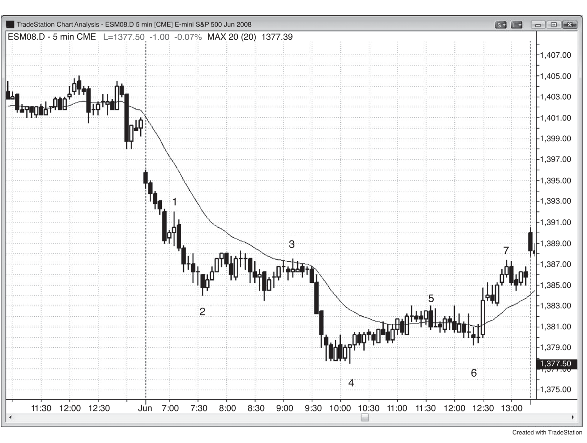
Outside bars are risky, and traders have to pay careful attention to the price action that led to them.
In Figure 7.1, bar 1 was an outside up bar in a strong bear trend, so traders would be looking to enter only on a downside breakout. You could either short below bar 1 or wait to see what the breakout bar looks like after it closes. Here, it was a strong bear trend bar, and trapped longs will likely exit below such a strong bear trend bar. Because of this, it makes sense to short below the low of that bear bar.
Bar 5 was an outside down bar but the market was basically sideways with lots of overlapping bars, so it was not a reliable setup for a breakout entry. The inside bar that followed it (ioi) was too large to use as a breakout signal, because you would be either selling at the bottom of a trading range or buying at the top and you only want to buy low or sell high.
Deeper Discussion of This Chart
The market broke out below yesterday’s low in Figure 7.1, and the first bar was a bear trend bar and the first bar of a trend from the open bear trend. Bar 1 and the bar before it formed the first pullback, and there is usually at least a scalp down after that first pullback. There was a two-legged pullback to the moving average at bar 3, which was also a 20 gap bars short setup.
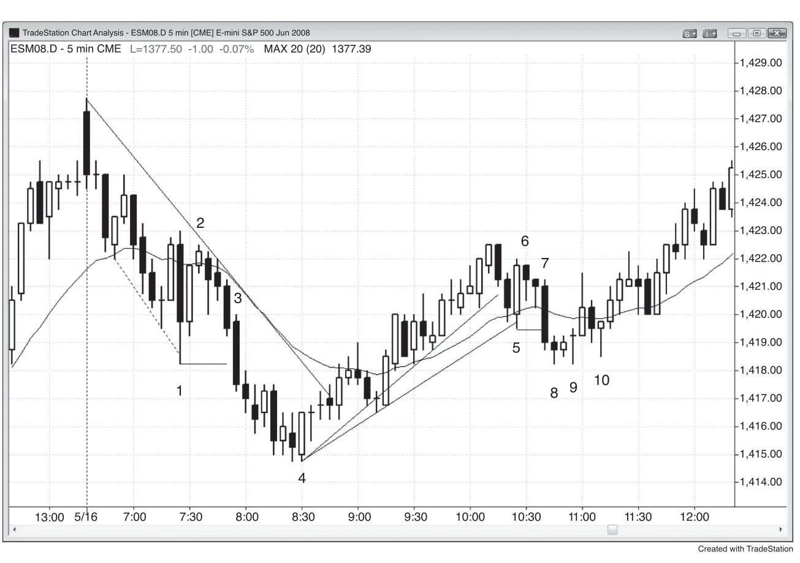
Outside bars are tricky because both the bulls and bears were in control at some point during the bar or during the prior bar, so the movement over the next few bars can have further reversals. In Figure 7.2, bar 1 was an outside bar that formed an inside-outside-inside (ioi) pattern. The bar 2 breakout of the inside bar following bar 1 failed, which is common, especially when the inside bar is large. This is because longs were forced to buy near the top of the ioi pattern, which is a trading range, and that is never a good thing, particularly when the market is falling.
Bar 2 was a small bar near the top of the trading range, which is a good area in which to look for a short entry. Since traders expected bulls to exit with a loss below the low of bar 2, their entry bar, they shorted at one tick below bar 2, which was a failed ioi breakout at the top of a trading range. Since the ioi bars were so large, there was plenty of room below bar 2 for at least a scalp down.
Bar 4 was almost an outside up bar, and in trading if something is almost a reliable pattern, it will likely yield the reliable result. Bar 4 was the third bull trend bar in the prior five bars, and therefore was reversing up from a third push down. It was also the strongest, with the biggest range and smallest tails, indicating that the bulls were gaining strength.
Bar 5 was an outside bar followed by a small inside bar near its high. Again, this yielded a great short with minimal risk, especially since the inside bar was a bear bar.
Deeper Discussion of This Chart
The first bar in Figure 7.2 broke out above yesterday’s high and the breakout failed. The bar became a strong bear trend bar and it set up a trend from the open short.
Bars 8 and 9 formed a small double bottom, which was not the downward momentum that traders were expecting after the bar 7 bear breakout bar. This loss of downward momentum was followed by the bar 10 double bottom pullback long.
Bar 9 was also a high 2 long on the two-legged pullback from the rally up from bar 4.
This formed a higher low on the day after the break of the bear trend line, setting up a possible trend reversal.
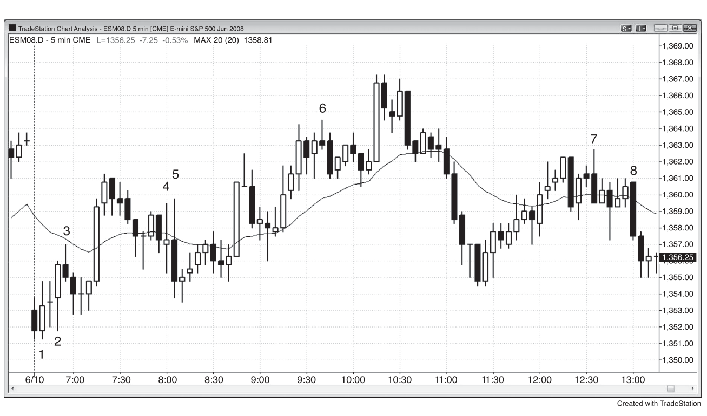
Outside bars have to be evaluated in context. In Figure 7.3, the doji inside bar after bar 1 was not a good short signal bar since there were three sideways bars and bar 1 just reversed the bear bar before it. The odds were that the market would go sideways or up for at least a bar or two after that opening reversal, especially with a relatively flat moving average. There was room up to the moving average for a scalp, and it is best to buy above bull bars. The inside bar was a pause and therefore a type of pullback after the reversal up, so buying above its high and above the bar 1 high was reasonable. A trader could place a buy stop one tick above bar 1, and when bar 2 traded below the inside bar it was wise to keep the stop in place. The logic behind the long remained, and now there were trapped shorts who had made the mistake of selling below a weak signal bar and would cover above the signal bar. This made entering long on bar 2 as soon as it went outside up a good trade. As long as the bar before the outside bar is a decent signal bar, entering on the outside bar can be a sensible trade.
Bar 3 was a bear reversal bar near the moving average and an acceptable short, but it was small compared to the bull bodies of bars 1 and 2 so the market might form a higher low and then rally some more, which often happens when there is a strong outside trend bar at a possible trend reversal. Therefore, whether or not traders shorted below bar 3, they had to be ready to buy a higher low, and the small bull ii two bars later was a good signal.
Bar 4 was an outside bar, but the market was sideways for five bars. Therefore it was just part of the trading range and not a signal bar.
Bar 5 was an even larger outside bar, forming an oo or outside-outside pattern. This is usually just a larger trading range. Here, the bar had a large bear body and closed below the low of bar 4; traders who mistakenly shorted below the bar 4 outside bar were trapped. In general, it is not good to short a breakout of a trading range when many of the bars in the trading range are relatively large and have big tails, because the odds that the breakout will fail are high. The small bull doji bar that followed was a good signal bar for a failed reversal long.
Bar 6 set up a short following the breakout of the top of an outside up bar. Bar 7 broke to a swing high and reversed down as an outside bar that closed on its low. This is an instance where there were trapped bulls and a strong bear reversal after a rally. However, this was a trading range day and any time a leg lasts more than five bars, traders will be looking for a reversal (“Buy low, sell high” on trading range days). Although it was acceptable to short as the bar traded below the small bear bar before it, it would be better to sell below the low of bar 7 since you would be shorting below a strong bear reversal bar as it is getting some follow-through.
Deeper Discussion of This Chart
The market broke out to the downside with a large gap down and a bear trend bar in
Figure 7.3, but instead of trading down and creating a trend from the open bear trend, the breakout to the downside failed and the market reversed up into a trend from the open bull day.
Bar 2 was an outside bar up and a possible low of the day since the market was reversing up from a big gap down. This means that it was on bar 2 that the market decided that the trend was up and therefore it should be considered the start of the move up. Although bar 3 was a low 2 short, it was seen by the market as just a low 1 because it was the first pullback in the move up from the bar 2 start of the rally, and therefore likely to just lead to a higher low. Traders were expecting it to fail, and it does not matter whether you see the move up as a failed low 2 or a failed low 1 because both are good buy setups in a possible bull trend.
Bar 5 was a breakout of a barbwire pattern; most breakouts from barbwire fail, so traders should look for the fade setup. Barbwire is an area of intense uncertainty and two-sided trading. Bulls buy aggressively near the low and stop buying near the high.
Bears sell aggressively near the high but stop shorting near the low. There are large buy and sell programs at work here, as can be seen by the good volume being traded during each bar. Both bulls and bears are comfortable trading here, and if one side is able to briefly overwhelm the other and create a breakout, usually the magnetic effect of the pattern will pull the market back. Once the market broke to the downside, the bulls, who were happy to buy higher in the middle of that trading range, were even happier buying lower. Also, the bears, who were happy selling at the top of the trading range, would be quick to buy back their shorts if there was not immediate follow-through on the breakout. These factors led to the high probability that the breakout would fail and get pulled back into the barbwire, as was the case here. Sometimes the market then breaks out of the other side and other times the trading range continues. Eventually there will be a move out of the pattern.
The first bar of the day and the first several bars often foreshadow what the next few hours, and often the entire day, will look like. The day started with a two-bar reversal, and then a doji, which is an intrabar reversal, and then an outside up bar reversal. There was then a bear reversal and several small bars with tails, indicating uncertainty. Multiple reversals, big tails, and uncertainty are all characteristics of trading range days, which was what the day became. With that suspicion early on, traders were more comfortable placing trades in both directions, scalping a larger portion of their positions, and less inclined to swing.
At 11:25 a.m. PST, there was a bull outside bar that formed a two-bar reversal, and therefore, created a buy setup. This pattern also formed a micro double bottom with the doji bar before it.
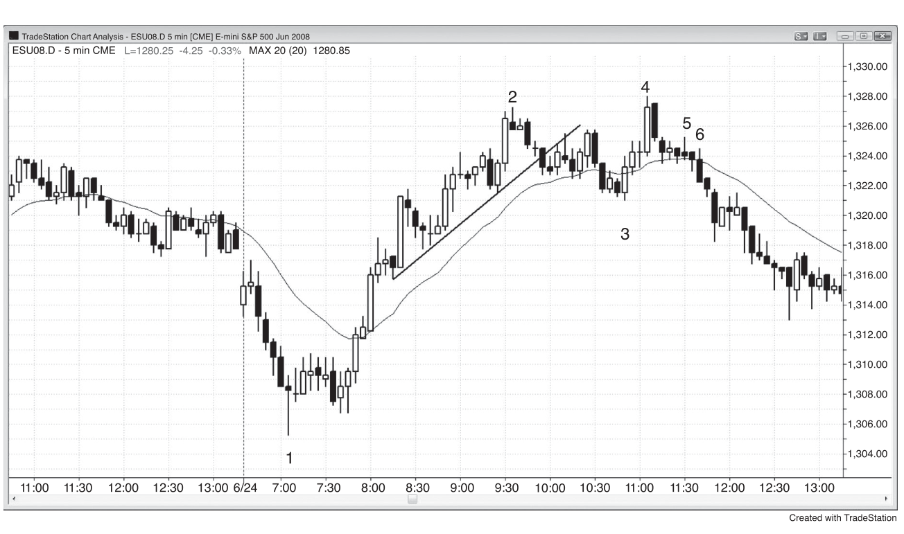
An outside bar can sometimes be a reasonable entry bar. In Figure 7.4, bar 3 was an outside up bar and an acceptable entry bar because it was a reversal up after a two-legged correction in a strong bull trend, and there was a bull trend bar a couple of bars earlier, showing strength. Traders would buy as soon as the bar went above the high of the prior bar, but it would be safer to wait a few more ticks until it went above the high of that bull trend bar from two bars earlier. Buying above a bull bar usually has a higher chance of leading to a profitable trade. Finally, traders could wait for the close of the outside up bar to see if it closed near its high and above the prior bar, which it did. Once they see that strength, they could buy above the high of the outside bar.
Bar 6 was an outside down bar and five of the six prior bars had bear bodies. It closed on its low, and aggressive traders could have shorted below it after such bear strength, especially since it trapped bulls into buying the old bull trend, which now may be over.
Deeper Discussion of This Chart
The market in Figure 7.4 broke out below the trading range of the final hour of yesterday.
The first bar was a bull trend bar but it had a large tail on the top, indicating that the bulls were not strong enough to close the bar on its high. You could either buy above this bar or wait. The second bar was a setup for a breakout pullback short for a trend from the open bear day. The move down to bar 1 was a parabolic sell climax and therefore a possible low of the day. Since the selling was strong, it would be better to wait for a second signal before buying, and it came eight bars later in the form of a higher low and a failed breakout of a bear flag.
The sell-offto bar 3 broke a major trend line, alerting traders to short a test of the bar 2 high. The bar before bar 3 was a moving average gap bar buy setup in a strong trend, so buying above it, even with an outside up bar, was a good trade. The move down to a 20 gap bars setup almost always breaks a trend line, and the move up from the bar usually tests the high of the trend with either a higher high or a lower high. If there is then a reversal down, it usually leads to at least two legs lasting at least 10 bars and often a trend reversal.
Bar 3 was also the second bar of a two-bar reversal with the bear bar before it and with the bear bar from two bars earlier, so many bulls bought above the high of bar 3.
Bar 4 was a large bull trend bar (climactic) that formed a higher high, and it was followed by a strong bear inside bar that was the signal for the short. Traders were expecting two legs down from such a strong setup. As such, smart traders will be watching for the formation of a high 1 and then a high 2 and readying themselves to short more if these long setups fail and trap the bulls.
Bar 5 was a short setup for a failed high 1, and bar 6 was a great bull trap. It was a failed high 2, and the long entry bar reversed into an outside bar down, trapping longs in and bears out. This outside bar acted like a bear trend bar and not just an outside bar.
Because it was an outside bar, the entry bar and its failure happened within a minute or two of each other, not giving traders enough time to process the information. Within a bar or two, they realized that the market in fact had become a bear trend. The longs were hoping for a two- or three-bar pullback to exit with a smaller loss, whereas the bears were hoping for the same rally to allow for a short entry with a smaller risk. What happened was that both sides started selling every two- or three-tick pullback, so a twoor three-bar rally did not come until the market had gone a long way.
Note that the high 2 long was a terrible buy setup because five of the six prior bars were bear bars and the other bar was a doji. A high 2 alone is not a setup. There first has to be earlier strength, usually in the form of a high 1 leg that breaks a trend line, or at least an earlier strong bull trend bar.
The Importance of the Close of the Bar
A5 minute bar usually assumes something similar to its final appearance seconds to a minute or more before the bar closes. If you enter before the bar closes, you might occasionally make a tick or so more on your trade. However, once or twice every day, the signal that you thought was going to happen does not and you will lose about eight ticks. That means that you need about eight early entries to work as planned for every one that does not, and that simply won’t happen. You can enter early with trend in a strong trend and you will likely be fine. However, when there is a strong trend, you have so much confidence in the signal that there is no downside to waiting for the bar to close and then entering on a stop beyond the bar. You cannot be deciding on every bar if an early entry is appropriate, because you have too many other important decisions to make. If you add that to you list of things to think about, you will likely end up missing many good trades every day and forgo far more in missed opportunities than you could gain on an occasional successful early entry.
This holds true for all time frames. For example, look at a daily chart and you will see many bars that opened near the low but closed in the middle. Each one of those bars was a strong bull trend bar with a last price on the high at some point during the day. If you bought under the assumption that the bar was going to close on its high and bought near the high and instead it closed in the middle, you would realize your mistake. You are carrying home a trade that you never would have entered at the end of the day.
There are two common problems that regularly occur on the 5 minute chart. The most costly is when you try to pick a bottom in a strong trend. Typically you will see a lower low after a trend line break and traders will be hoping for a strong reversal bar, especially if there is also a bear trend channel line overshoot. The bar sets up nicely and is a strong bull reversal bar by the third minute or so. The price is hanging near the high of the bar for a couple of minutes, attracting more and more countertrend traders who want to get in early so that their risk will be smaller (their stop will be below the bar), but then with one to five seconds remaining before the bar closes, the price collapses and the bar closes on its low. All of those early longs who were trying to risk a tick or two less end up losing two points or more. These longs let themselves get trapped into a bad trade. A similar situation happens many times a day when a potential signal bar is forming just before the bar closes. For example, a trader might be looking to short below a bear reversal bar that has seconds to go before it closes, and the current price is on the bottom of the bar. With less than a second before the bar closes, the close bounces up two or three ticks from the low of the bar, and the bar closes off its low. The market is telling the trader that the signal is now weaker, and the trader needs to avoid getting trapped into trading based on the expectation and hope that she had just three seconds ago.
The other common problem is getting trapped out of a good trade. For example, if you just bought and your trade has had three to five ticks of open profit but the market just can’t hit six, allowing you to scalp out with four ticks of profit, you start to become nervous. You look at the 3 or 5 minute chart with about 10 seconds before its bar closes and it is a strong bear reversal bar. You then move your protective stop up to one tick below that bar, and just before the bar closes, the market drops and hits your stop, only to pop up several ticks in the final two seconds of the bar. Then, within the first 30 seconds of the next bar, the market quickly goes up to six ticks where smart traders took partial profits while you are sitting on the sidelines. Good entry, good plan, bad discipline. You just let yourself get trapped out of a good trade. If you had followed your plan and relied on your initial stop until the entry bar closed, you would have secured your profit.
There is one other point about bar closes. Pay very close attention to the close of every bar, especially for the entry bar and the bar or two later. If the entry bar is six ticks tall, you would much prefer seeing the body suddenly increase from a body that was two ticks to one that was four ticks in the final seconds of the bar. You will then likely reduce the number of contracts that you will scalp out. This is true for the next couple of bars as well. If there are strong closes, you should be more willing to swing more contracts and hold them for more points than if these bars had weak closes.
Another reason why the close is important is that many institutional traders place orders based on value and not price action, and when they look at charts, the charts are line charts, which are based on the close. They would not look at charts at all if the charts did not influence their decision making, and the only price they are considering is the close, which increases its importance.
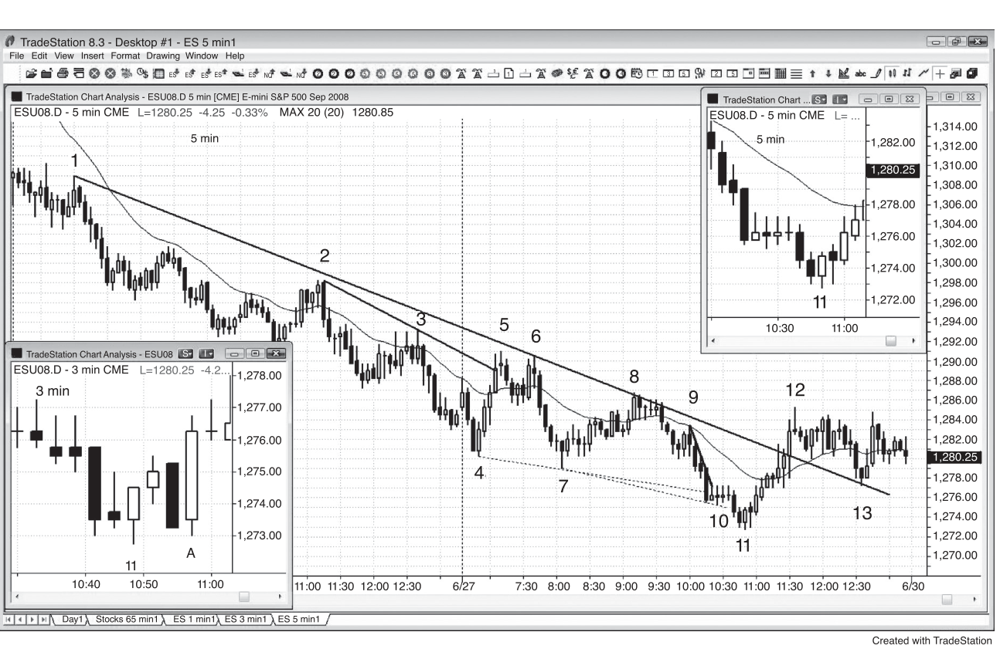
Smaller time frame charts allow for smaller stops but have a greater risk of stopping a trader out of a good trade. In Figure 8.1, the insert on the left shows that traders using the 3 minute chart were stopped out, but traders who relied on the 5 minute chart did not get stopped out.
The 5 minute Emini had been in a strong bear trend for weeks and was now starting to have bigger pullbacks. Each new lower low was being bought, and the longs were profitable countertrend trades. The bulls were more confident and the bears were becoming more willing to take profits. The thumbnail on the left is a 3 minute chart and the one on the right is a close-up of the 5 minute chart.
Bar 11 was a strong bull reversal bar and a two-bar reversal, and it was the second attempt to reverse up from a lower low (the ii after bar 10 was the first) and it was the third push down on the day (a possible wedge bottom). This was a high-probability long, but the stop would have had to be beneath its low, three points below the entry price. This was more than what was typically required in the Emini (two points worked recently and when the average daily range had been about 10 to 15 points), but that was what the price action showed was needed. If traders were nervous, they could have just traded half size, but they must take a strong setup like this one and plan on swinging half.
This is a perfect example of a common problem that traders face when they try to reduce risk by watching a smaller time frame chart. The risk is smaller but the probability of success also drops. Since there are more trades on a 3 minute chart, there is more risk of missing the best ones, and this can lead to the overall profitability of 3 minute trades being less for many traders.
Just like on the 5 minute chart, the 3 minute chart also had a reversal bar at bar 11. However, the stop below the entry bar was hit by a bear trend bar with a shaved top and bottom, indicating strong sellers. At this point, it would have been very difficult to reconcile that with the 5 minute chart where the stop had not been hit. The large size of the stop required on the 5 minute chart would make traders more willing to exit early and take a loss. If traders were also watching the 3 minute chart, they almost certainly would have exited with a loss and would have been trapped out of the market by that strong bear trend bar. The next bar on the 3 minute chart was a very strong outside bull trend bar, indicating that the bulls were violently asserting themselves in creating a higher low, but most of the weak hands who were stopped out would likely be so scared that they would not take the entry, and instead wait for a pullback.
Stop runs on the 3 minute chart are much more common than on the 5 minute chart at important reversals, and smart traders look at them as great opportunities. This is because they trap weak longs out of the market, forcing them to chase the market up. It is always better to just watch and trade off one chart because sometimes things happen too quickly for traders to think fast enough to place their orders if they are watching two charts and trying to reconcile the inconsistencies.
Deeper Discussion of This Chart
Bar 5 broke above a trend line in Figure 8.1, and bar 8 exceeded another by a fraction of a tick. Both breakouts failed, setting up with-trend shorts.
Exchange-Traded Funds and Inverse Charts
Sometimes the price action becomes clearer if you change something about the chart. You can switch to a bar or line chart, a chart based on volume or ticks, or a higher or lower time frame, or you can simply print the chart. Several exchange-traded funds (ETFs) are also helpful. For example, the SPDR S&P 500 ETF (SPY) is almost identical in appearance to the Emini chart and sometimes has clearer price action.
Also, it can be helpful to consider the chart from an opposite perspective. If you are seeing a bull flag but something doesn’t seem quite right, consider looking at the ProShares UltraShort S&P 500 (SDS), which is an ETF that is based on the inverse of the SPY (but with twice the leverage). If you look at it, you might discover that the bull flag that you were seeing on the Emini and SPY might now look like a rounding bottom on the SDS. If it does, you would be wise not to buy the Emini flag and instead to wait for more price action to unfold (like waiting for the breakout and then shorting if it fails). Sometimes patterns are clearer on other stock index futures, like the Emini Nasdaq-100, or its ETF, the QQQ, or its double inverse, the QID, but it is usually not worth looking at these and it is better to stick with the Emini and sometimes the SDS.
Since an ETF is a fund, the firm that runs it is doing so to make money and that means that it takes fees from the ETF. The result is that the ETFs don’t always track exactly with comparable markets. For example, on triple witching days, the SPY will often have a much larger gap opening than the Emini, and the gap is due to a price adjustment to the SPY. It will still trade pretty much tick for tick with the Emini throughout the day, so traders should not be concerned about the disparity.
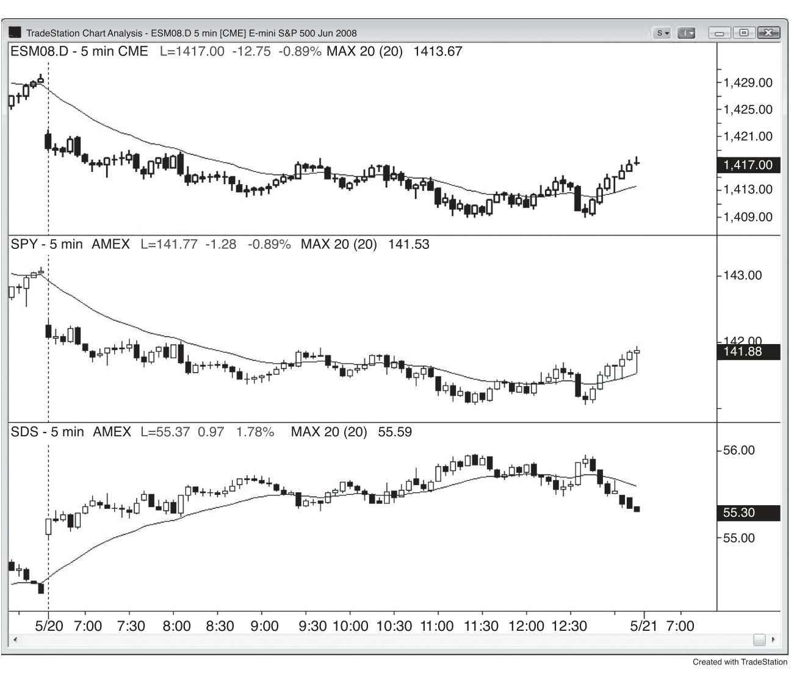
As shown in Figure 9.1, the top chart of the Emini is essentially identical to that of the SPY (the middle chart), but the price action on the SPY is sometimes easier to read because its smaller tick size often makes the patterns clearer. The bottom chart is the SDS, which is an ETF that is the inverse of the SPY (with twice the leverage). Sometimes the SDS chart will make you reconsider your read of the Emini chart.
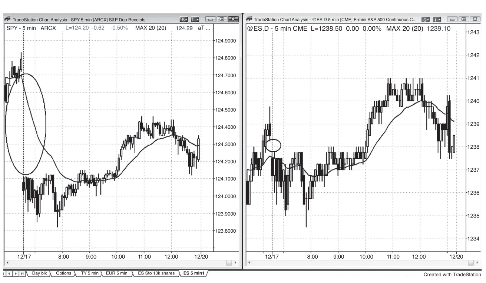
As shown in Figure 9.2, on a triple witching day the SPY’s price gets adjusted, and this often results in a gap opening that may be much larger than that on the Emini (the SPY is on the left and the Emini is on the right). However, they then pretty much trade tick for tick, like on any other day, so don’t be concerned by the gap and just trade the price action as the day unfolds.
Second Entries
Analysts often say that bottoms on the daily chart usually require a second reversal off the low to convince enough traders to trade the market as a possible new bull trend. However, this is true of tops as well. A second entry is almost always more likely to result in a profitable trade than a first entry.
If the second entry is letting you in at a better price than the first, be suspicious that it might be a trap. Most good second entries are at the same price or worse. A second-entry trader is someone entering late, trying to minimize risk, and the market usually makes him pay a little more for that additional information. If it is charging you less, it might be setting you up to steal your money in a failed signal.
Traders looking for second entries are more aggressive and confident and will often enter on smaller time frame charts. This usually results in traders on the 5 minute charts entering after many other traders have already entered, making the entry a little worse. If the market is letting you in at a better price, you should suspect that you are missing something and should consider not taking the trade. Most of the time, a good fill equals a bad trade (and a bad fill equals a good trade!).
If you are fading a move, for example shorting the first reversal in a strong bull trend where the move had about four consecutive bull trend bars or two or three large bull trend bars, there is too much momentum for you to be placing an order in the opposite direction. It is better to wait for an entry, not take it, wait for the trend to resume for a bar or two, and then enter on the market’s second attempt to reverse.
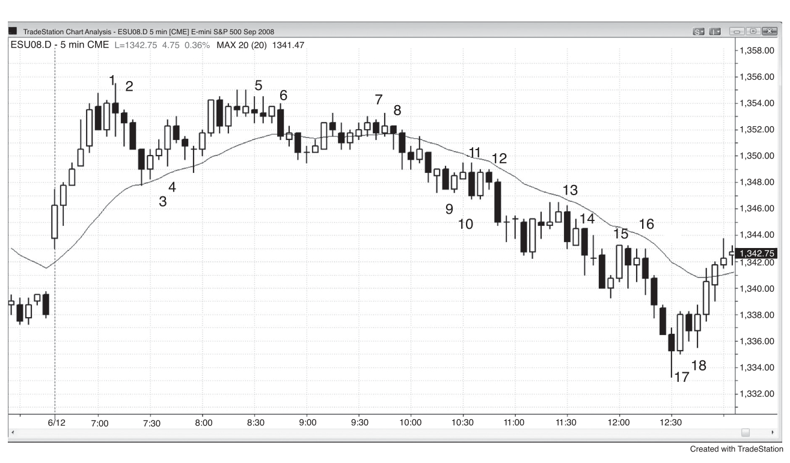
There were many second-entry trades today (see Figure 10.1), and all but one were at the same price or a worse price than the first entry. Look at the bar 10 long. The market is letting you buy at one tick better than the traders who bought at bar 9. In general, the “good fill, bad trade” maxim applies. Whenever the market is offering you a bargain, assume that you are reading the chart incorrectly; usually it is better not to take the trade. Even though bar 10 was a second entry, the momentum down was strong, as seen by the tight bear channel down from bar 8. Before taking a countertrend trade, it is always better to see some evidence in the preceding several bars that the bulls were able to move more than just a couple of ticks above the prior bar.
As discussed in book 3, most tops occur from some type of micro double top, like bar 1 and the bear reversal bar from two bars earlier, and most bottoms occur from some type of micro double bottom, like bar 18 and the bar before bar 17.
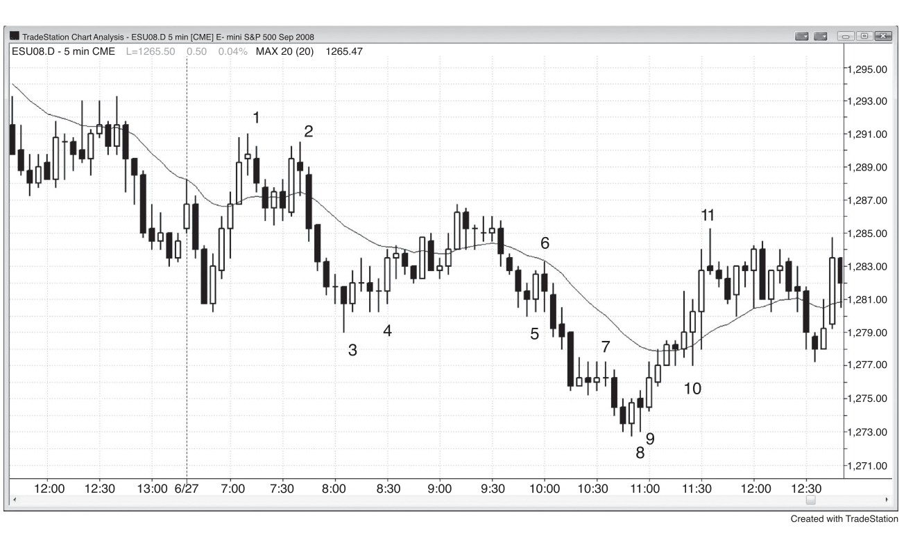
When the momentum is strong, it is better to wait for a second reversal setup before trading countertrend (see Figure 10.2).
Bar 1 followed five bull trend bars, which is too much upward momentum to be shorting the first attempt down. Smart traders would wait to see it the bulls would fail in a second attempt to rally before going short, and this happened on the second short entry at bar 2.
Bar 3 was a first entry long on a new low of the day, but after six bars without a bullish close it makes more sense to wait for a second long entry, which occurred on bar 4.
Bar 5 followed four bear trend bars, which is too much downward momentum to buy. A second entry never developed, so smart traders averted a loss by waiting.
Bar 10 followed six bars with higher lows and only two bars with small bear bodies, indicating too much bullish strength for a short. There was a second entry at the bar 11 bear reversal bar.
Deeper Discussion of This Chart
The market in Figure 10.2 broke above the bear channel into yesterday’s close, but the breakout failed at the moving average, setting up a short. Today the market broke out below yesterday’s low, but the breakout failed on the reversal up on the fourth bar of the day. This reversal can be thought of as a breakout pullback to a lower low after the first bar broke above the small bear channel.
The market failed to put in a higher high and instead the trending bear channel continued. Traders should have shorted below the bar 6 double top because the attempt to become a trend from the open failed as the market failed to break above a prior lower high. The trend of lower highs and lows was continuing.
The pullback from the bear spike that ended on the bar before bar 3 formed a low
4 short setup that triggered with a bear trend bar at 9:35 a.m. PST. The bear breakout grew into a four-bar bear spike.
Bar 5 was a high 2 but it followed four bear trend bars and therefore should not be bought.
Bar 6 was the start of a four-bar bear spike.
The bar 7 ii was a possible final flag.
Bar 7 led to a two-bar bear spike. All three-bear spikes in this channel down from that low 4 short constitute consecutive sell climaxes, and once there are three, the odds of at least a two-legged rally are high.
Traders could have gone long on bar 9 after the bar 8 reversal bar, expecting at least two legs up after a final flag and protracted bear trend. Bar 8 was a micro double bottom (a buy setup) since the market went down on bar 8 and it also went down two bars earlier (bear bar).
Bar 10 was a low 1 but there was too much bullish strength for a short, and it made more sense to look to buy a higher low or even on a limit order below the prior bar. With this much upward momentum, the market was very likely to at least test the high of the leg up.
Bar 11 was a doji reversal bar after a big bull trend bar. A big bull trend bar after five to 10 bar bull trend bars is a buy climax and is likely to be followed by about 10 or more sideways to down bars before the bulls return. It is also in the area of the final lower high of the bear trend, creating a potential double top bear flag. With the bulls as strong as they were, most traders assumed that the market would have a higher low, but they used the double top bear flag as an area to take profits. Some bear scalpers shorted there, expecting at least a test down to the moving average. With so many bull trend bars in that rally, it was likely that the market would form a higher low since buyers were clearly aggressive.
Late and Missed Entries
I f you look at any chart and think that if you had taken the original entry you would still be holding the swing portion of your trade, then you need to enter at the market. The market has a clear always-in position, and you need to participate in the trend, because the probability of making a profit is high. However, you should enter only with the number of shares or contracts that you would still be holding had you taken the original entry, and you should use the same trailing stop. Your stop will usually be larger than what you would use for a scalp, and you therefore need to trade a smaller position to keep your dollar risk the same. For example, if you see a strong trend underway in GS, and had you taken the original entry with 300 shares you now would only be holding 100 shares with your protective stop $1.50 away, you should buy 100 shares at the market and place a $1.50 protective stop. Logically, it doesn’t make any difference whether you are buying a swing-size portion now or holding a swing position from an earlier entry. Although it might be easier emotionally to think of the trade with the open profit as risking someone else’s money, that is not the reality. It is your money, and what you are risking is no different from buying now and risking the same $1.50. Traders know this and will place the trade without hesitation. If they do not, then they simply do not believe that they would still be holding any shares had they entered earlier, or they need to work on this emotional issue.
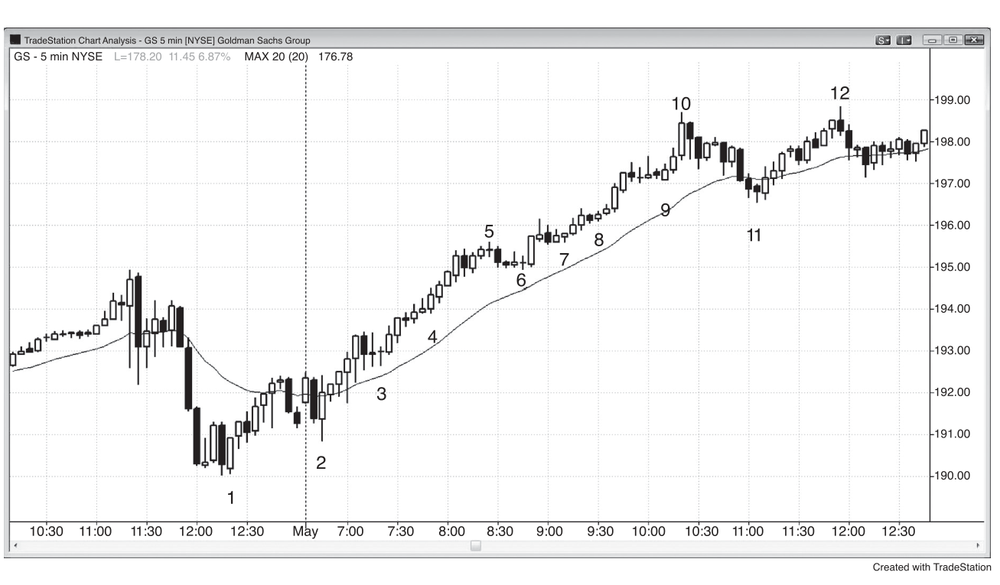
Once the market starts forming four or more consecutive bull trend bars that are not too large and therefore possibly climactic, traders should buy at least a small position at the market instead of waiting for a pullback.
As shown in Figure 11.1, GS had a strong two-legged sell-off into the close yesterday but a strong bull reversal bar at bar 2. It was setting up a higher low test of the bear low and a bull trend day.
If traders began watching this chart at around bar 4, they would have seen a series of bull trend bars and a strong bull trend. They would probably have wished that they had at least the swing portion of their position still working. If they normally trade 300 shares and at this point would have only 100 shares left from that entry above bar 3, they should buy 100 shares at the market. Also, they should use the same stop that they would have used had they entered above bar 3. Since they would have only the swing portion remaining, they should use a breakeven stop or maybe risk about 10 cents below the bar 3 high. They should also look for pauses and pullbacks to add on. After adding on above bar 6, they could move the stop for the entire position to one tick below the bar 6 signal bar and then trail it up.
Entering late while using the original stop is absolutely identical to being long the swing portion of the original position, using the same protective stop.
Deeper Discussion of This Chart
The first bar of the day in Figure 11.1 broke above the closing swing high, setting up a small double top bear flag short at the moving average. However, this second attempt to break below the bear flag that began at bar 1 failed. Bar 2 reversed strongly up and formed a two-bar bull reversal. The next bar was a bull inside bar and was a good signal bar for the trend from the open bull. It also reversed up from the breakout below the small double bottom formed by the final four bars of yesterday.
The sell-offto the bar 11 moving average gap bar broke the bull trend line and should be expected to lead to a higher high or lower high test of the bull high. Normally, the market would then form a larger or more complex correction. However, the rally up to bar 10 was in such a tight channel that it showed that the bulls were exceptionally strong. The entire rally was probably a spike on a higher time frame chart, and it would probably be followed by a channel up on that chart before there was much of a correction on the 5 minute chart. Also, the bar 11 moving average gap bar was also a 20 gap bar pullback. After the first new high following a 20 gap bar pullback, the market usually pulls back and then tests the high again, so this moving average gap bar would likely function more like a 20 gap bar setup than a typical moving average gap bar setup.
Pattern Evolution
I t is important to remember that the current bar can always be the start of a big move in either direction, and you have to watch carefully as the price action unfolds to see if a pattern is changing into something that will lead to a trade in the opposite direction. Patterns frequently morph into other patterns or evolve into larger patterns, and both can result in trades in the same or in the opposite direction. Most of the time, if you read the price action correctly, the original pattern will provide at least a scalper’s profit. Likewise, the larger pattern should as well. It does not matter whether you label the larger pattern as an expanded version of the original pattern. Names are never important. Just make sure that you read correctly what is in front of you and place your trade, ignoring the pattern that completed a couple of bars earlier.
The most common example of a morphed pattern is a failure, where a pattern fails to yield a scalper’s profit and then reverses into a signal in the other direction. This traps traders on the wrong side of the market, and as these traders are forced to exit with losses, they will then provide the fuel that will drive the market to at least a scalper’s profit in the opposite direction. This can happen with any pattern, since all can fail. If the failure just goes sideways for a number of bars and then a new pattern develops, it makes more sense to simply regard the new pattern as being independent of the first. Ignore the first one because there will not be many trapped traders left who will drive the market as they are forced to exit with losses.
Although it is not important at this point to be familiar with all of the patterns in the book, in later chapters you will see common examples of pattern evolution. An expanding triangle sometimes expands from five legs to seven. A micro trend line breakout usually fails and then has a breakout pullback. When a final bear flag fails to reverse the market, it usually morphs into a breakout pullback sell setup. It then often enlarges into a wedge reversal setup, or into a larger trading range that often becomes a larger final flag. A bull spike and channel trend pattern usually evolves into a trading range and then a double bottom bull flag. In the first hour, double top bear flags often evolve into double bottom bull flags and vice versa. If you are aggressively trading the market in question, you should look to take both entries, and swing part of them, because a big move is common from either the first or second of these patterns.
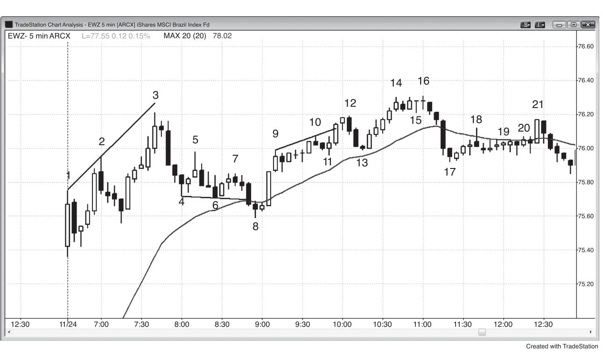
Reliable patterns fail about 40 percent of the time and often evolve into larger patterns that set up entries in either direction. Figure 12.1 is the 5 minute EWZ, which is the iShares MSCI Brazil Index Fund. Here, the low 2 short setup below bar 2 failed but the pattern evolved into a larger wedge top with an entry below the bar that followed bar 3.
The bar 19 low 2 bear flag evolved into a more complex low 2 short setup below the bar 21 two-bar reversal. The first push up was bar 18.
Deeper Discussion of This Chart
The high 2 after bar 6 in Figure 12.1 evolved into a wedge bull flag above bar 8 at the moving average. It was also a spike and channel bear where bar 8 was the third push down in the channel, which is often the end of the channel.
The low 2 at bar 10 was likely to fail since the spike up to bar 9 was strong. The low 1 entry was two bars before bar 10. The pattern became a failed low 2 buy at bar 11 and then a spike and channel top at bar 12, where the channel ended in the third push up, which is common.
The bar 15 high 2 failed and the pattern turned into a second attempt to reverse down at a new high of the day. The entry was below the high 2 entry bar that followed bar 15.
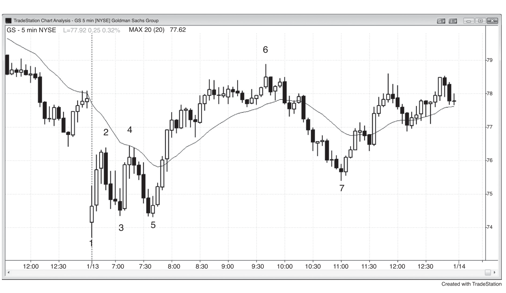
In the first hour, it is common to see both a double top and a double bottom, putting the market in breakout mode. In Figure 12.2, the double top in GS evolved into a double bottom bull flag. This is a common pattern, and you should take both entries (short below bar 4 and then go long above bar 5) and swing part because a big move commonly follows either the first or the second pattern. Remember, one extreme usually forms in the first hour, which means that the market will then usually move away from that price for much of the next couple of hours, and possibly all day if the day becomes a trend day. Here, GS had a large gap down that broke below a trend channel line from yesterday and reversed up on the first bar of the day. The market formed a low 2 and a double top bear flag at the falling moving average at bar 4, only to reverse up at the bar 5 double bottom bull flag. The market then ran up $3 to the bar 6 high of the day.
Deeper Discussion of This Chart
Large gap openings often lead to trend days in either direction. With the first three bars strongly up in Figure 12.2, a bull trend was more likely, especially after a reversal up from the overshoot of the bear trend channel from yesterday. However, the bear trend tried to reassert itself at the moving average but when the market came down to bar 5, it again found strong bulls in the area of the low of bar 3. The bar 4 second attempt to create a bear trend day failed, and the market then proceeded to create a bull channel once the bar 5 second attempt to form a bottom succeeded.
The market had bull spikes up to bar 2 and bar 4 and bear spikes down to bar 3 and bar 5. This often results in a trading range as the bulls and bears continue to trade in an attempt to generate a channel in their direction. Here, the market formed a very strong five-bar bull spike up from bar 5 and then a three-push channel up to bar 6. Some traders will look at this chart and say that the move up to bar 2 was a spike and the trading range to bar 5 was a pullback that led to a channel up to bar 6. Other traders will say that the spike up from bar 5 was the dominant feature of the day and that the bull channel began once that five-bar bull spike ended. There is no one clear answer and both traders have valid interpretations. The important thing is to see that the bull spikes up from bar 1 and bar 5 were stronger than the bear spikes down from bar 2 and bar 4, and therefore the odds favored a bull channel.
This could have been a trend from the open bull trend day but instead became a trending trading range day. Bar 7 tested down into the lower trading range and then reversed up into the close, near the high of the higher trading range.